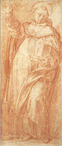
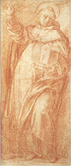

|  |
|---|
Textum Leoninum Romae 1886 editum
et automato translatum a Roberto Busa SJ in taenias magneticas
denuo recognovit Enrique Alarcón atque instruxit


|  |
|---|


[90692] In De generatione continuatio, lib. 1 l. 18 n. 1 Postquam philosophus determinavit de generatione et corruptione in communi, et de aliis sequentibus, scilicet de augmentatione et alteratione, incipit determinare de quibusdam quae ad haec requiruntur. Et primo dat intentionem suam; secundo prosequitur intentum, ibi: fere quidem et cetera. Circa primum duo facit: primo determinat intentionem suam; secundo ostendit necessitatem suae intentionis, ibi: omnes enim qui et elementa et cetera. Dicit ergo primo quod, cum oporteat dicere de materia circa quam est transmutatio elementorum; et de ipsis elementis, secundum contrarietates quae sunt in eis: utrum scilicet sint aut non; et utrum unum eorum sit sempiternum et intransmutabile, sicut supra dicit Empedocles, aut generantur; et si generantur, qualiter generantur: utrum scilicet generantur adinvicem aut moventur, aut est aliquod principium eorum, ex quo generantur, et in quod resolvuntur, sicut diversi dixerunt, ut Democritus atomos, Anaxagoras infinita secundum speciem; quia, inquam, illa determinare debemus, oportet prius determinare de quibusdam antecedentibus ad illa, de quibus dicitur indeterminate nunc; quod quidem potest dupliciter intelligi: uno modo, quod philosophi sui temporis indeterminate et insufficienter dixerunt de ipsis, alio modo, quia de generatione indeterminate et confuse dictum est de ipsis.
[90693] In De generatione continuatio, lib. 1 l. 18 n. 2 Deinde cum dicit: omnes enim qui et elementa etc., ostendit necessitatem determinandi, dicens quod omnes philosophi tangentes elementa vel ex elementis generata, utuntur congregatione et segregatione. Quae enim ex elementis generantur, ex congregatione elementorum generantur, quae vero corrumpuntur, ex segregatione elementorum corrumpuntur; quae etiam dicebant agere et pati adinvicem. Cum ergo congregatio sit quaedam mixtura, oportet de mixtura determinare. Qualiter enim fiat mixtio et quid sit, non est adhuc manifeste determinatum. Cum autem nec alteratio nec congregatio vel segregatio possint fieri sine actione et passione, oportet prius determinare de actione et passione. Illi enim qui ponunt plura principia, dicunt esse generationem per actionem et passionem elementorum adinvicem. Similiter et illi qui ex uno materiali principio dicunt alia fieri, necesse habent ponere agere et pati. Ideo recte dixit Diogenes, cum dixit quod, nisi ex uno materiali principio fierent omnia, impossibile esset aliqua adinvicem transmutari. Aliter enim non posset calidum frigefieri, nec frigidum calefieri, nisi subesset una materia: impossibile est enim quod frigiditas sit caliditas, vel e converso; sed oportet quod habeant unum commune subjectum, per quod possint adinvicem transmutari. Quapropter quae agunt et patiuntur adinvicem, necesse est habere unam subiectam materiam, quae sit susceptiva contrariorum. Non tamen omnia agentia et patientia sunt talia, scilicet habentia unam materiam, sed solum illa quae agunt et patiuntur adinvicem. Sunt enim aliqua quae agendo non patiuntur, sicut substantiae separatae, et corpora caelestia; quae scilicet corpora, licet patiantur, utpote quae moventur, tamen non patiuntur ab his quae moventur ab eis. Ulterius autem, cum mixtio et facere et pati non possint fieri sine tactu (nam ea quae adinvicem non se tangunt, non possunt adinvicem agere et pati), ideo determinando de ipsis oportet de tactu tractare. Inter ista autem tria prius determinandum de tactu, quia tactus prior est: sequitur enim ad ista duo, sed non e converso. Necesse enim est quod ista quae miscentur, adinvicem se tangant, sed non convertitur. Similiter si aliquid agit et patitur ab eo, necesse est etiam quod ista se tangant, sed non convertitur. Cum ergo primum sit, a quo non convertitur consequentia, primum inter tria dicendum de tactu.
[90694] In De generatione continuatio, lib. 1 l. 18 n. 3 Deinde cum dicit: fere quidem igitur etc., prosequitur intentum. Et circa hoc tria facit, secundum quod de tribus determinat. Primo determinat de tactu; secundo de facere et pati, ibi: de facere et pati etc.; tertio de mixtione, ibi: reliquum autem videndum et cetera. Circa primum duo facit: primo distinguit hoc nomen tactus; secundo incipit agere de ipso, ibi: sed tamen principaliter et cetera. Dicit ergo primo, quod tactus dicitur multipliciter, sicut fere unumquodque aliorum nominum: quaedam enim dicuntur aequivoce, quaedam analogice et transumptive, sive metaphorice; ita etiam tactus dicitur proprie et transumptive. Dicit autem fere, quia forte non omnia dicuntur multipliciter.
[90695] In De generatione continuatio, lib. 1 l. 18 n. 4 Deinde cum dicit: sed tamen etc., prosequitur de tactu: et primo de tactu proprie sumpto; secundo de tactu sumpto transumptive, ibi: est autem ut aliquando et cetera. Circa primum duo facit: primo investigat definitionem tactus; secundo investigatam concludit, ibi: sed determinatio et cetera. Circa primum ponit conditiones quae requiruntur ad tactum. Est autem tactus, ut infra ponet, in habentibus positionem, quorum ultima sunt simul, moventibus et motis, activis et passivis adinvicem. Primo ergo manifestum supponit concludens primam conditionem, dicens quod tactus proprie et principaliter dictus est in habentibus positionem. Positio autem non est nisi in habentibus locum. Et ideo cum mathematica habeat positionem, sive sint separata secundum rem sive secundum rationem tantum, habent etiam locum. Nam sicut dicit Commentator super loco isto, licet mathematica abstrahantur ab aliis accidentibus, scilicet a motu et materia, impossibile est tamen ea imaginari sine loco, cum corpus naturale non sit in loco nisi secundum suas dimensiones, et non per alia accidentia. Locus ergo inseparabilis est a mathematicis corporibus. Ipsis tamen non convenit locus et tactus nisi per quandam similitudinem ad naturalia. Nulla enim vere sunt in loco, nisi naturalia secundum esse accepta; in quibus sunt mathematica secundum esse suum: et ideo etiam in ipsis habent locum et tactum. Nec accipiuntur hic secundum abstractionem ab esse, quia talis consideratio non est naturalis, sed mathematica; et ideo locus et tactus convenit eis, secundum quod talia, per posterius.
[90696] In De generatione continuatio, lib. 1 l. 18 n. 5 Secundo ibi: si igitur est ut determinatum etc., ponit secundam conditionem, dicens quod si ita est, ut dictum est in V Physic., quod tangere est habere ultima simul, illa se tangunt quae habent determinatas magnitudines et positionem, et quorum ultima sunt simul. Et inest secunda conditio, scilicet habere ultima simul.
[90697] In De generatione continuatio, lib. 1 l. 18 n. 6 Tertio ibi: quoniam autem positio etc., investigat tertiam conditionem, scilicet quod tactus est in moventibus et motis, dicens quod positio est in habentibus locum; et quia primae differentiae loci sunt sursum et deorsum ut dicitur in II de caelo, necesse est ut quae se tangunt, sint sursum aut deorsum. Ideo quae se tangunt, sunt gravia aut levia: aut ambo, sicut elementa media, quae sunt gravia et levia secundum diversos respectus ut dicitur in IV de caelo, aut alterum eorum, sicut extrema, quorum alterum est simpliciter grave, et alterum simpliciter leve. Omnia autem talia dum tangunt se, agunt et patiuntur adinvicem. Quapropter concludit manifestum esse quod illa proprie se tangunt, quorum diversae sunt magnitudines, et simul habent ultima, quae movent et moventur adinvicem per virtutem illorum ultimorum.
[90698] In De generatione continuatio, lib. 1 l. 18 n. 7 Quarto ibi: quoniam autem movens etc., investigat quartam conditionem, quae est quod tactus est in activis et passivis. Et dicit, quia non omne movens movetur, sed quoddam est movens motum, quoddam autem movens immobile (et hoc dupliciter: aliquid enim simpliciter nullo modo movetur, sicut movens primum, aliquod autem movens non movetur a moto, licet moveatur ab aliquo), secundum quorundam existimationem agens etiam invenitur in istis duobus modis: quia quidam dicunt quod actus moventis est quoddam facere, et e converso quod actus facientis est quoddam movere. Quod tamen falsum est: differunt enim movens et faciens; quorum differentiam oportet nos determinare. Si enim nos dicimus quod faciens opponitur secundum suam speciem patienti, tunc, cum contraria nata sint fieri circa idem, oportet quod faciens patiatur cum tangat ipsum. Haec autem sunt quibus motus est passio, idest quae movendo patiuntur secundum alterationem aliquam. Alteratio autem sola est secundum passiones, idest passibiles qualitates, ut secundum calidum vel frigidum. Cum ergo calidum contrarietur frigido, et album nigro, et sic in aliis, duo possunt concludi: primum scilicet, quod agens et patiens habent contrarias qualitates; secundum est quod, cum non omne movens sit tale, non omne movens est agens. In plus ergo erit movere quam agere. Ex his ergo quae dicta sunt concludit corollarium quoddam, dicens quod moventia immobilia tangunt ipsa mobilia; est autem ut sic, est autem ut non sic: quia tangunt per ultimum virtutis egredientis ab esse eorum, sed non tangunt per ultimum suae quantitatis tantum. Quia si sunt immobilia simpliciter, ut substantiae separatae, non habent ultimum; si vero sint ab his quae movent, immobilia, sicut astra non moventur a terra quam movent, et tunc non habent ultima simul cum ultimis illorum quae moventur. Ad evidentiam illorum quae hic dicuntur considerandum est, quod agens sive faciens potest sumi dupliciter. Uno modo communiter, prout scilicet virtus alicuius procedit quocumque modo in id quod subiicitur sibi: et hoc modo superius est ad movens. Alio modo potest sumi naturaliter sive physice: et hoc modo in minus est quam movens, et opponitur secundum suam speciem patienti.
[90699] In De generatione continuatio, lib. 1 l. 18 n. 8 Deinde cum dicit: sed determinatio tangere etc., concludit investigatam definitionem tactus, dicens quod determinatur vel definitur ipsum tangere universaliter, quod est in habentibus positionem, moventibus et motis, a se invicem activis et passivis. Et ex hoc concludit ulterius quoddam corollarium, quod frequentius et fortius dicitur esse tactum omne agens naturale quod tangendo tangitur: quia fere omnia quae sunt in conspectu nostro circa locum activorum et passivorum, movent mota, in quibus necessario videtur esse tactus.
[90700] In De generatione continuatio, lib. 1 l. 18 n. 9 Deinde cum dicit: est autem etc., determinat de tactu improprie dicto, dicens quod sicut inquimus, idest dicimus, quoddam est movens quod solum tangit id quod movetur, sed id quod tangitur, scilicet ipsum motum, non tangit tangens, idest movens. Et in talibus est tactus improprie sumptus; et ista sunt quae non sunt unius generis physici. Sed illa quae sunt homogenea, idest unius generis naturalis, mota movent; et in talibus necesse est quod tactum tangat tangens. Et si est aliquod movens immobile, tangit id quod movetur, sed non tangitur ab eo. Et est simile sicut inquimus, idest dicimus, aliquando, quod contristans tetigit nos, et nos non tetigimus contristantem: ut quando aliquis dicit verbum iniuriosum, unde contristamur, sed nos non tetigimus contristantem. Ulterius epilogat, dicens quod de tactu in naturalibus dictum est hoc modo.
[90701] In De generatione continuatio, lib. 1 l. 19 n. 1 Postquam philosophus determinavit de tactu, quod est unum de tribus necessariis ad principale propositum, hic incipit determinare de facere et pati. Et est rectus ordo: quia sicut tactus praecedit actionem et passionem, eo quod agentia et patientia necesse est quod adinvicem se tangant, ita agere et pati praecedit mixtionem, eo quod ad mixtionem necesse est quod aliquid agat et aliquid patiatur ut infra dicetur; et ideo ante mixtionem determinat de agere et pati. Circa hoc duo facit: primo determinat de agere et pati; secundo de modis agendi et patiendi, ibi: quomodo autem contingat et cetera. Circa primum tria facit: primo ostendit quae et qualia sunt activa et passiva; secundo determinat de modis eorum, ibi: eodem modo suscipiendum est etc.; tertio ostendit ad quas causas ipsa activa et passiva reducantur, ibi: est autem factivum causa ut unde principium et cetera. Circa primum tria facit: primo ponit opiniones aliorum de ipso facere et pati; secundo manifestat, ostendendo causas contrarietatis ipsius, ibi: videntur autem hoc modo etc.; tertio ponit opinionem suam, ibi: sed quoniam non quodcumque natum est et cetera.
[90702] In De generatione continuatio, lib. 1 l. 19 n. 2 Circa primum ponit unam opinionem, dicens quod postquam determinatum est de tactu, dicendum est de facere et pati. Prius tamen videndum est quid de ipso dixere priores philosophi; videntur enim eorum opiniones de facere et pati esse contrariae. Nam multi concordaverunt in hoc, quod ea quae agunt et patiuntur adinvicem, necesse est penitus esse dissimilia. Cuius rationem assignabant, dicentes quod inter similia unum non habet magis rationem agentis quam aliud, nec e converso; unde non habet magis rationem patientis quam aliud; omnia enim haec, scilicet agere et pati, similiter eodem modo insunt his quae sunt similia. Sed illa quae sunt dissimilia et differunt in formis et qualitatibus, nata sunt agere et pati adinvicem. Si quis autem obiiceret contra eos, dicens quod similia et agunt et patiuntur adinvicem, sicut multus sive magnus ignis corrumpit parvum ignem, quia sunt similes et unius naturae: respondetur quod hoc non est propter similitudinem quam habent, sed est propter contrarietatem in quantitate ipsorum: magnum enim contrariatur parvo.
[90703] In De generatione continuatio, lib. 1 l. 19 n. 3 Secundo cum dicit: Democritus autem etc., ponit aliam opinionem, quae primae videtur esse contraria. Et est opinio Democriti, qui in hac opinione fuit singularis et solus. Dixit enim quod agens et patiens est omnino idem et simile: quia quae sunt diversa et dissimilia, nec agunt nec patiuntur adinvicem. Sed si contingat quod aliqua diversa et dissimilia agant et patiantur adinvicem, hoc non est inquantum diversa, sed inquantum aliquo modo sunt idem et similia. Haec ergo sunt quae accepimus ab antiquis de ipso facere et pati.
[90704] In De generatione continuatio, lib. 1 l. 19 n. 4 Deinde cum dicit: videntur autem hoc modo etc., manifestat primas opiniones ostendendo causam contrarietatis in ipsis, dicens quod antiqui philosophi videntur dicere subcontrarios sermones; qui ideo dicuntur subcontrarii, quia quodammodo sunt veri, et quodammodo falsi: unde aliqualiter compatiuntur se adinvicem, sicut subcontrariae propositiones. Causa autem diversitatis et contrarietatis istarum opinionum est, quia cum oporteat considerare naturam activorum et passivorum ex utraque parte, scilicet tam ex parte terminorum quam ex parte subiecti, sive tam ex parte materiae quam ex parte formae, quod idem est, consideraverunt tantum unam partem; et ideo in parte verum dixerunt, et in parte falsum. Primi enim qui dixerunt activa et passiva omnino dissimilia, consideraverunt ea tantum ex parte terminorum, sive formarum. Et in hoc bene dixerunt: quia non est conveniens quod omnino simile in materia et in forma, patiatur ab omnino sibi simili in materia et in forma; quoniam sicut antiqui dicebant, nullum corpus est dignius agere in alterum quam alterum. Alia etiam ratione inducebantur ad hoc ponendum: quod si simile agit in simile, ubi maior est similitudo, magis ibi est ratio actionis et passionis; sed cum nihil sit similius alteri quam idem sibi ipsi, idem a seipso patietur, et seipsum corrumpet: nihil ergo incorruptibile, nihil immobile erit. Qui vero dixerunt activa et passiva esse similia, consideraverunt ea solum secundum materiam. Et quantum ad hoc bene dixerunt: quia id quod est omnino alterum et nullatenus idem, non aget in alterum, nec patietur ab eo; impossibile est enim quod ea quae non communicant in materia, agant et patiantur mutuo. Et ponit exemplum de linea et albedine: quae cum non communicant in materia, impassibilia sunt adinvicem; nisi forte per accidens adinvicem patiantur, sicut quando linea fit alba vel nigra. Et quod talia non sint adinvicem activa et passiva, patet ex hoc, quod illa quae non sunt contraria, nec ex contrariis, non faciunt seipsa adinvicem exterius a natura, idest non transmutant se adinvicem vel corrumpuntur. Cum enim illud quod corrumpitur vel generatur induat aliam formam, dicitur fieri exterius a natura, idest a forma quam prius habebat, quae dicitur natura, ut dicitur in II Physic.
[90705] In De generatione continuatio, lib. 1 l. 19 n. 5 Deinde cum dicit: sed quoniam non quodcumque etc., ponit opinionem propriam. Et circa hoc duo facit: quia primo ponit eam; secundo redit iterum super opiniones antiquorum ostendendo quod in parte bene dixerunt et in parte erraverunt, et causam erroris ipsorum, ibi: et secundum rationem autem non eadem dicentes et cetera. Dicit ergo quod, quia non quaecumque apta nata sunt agere et pati adinvicem, sed solum illa quae sunt contraria, vel habent contrarietatem, necesse est quod agens et patiens in genere sint idem et similia, et diversa specie et contraria. Et non sumitur hic genus logice: quia hoc modo alia corpora essent ejusdem generis; sed sumitur genus naturaliter: et hoc modo omnia quae communicant in materia, sunt eiusdem generis. Quod autem activa et passiva sint talia, dupliciter probat. Primo per inductionem, dicens quod agens et patiens esse eiusdem generis et diversa specie, patet inducendo in singulis. Corpus enim natum est pati a corpore quod est eiusdem generis in substantia (si tamen communicent in materia: quod dico propter corpora caelestia, quae non habent eandem materiam cum inferioribus), sapor autem natus est pati a sapore, et color a colore, quae sunt eiusdem generis in qualitate, et universaliter res ejusdem generis ab homogeneis, idest a rebus naturalibus eiusdem generis.
[90706] In De generatione continuatio, lib. 1 l. 19 n. 6 Secundo ibi: huius autem causa etc., ostendit idem similiter sic. Quaecumque agunt et patiuntur adinvicem, sunt contraria; contraria autem sunt in eodem genere, ut probatur in X Metaphys.; ergo activa et passiva sunt in eodem genere; et ideo necesse est ipsa qualiter, idest quodammodo, esse similia, quia eadem et similia genere, et qualiter, idest quodammodo, altera et dissimilia specie, ut dixerunt antiqui. Hanc autem rationem convertit de conclusione faciens alteram praemissarum, hoc modo: illa quae sunt similia in genere et diversa specie, sunt contraria; sed activa et passiva sunt talia; ergo sunt contraria; et etiam ipsorum media, quae ad extrema comparata, quodammodo contrariantur. Si ergo secundum istam viam poterit esse generatio et corruptio, quod fiunt solum per contraria, sic etiam ignis poterit calefacere, et frigidum infrigidare, et universaliter faciens poterit sibi assimilare patiens, cum habeat unum commune subiectum susceptivum contrariorum: faciens enim et patiens sunt contraria, et faciens poterit transmutari in patiens, et e converso. Sic enim fit generatio et corruptio, scilicet de contrario in contrarium.
[90707] In De generatione continuatio, lib. 1 l. 19 n. 7 Deinde cum dicit: et secundum rationem autem non eadem etc., redit ad praedictas antiquorum opiniones, ostendendo causam contrarietatis ipsorum (quod quidem supra licet idem fecerit, non sic tamen aperte manifestavit). Dicit ergo quod antiqui philosophi sibi invicem contradicere videntur, non eadem dicentes, quia non habuerunt eandem rationem, idest considerationem; utraque tamen pars tetigit naturam activorum et passivorum; vel secundum aliam litteram: ambo tetigerunt verum. Dicimus enim aliquando pati subiectum, sicut quando dicimus hominem sanari vel calefieri vel infrigidari; et ideo Democritus solum respiciens ad subiectum, dixit activa et passiva esse similia: et in hoc bene dixit. Dicimus etiam aliquando et contrarium pati, sicut calidum frigefieri, et frigidum calefieri; et ideo etiam alii solum terminos intuentes, dixerunt ipsa activa et passiva esse omnino dissimilia.
[90708] In De generatione continuatio, lib. 1 l. 20 n. 1 Postquam philosophus determinavit naturam activorum et passivorum, ostendendo quae et qualia sint, hic inquirit de modis eorum. Et primo distinguit agentia abinvicem; secundo assignat causam diversitatis ipsorum, ibi: quaecumque enim non habent et cetera. Dicit ergo primo, quod suscipiendum est quod facere et pati dicuntur multipliciter, ut movere et moveri; utrumque enim dicitur dupliciter sicut movens, quoniam in utroque est primum et ultimum. Id enim est primum movens, in quo est primum principium motus, quod verissime movere videtur: principium enim movendi est prima causa causarum, virtutem habens movendi a seipso, non ab alio. Ultimum autem movens est id quod movet per aliud, et post quod non est aliud movens, sed post ipsum est solum id quod movetur ad generationem. Similiter autem duplex est faciens: quoddam primum, sicut medicus, qui est prima causa sanitatis, et quoddam ultimum, sicut vinum vel potio, quae etiam est causa movens ad sanitatem. Inter haec autem duo moventia haec est differentia, quia primum movens potest esse immobile, sicut medicus, qui non movetur ab aliquo dum sanat, nisi forte per accidens (in quibusdam tamen necesse est primum movens esse omnino immobile, sicut in his quae sunt omnino separata a materia; et hoc dupliciter: quia vel est omnino immobile, si nullam habeat materiam penitus, aut est immobile ab eo quod movetur ab ipso, et hoc quando non habet eiusdem rationis materiam cum eo quod movetur); ultimum autem movens, post quod non est aliud nisi id quod movetur tantum, necesse est semper movere, motum ab eo priore. Et similiter est in actione; quia quoddam est agens primum, quod est impassibile, et quoddam agens quod patitur.
[90709] In De generatione continuatio, lib. 1 l. 20 n. 2 Deinde cum dicit: quaecumque enim non habent etc., assignat causam diversitatis ipsorum, dicens quod causa quare quoddam agens est quod agendo patitur, quoddam autem non, est ista: quia quaedam non habent eandem materiam; et talia agentia faciunt vel agunt existentia impassibilia, idest ipsis non patientibus ab his in quae agunt. Verbi gratia: medicina faciens sanitatem nihil patitur a sanato, quia non communicat cum eo in materia. Quaedam autem habent eandem materiam, sicut cibus vel potio, et id quod sanatur, et ideo cibus agendo patitur, quia aut calefit, aut infrigidatur. Inter haec autem duo agentia, scilicet medicinam et cibum, medicina est principium in quo primo est actio, cibus autem est agens ultimum, quod agit per tactum. Quaecumque igitur agentia non habent eandem formam in materia quae sit eiusdem rationis cum passibilibus, haec cum sint de numero agentium sive activorum, sunt impassibilia; quaecumque autem habent formam in materia eiusdem rationis, agendo patiuntur. Subiungit ad horum declarationem, quae dicatur materia una aliquorum. Et dicit quod dicitur esse una materia cuilibet, quae est susceptiva contrariorum; quae licet sit una subiecto, differt tamen secundum esse: et propter hoc dixit ut ita dicam. Et ipsa materia dicitur ut genus, non quidem praedicabile, sed dicitur genus secundum quod genus dicitur subiectum primum, quod substat duobus contrariis aut pluribus; contrariorum autem unum est in activo, alterum est in passivo: et ideo una materia est activi et passivi. Et quod per naturam potest esse calidum, necessario calefit, quando appropinquat calidum calefaciens ipsum. Hoc ergo quod dictum est, causa est quare quaedam agentia sunt passibilia, et quaedam impassibilia. Et sicut dictum est in motione, ita dictum est in actione, quia sicut in moventibus primum movens est immobile, ita in effectivis primum efficiens est impassibile.
[90710] In De generatione continuatio, lib. 1 l. 20 n. 3 Deinde cum dicit: est autem factivum etc., ostendit ad quam causam reducatur agens, et ad quam patiens, dicens quod agens est unum primum principium motus, et est diversum a causa formali et finali, et non dicitur finalis nisi secundum metaphoram. Et quod non sit formalis nec finalis, sic probat: quia quando faciens est secundum actum faciens, tunc aliquid generatur in patiente; sed talibus habitibus sive formis, sicut est sanitas quae est finis operationis medicinae, praesentibus, non generatur aliquid nec fit, sed iam est: species enim et fines sunt habitus quidam quiescentes, nam habito fine quiescit motor.
[90711] In De generatione continuatio, lib. 1 l. 20 n. 4 Secundo cum dicit: materia autem etc., ostendit ad quam causam reducatur patiens, dicens quod reducitur ad materiam, quia materia secundum quod materia passiva est; et ideo quae patiuntur, patiuntur per materiam. Quae autem sunt activa et passiva, habent speciem in materia; sicut ignis habet esse calidum in materia. Si autem esset aliquod calidum separatum a materia, hoc nihil pateretur; sed forsan impossibile est esse aliquid tale separatum, licet quidam hoc dixerunt; si autem aliqua sint talia, quae sint a materia separata, in illis verum est quod dicitur, scilicet quod nihil patiuntur. Sed de hoc in prima philosophia locus erit determinare. Ex hoc manifeste patet, quod omnis potentia passiva et omnis passio est per materiam, et omnis actio est per formam. Ultimo epilogat, et est planum in littera.
[90712] In De generatione continuatio, lib. 1 l. 21 n. 1 Postquam philosophus determinavit de natura activorum et passivorum, et de modis eorum, et ostendit ad quas causas reducantur, hic determinat de modis agendi et patiendi, quomodo scilicet contingat agere vel pati. Et primo secundum opinionem aliorum; secundo secundum opinionem propriam, ibi: quo autem modo existat et cetera. Circa primum duo facit: primo ponit opiniones aliorum; secundo reprobat eas, ibi: ut autem parum digredientes et cetera. Circa primum duo facit: primo ponit opiniones aliorum; secundo comparat eas adinvicem, ibi: Leucippus autem existimavit et cetera. Circa primum duo facit: primo ponit opiniones aliorum in generali; secundo in speciali, ibi: hi igitur in quibusdam et cetera. Dicit ergo primo quod dicendum est rursus, quomodo contingat agere et pati. Dicit autem rursus, quia iam dixit quendam modum actionis et passionis in genere; nunc descendit ad speciales modos, sumptos ex parte activorum et passivorum, scilicet qualiter veniat agens ad patiens, ut imprimat ei suam formam per quam intendit ipsum patiens transmutare. Circa hoc autem fuerunt diversae opiniones. Quibusdam enim visum fuit quod unumquodque quod patitur, patitur per quosdam poros qui sunt in ipso patiente, per quos ipsum agens quod est proximum patienti, ingreditur in patiens per illos poros, et undique contangit ipsum, et undique patitur patiens, et non in uno loco tantum. Et per hunc modum dicunt quod videmus, et sentimus secundum alios sensus omnes: quia enim secundum eos visus et auditus effunduntur super visibile per media, ideo dixerunt quod per poros illorum corporum quae sunt media sensuum, videmus et audimus. Dicunt etiam quod ideo plus videmus per aerem et aquam et per alia corpora diaphana, sicut est vitrum et crystallum, quia illa corpora habent plures poros aliis; qui pori sunt invisibiles propter parvitatem, sed magis spisse positi, et melius ordinati quia directi. Et ideo videt melius per transparens visus, si reperit rectam lineam per quam videat. Et quia magis transparens habet poros spissiores et directius ordinatos, ideo quanto fuerit magis transparens, tanto per ipsum melius videmus.
[90713] In De generatione continuatio, lib. 1 l. 21 n. 2 Deinde cum dicit: hi igitur in quibusdam etc., ponit opiniones eorum in speciali. Et dividitur in tres partes, secundum tres opiniones. Et primo ponit opinionem Empedoclis, dicens quod quidam magis ad speciem descendentes, dicunt ipsos poros non solum in activis et passivis, sed etiam illa dicunt adinvicem bene admisceri, quorum pori sunt commensurabiles ut unum in aliud ingredi possit, ita quod plurimum unius sit in plurimo alterius, et e converso.
[90714] In De generatione continuatio, lib. 1 l. 21 n. 3 Deinde cum dicit: compendiose autem etc., ponit opinionem Leucippi et Democriti, dicens quod breviter et compendiose dicamus, quod uno et simili sermone dixerunt Leucippus et Democritus. Ambo enim posuerunt principium quod est secundum naturam: per ipsum enim sicut infra dicitur, reddebant causam generationis et corruptionis, et ad sensum apparentia confitentur; et ideo dicitur secundum naturam magis quam positio aliorum qui de naturis rerum per sua principia causas assignare non possunt.
[90715] In De generatione continuatio, lib. 1 l. 21 n. 4 Deinde cum dicit: quidam enim antiquorum etc., ponit opinionem Parmenidis et Melissi, qui opinati sunt esse tantum unum principium, et illud esse immobile et continuum. Quod autem sit immobile sic probabant. Motus non potest esse nisi sit vacuum; sed vacuum non est; ergo motus non est; ergo est tantum unum et immobile. Quod vero sit tantum unum sic probabant. Multa non possunt esse nisi sit aliquid separans et dividens ea; nihil autem potest esse segregans et dividens, nisi vacuum; sed vacuum non est; ergo non possunt esse multa segregata: et sic omnia unum sunt. Et quia posset dici eis quod multa sunt se tangentia, ita quod inter ea non sit vacuum segregans: dicunt quod hoc nihil differt; quia continuum et contangens idem dicebant esse: nam secundum eos continui partes se contangebant. Dixerunt etiam quod nihil differt quod sint multa, et quod non sit unum, et quod dicatur esse vacuum: quia continuum et contiguum sunt idem secundum istos, nec multa sunt nisi sint divisa; et quod non dividebantur nisi per vacuum. Sed non est vacuum; ergo nec multa, sed omnia continua. Si enim dicatur quod ens ubique, idest in omni puncto, sit divisibile, tunc potest dici quod nihil sit unum; sed multitudo componitur ex multis unis; ergo nec multitudo erit; ergo totum erit vacuum. Si autem dicatur totum ens esse continuum, tum quidem, idest secundum aliquid esse divisibile, tum autem non, idest secundum aliquid esse indivisibile, hoc utique videbitur esse fictitium, cum non sit magis ratio quare in uno puncto dividatur quam in alio. Usque ad quantum enim erit divisibile, ita quod ibi stet divisio? Et quare aliquid de universo ita se habet, quod dividitur et separatur per vacuum, aliud autem se habet quod est plenum et non dividitur, ita quod unum ab alio separetur per vacuum, non videtur horum posse ratio assignari. Amplius autem sequitur ex necessitate quod nihil movebitur, per istas rationes. Ergo transcenderunt et dimiserunt sensum et ea quae per sensum apparent, opinantes quod magis debemus sequi rationem quam sensum. Quod autem totum ens sit infinitum sic probabant. Si ens finitur, aut finitur ad plenum, aut ad vacuum. Sed ad plenum non potest finiri, quia plenum est ens: idem enim finiretur ad seipsum; vel eadem ratione illud plenum finiretur ad aliud plenum: et sic esset abire in infinitum. Ergo oportet quod finiatur ad vacuum; sed vacuum non est; ergo ad nihil finitur; ergo oportet quod ens sit infinitum. Isti ergo propter tales causas sic enuntiaverunt de veritate. Adhuc in sermone per ipsorum rationem sophisticam videtur hoc sequi quod dictum est, non tamen in rei veritate contingit. Si autem res ipsae inspiciantur, dementiae videtur esse simile dictum eorum; nullus enim demens intantum egreditur a iudicio veritatis, quod dicat ignem et glaciem esse unum: quod illi dicebant, ponentes omnia esse unum. Licet aliquis propter consuetudinem vel propter apparentiam putet mala in sensibus esse bona: hoc enim quibusdam propter dementiam accidit; unde aliquando inter bona et mala nullam differentiam esse putant.
[90716] In De generatione continuatio, lib. 1 l. 21 n. 5 Deinde cum dicit: Leucippus autem etc., comparat praedictas opiniones adinvicem. Et primo comparat opinionem Leucippi et Democriti ad opinionem Parmenidis et Melissi; secundo comparat eam ad opinionem Empedoclis, ibi: sed ut Empedocles etc.; tertio ad opinionem Platonis, ibi: similiter autem aliorum et cetera. Circa primum duo facit: primo comparat opinionem Leucippi ad opinionem Parmenidis et Melissi penes convenientiam; secundo penes differentiam, ibi: sed esse tale et cetera. Dicit ergo primo quod Leucippus putavit habere sermones meliores aliis, in hoc quod confitetur ea quae sunt manifesta ad sensum. Unde neque destruit generationem, neque corruptionem, neque motum, neque multitudinem rerum, sed confitetur ea quae sunt omnibus manifesta ad sensum. In hoc tamen dixit eadem cum Parmenide et Melisso, constituentibus, idest dicentibus, quod omne quod est, est tantum unum et immobile; quia dicit quod bene sequitur, quod non erit motus nisi sit vacuum. Sed in hoc differt ab eis, quia illi destruxerunt consequens, idest vacuum esse, et concluserunt oppositum antecedentis, scilicet motum non esse; sed Leucippus ponit antecedens et infert consequens: scilicet motum, et ex hoc concludit vacuum esse. Vacuum autem dicit esse sicut privationem; et ideo simpliciter est non ens: quia non est aliquid entium, sicut nec privatio; tamen est ens: quia est entis, sicut privatio habitus. Unde plenum dicebat principaliter ens.
[90717] In De generatione continuatio, lib. 1 l. 21 n. 6 Deinde cum dicit: sed esse tale etc., comparat dictas opiniones circa differentiam, dicens quod, licet principaliter ens sit plenum, tamen non omne quod est plenum est unum, sicut dixit Parmenides et Melissus, sed sunt multa, et infinita, et invisibilia propter parvitatem suae quantitatis. Haec enim sunt quae ipsi appellant atomos, sive corpora indivisibilia, quae moventur in vacuo; quod vacuum ipse Leucippus dicit esse. Quomodo autem fiat generatio et corruptio, et alia quae apparent, ex istis atomis, subiungit, dicens quod per ipsorum congregationem et conglutinationem fit generatio; cum autem dividuntur, fit corruptio; cum vero undique se contingunt, faciunt actionem et passionem; cum autem penetrant se et unum subintrat in alterum, fit augmentum; cum permutaverint ordinem et situm, tunc fit alteratio. Secundum enim quod dicit et confitetur, necesse est ponere non esse unum solum, ex quo generantur ista composita et complicata; quia ex eo quod est vere unum, impossibile est fieri multa, nec ex vere multis fieri vere unum. Dicitur autem vere unum, quod omnino est indivisibile actu et potentia: vere autem multa, quae omnino distincta sunt, nec actu nec potentia coniunguntur, sicut indivisibilia.
[90718] In De generatione continuatio, lib. 1 l. 21 n. 7 Deinde cum dicit: sed ut Empedocles etc., comparat opinionem Leucippi ad opinionem Empedoclis. Et primo penes convenientiam, dicens quod Democritus et Leucippus dicunt, quod res patitur per poros, sicut dixit Empedocles et quidam alii de antiquis philosophis. Et dicunt quod omne pati et omne alterari hoc modo generatur et fit quod fit, ita quod fiat rei dissolutio per interpositionem vacui; quia vacuum interponitur ipsis rebus, ita quod pars huc pars illuc feratur. Similiter augmentationem fieri, per subintrationem ipsorum solidorum atomorum adinvicem. Empedoclem autem fere necesse est dicere sicut Leucippus dixit, esse scilicet indivisibilia corpora. Dicit autem fere, quia Empedocles non confitebatur expresse esse aliqua corpora indivisibilia, sed quia hoc sequitur ad opinionem eius. Ponebat enim poros in ipsis corporibus: ex quibus actio et passio causabatur secundum eum. Aut ergo illi pori sunt in toto corpore ita quod non sit aliquid medium inter eos, aut est aliquod corpus solidum dividens eos. Si sunt in toto corpore ita quod nihil sit medium, tunc totum corpus erit vacuum: quod est impossibile. Necesse est ergo esse aliquod corpus solidum extra poros, idest praeter poros, quod ipsos dividat et distinguat. Et talia corpora necesse est esse divisibilia; media autem istorum sunt vacua, sive foramina, quae scilicet Empedocles dicit poros. Nulla enim, ut dicit Commentator, est differentia inter utramque opinionem, nisi quod secundum Leucippum inter haec corpora est vacuum, et apud istos ista foramina sunt plena corporibus subtilibus. Conveniunt igitur in duobus, scilicet in positione vacuitatis, et positione corporis indivisibilis; et ideo fere ita dicit Leucippus de facere et pati sicut Empedocles. Et ideo dicit, quod modi agendi e patiendi secundum utrosque fere sunt idem. Dicit fere, propter praedictam causam.
[90719] In De generatione continuatio, lib. 1 l. 21 n. 8 Secundo cum dicit: et de his quidem etc., ponit differentiam inter utramque opinionem, dicens quod istorum differentia de modis agendi manifesta erit ex eorum positionibus sequentibus. Nam Leucippus magis potest dare ex sua opinione causam eorum quae manifeste videntur; Empedocles autem minus: quia secundum eius fundamentum non est manifestum, quomodo accidat generatio et corruptio et alteratio in omnibus entibus naturalibus. Sed Democritus et Leucippus possunt assignare causam generationis et corruptionis non solum mixtorum, sed etiam quatuor elementorum, ex corporibus indivisibilibus; quia secundum istos diversitas istorum corporum, tam simplicium quam mixtorum, causatur ex diversitate corporum atomorum, quae differunt positione, ordine, et forma, et figura, sicut dicitur in I Metaphys. Empedocles vero ex sui positione non potest dare causam generationis et corruptionis, nisi solum istorum mixtorum usque ad elementa. Ponit enim alia fieri ex quatuor elementis, sed in elementis non potest dare causam generationis et corruptionis. Non enim posuit alia elementa priora istis quatuor elementis; unde non potest dicere propter quid vel quomodo generentur ex aliis, aut corrumpantur in alia.
[90720] In De generatione continuatio, lib. 1 l. 21 n. 9 Deinde cum dicit: similiter autem aliorum omnium etc., comparat opinionem Leucippi ad opinionem Platonis. Et primo penes convenientiam, dicens quod, sicut Leucippus potest dare causam generationis omnium ex sua positione, ita et Plato, secundum quod scripsit in Timaeo.
[90721] In De generatione continuatio, lib. 1 l. 21 n. 10 Secundo cum dicit: intantum enim differt etc., ponit differentiam, dicens quod, quamvis Leucippus et Plato conveniat in hoc quod uterque posuit indivisibilia principia, tamen in tribus differunt. Primo quia Leucippus dixit illa indivisibilia esse corpora solida; Plato autem ea dixit esse superficies. Secundo quia figurae indivisibilium corporum, quibus figuratur et terminatur unumquodque compositorum, sunt infinitae apud Leucippum; sed secundum Platonem sunt finitae: posuit enim Plato figuras triangulares esse primas omnium figurarum, quae finitae sunt. Tertio differunt, quia cum uterque istorum dicat generationem et corruptionem fieri per congregationem et segregationem atomorum, secundum Leucippum erunt duo modi quibus fit actio et passio, scilicet per tactum agentis et patientis, et per vacuum, quod est porus; secundum Platonem vero erit tantum unus modus, scilicet per contactum, et non per vacuum. Vacuum enim secundum eum non est de indivisibilibus superficiebus, ut dictum est in III de caelo et mundo. Quod autem contingit dicere de indivisibilibus corporibus, relinquatur nunc.
[90722] In De generatione continuatio, lib. 1 l. 22 n. 1 Postquam philosophus posuit opinionem aliorum de principiis rerum naturalium, et de modis quibus agunt et patiuntur adinvicem, nunc in parte ista reprobat eas. Et primo reprobat opiniones eorum quantum ad positionem atomorum, quae dicebant esse principia; secundo quantum ad modos agendi quos ponebant, ibi: quicumque quidem igitur per pororum et cetera. Circa primum duo facit: primo ostendit indivisibilia corpora non esse principia; secundo quod non moventur a vacuo, ibi: amplius quid est quod movet et cetera. Circa primum ponit duas rationes; secunda ibi: amplius autem utrum et cetera. Circa primum duo facit: primo ponit rationem; secundo removet quandam instantiam quam adversarii possent dare, ibi: amplius autem inconveniens et cetera. Quod ergo indivisibilia corpora non possunt esse principia probat, ducendo ad impossibile quod contradictoria erunt simul vera. Et hoc tali ratione. Si indivisibilia corpora sunt principia, nec agent nec patientur adinvicem; item si sunt principia, agent et patientur adinvicem; ergo agent et non agent, patientur et non patientur: quod est impossibile. Circa rationem istam sic procedit. Primo probat quod non agent nec patientur, duplici ratione; quarum prima talis est. Actio et passio fit per vacuum, ut ipsi dicunt; sed in talibus atomis non est vacuum; ergo nec agunt nec patiuntur. Secunda talis est. Omne quod est causa actionis vel passionis, est durum, vel molle, vel aliqua qualitatum dispositum; sed nullum corpus indivisibile est tale: ergo nec est activum nec passivum.
[90723] In De generatione continuatio, lib. 1 l. 22 n. 2 Secundo cum dicit: quamvis hoc inconveniens etc., ostendit oppositum, scilicet quod corpora indivisibilia agant et patiantur. Et hoc triplici ratione; quarum prima talis est. Secundum praedictos philosophos indivisibilia corpora quae sunt circularis figurae, sunt calida; ergo oportet aliquod alterius figurae esse frigidum: quia inconveniens est ponere unum contrariorum in natura sine reliquo. Si autem duae qualitates sunt in atomis, necesse est ponere aliquas qualitates consequentes esse in eis: quae sunt gravitas, durities, levitas, mollities, at aliae huiusmodi qualitates; cum concedant in atomis unum esse gravius alio sicut apparet in radio solis, quod una atomus magis descendit quam alia. Si autem unus est gravior alio, unus etiam est et levior alio, et unus calidior alio. Cum autem sint talia, impossibile est ea non pati adinvicem et agere cum sibi appropinquant: patitur enim leviter calidum ab excedenti calido, non inquantum sunt similia in calido, sed inquantum excedens est magis calidum, et illud quod exceditur est magis frigido permixtum.
[90724] In De generatione continuatio, lib. 1 l. 22 n. 3 Secundam rationem ponit ibi: sed tamen si durum etc.; quae talis est. Si Democritus dicit in ipsis atomis esse durum, necesse est quod dicat etiam esse in eis molle, per supra dictam rationem; quia si unum contrariorum fuerit in natura, et reliquum, ut dicitur II de caelo. Molle autem naturali impotentia resistendi tactui passivum est; licet inquantum est infusum humido sit subactivum (dicitur autem molle subactivum, quia agit per humidum, quod non est simpliciter activum sicut calidum vel frigidum). Et per hoc dictum sequitur iterum atomos esse activas et passivas. Sic ergo secundum quod deducit Commentator, quomodocumque componant ea contingit eis impossibile. Quoniam si ponunt ea non esse receptiva passionum, sequitur quod non sit aliqua causa actionis et passionis; et si ponunt ea receptibilia, contingit ut non sint receptibilia. Sic ergo ex illorum positione contingit ut sint illorum receptibilia. Et sicut diximus, licet hoc sequatur ex dictis Democriti et Leucippi, tamen hoc est impossibile et inconveniens. In atomis enim aut est figura sola, aut cum figura qualitas activa et passiva. Si ponatur in eis sola figura, tunc non erunt activa nec passiva, quia figura nec est activa, nec passiva: aliter enim mathematica agerent et paterentur. Si autem cum figura in atomis ponatur qualitas aliqua, aut una erit in qualibet atomo aut plures. Si autem una, nec propria fuerit in qualibet atomo, et hoc quidem sit calidum, hoc autem frigidum, tunc eorum natura non erit eadem. Si ergo differunt in naturis, sunt divisibilia. Ergo indivisibilia sunt divisibilia. Si autem plures qualitates insunt uni atomo, quae quidem activae sunt et passivae, illae erunt contrariae: quia actio et passio sunt inter contraria ut supra dictum est. Ergo contraria sunt in eodem indivisibili. Sequitur etiam quod sint in eodem secundum idem: quod est impossibile. Sequitur etiam quod si atomus infrigidatur, quod secundum hoc calefiat: quod falsum est. Et eodem modo est de aliis qualitatibus activis et passivis, quae sunt durum et molle.
[90725] In De generatione continuatio, lib. 1 l. 22 n. 4 Deinde cum dicit: hoc enim et solida etc., reprobat opinionem Platonis, dicens quod non tantum Democrito et huiusmodi istud inconveniens sequitur, sed et ad opinionem Platonis, dicentis superficies indivisibiles esse principia. Dicit enim Plato quod in illis superficiebus non est vacuum. Quia secundum eos impossibile est fieri rarum, nisi per interpositionem vacui in partibus corporis, sequitur quod non existente vacuo, non generatur aliquid rarius vel densius. Cum autem rarum et densum sint primae contrariae qualitates ex parte materiae, istis non existentibus aliae consequentes non erunt: quia ablato priori aufertur et posterius. Sic ergo in corpore nullae sunt qualitates activae et passivae. Ergo nec agit nec patitur aliquod indivisibilium, non existente vacuo ipso.
[90726] In De generatione continuatio, lib. 1 l. 22 n. 5 Deinde cum dicit: amplius autem inconveniens etc., removet quandam instantiam sive falsam responsionem quae posset dari ad rationes suas. Posset enim aliquis dicere quod atomi parvi sunt indivisibiles, magni autem divisibiles; unde removet, dicens quod hoc est inconveniens. Verum enim est quod rationabilius et facilius magna dividuntur quam parva: quia magna facilius dissolvuntur; et hoc ideo, quia magna componuntur ex multis. Non tamen parvitas vel magnitudo est causa divisibilitatis vel indivisibilitatis. Ipsa vero atoma de natura sua et universaliter sunt indivisibilia, et non propter magnitudinem vel parvitatem.
[90727] In De generatione continuatio, lib. 1 l. 22 n. 6 Deinde cum dicit: amplius autem utrum una etc., ponit secundam rationem principalem ad probandum atomos, quos illi ponebant, non esse principia; quae talis est. Aut illa corpora sunt unius naturae, sicut si essent omnia ignea, vel omnia terrea: vel differunt adinvicem in naturis, ut si essent alia terrea, alia ignea. Si autem sunt omnia unius naturae et unius speciei secundum quantitatem, quid erit tunc dividens et discontinuans ipsos atomos? Quasi diceret: nihil. Cum enim sint unius naturae, non est in eis aliquid invenire per quod abinvicem discontinuentur. Quare ergo non accidit sicut in aqua, cuius partes quando adinvicem se tangunt statim continuantur, et non differt posterior pars aquae a priori? Cum autem ipsa corpora atoma nec sic adinvicem continuentur, non erunt unius naturae. Nec diversarum naturarum: quia si illa corpora sunt alia et alia ut dictum est, quales sunt illae diversae species vel naturae? Cum enim illae naturae faciant atomos diversos et discontinuos, oportet quod sint omnes secundum naturas diversae. Ergo illae naturae magis sunt ponendae causae et principia rerum quae fiunt ex atomis, quam figurae atomorum quos Democritus dixit esse principia. Et praeterea: quae differunt in natura et forma, agunt et patiuntur adinvicem cum approximantur, illa vero quae sunt diversa in figura, non sic agunt et patiuntur adinvicem. Ergo magis illae diversae naturae debent poni principia actionis et passionis quam diversae figurae.
[90728] In De generatione continuatio, lib. 1 l. 22 n. 7 Deinde cum dicit: amplius quid est quod movet etc., ostendit quod corpora indivisibilia non moventur in vacuo sicut dicebat Democritus, tali ratione. Si ista indivisibilia moventur in vacuo, quaerendum est quid movet ea: aut enim moventur a se, aut ab alio. Si ab alio, tunc ipsum indivisibile est passivum. Ergo non est primum principium actionis, sed potius ipsum movens. Si autem movetur a seipso: aut erit divisibile, cum secundum unam partem moveat et secundum aliam moveatur; aut in eodem secundum idem existent contraria: movere enim et moveri sunt contrariorum. Utrumque autem istorum est impossibile. Sic etiam non solum esset materia contrariorum una numero, sed etiam potentia esset una: quod est impossibile; si enim in materia contrariorum esset una potentia solum, non haberent ipsa contraria diversas naturas. Sic etiam non esset multitudo rerum, sed omnia essent unum: quia omnia essent ab eadem materia et ab eadem potentia numero; cum enim actus et potentia non diversificent speciem, si esset tantum una potentia, esset tantum una species. Est autem hoc intelligendum de potentia propinqua ad formas contrarias, quae non est una numero, sed diversa. Est enim alia potentia remota, quae est una et eadem contrariorum; et haec est prima materia, quae secundum se est in potentia, et ipsa est sua potentia.
[90729] In De generatione continuatio, lib. 1 l. 22 n. 8 Deinde cum dicit: quicumque quidem igitur per pororum etc., reprobat praedictas opiniones quantum ad modos agendi et patiendi quos ponebant. Et circa hoc duo facit: primo ostendit quod ad actionem et passionem non sunt necessarii pori; secundo quod nec quantum ad divisionem corporum, ibi: divisibilibus autem et cetera. Circa primum duo facit: primo ostendit quod pori non sunt necessarii ad actionem et passionem; secundo removet quoddam dubium, ibi: sed et si vacua et cetera. Circa primum ponit duas rationes; quarum prima talis est. Quicumque dicunt contingere passiones ex hoc quod activum movetur in poris passivi, sicut isti dicunt quod res patitur cum impleti sunt pori, necesse est eos concedere quod pori sunt superflui. Si enim aliquod corpus patitur quia activum tangit ipsum in poris, tunc illud patitur per tactum activi et non per poros; etiam si non haberet poros sed sit totum continuum, patietur eodem modo propter tactum activi. Superflui ergo sunt pori.
[90730] In De generatione continuatio, lib. 1 l. 22 n. 9 Secundam rationem ponit ibi: amplius autem quomodo contingit etc., dicens quod isti non possunt dicere quomodo videre et inspicere fiat, quando iste sensus fit per transparentia, sicut per vitrum vel per crystallum. Manifestum enim est quod sentiens secundum tactum non transit per transparentia ut ad rem sensatam perveniat, quia illi sensus fiunt per distantiam. Nec iterum possunt dicere quod sensus fiat per poros, si plenus est unusquisque pororum sicut ipsi dicunt; nihil enim differt habere poros plenos, et non habere poros: quia totum corpus transparens sic erit plenum.
[90731] In De generatione continuatio, lib. 1 l. 22 n. 10 Deinde cum dicit: sed et si vacua etc., removet quoddam dubium, sive quandam falsam responsionem quae posset dari: posset enim aliquis dicere quod pori et foramina sunt vacua. Et hoc removet, dicens quod si sint vacua, aut possunt in se recipere corpus implens ipsa, aut non. Si possunt, ponatur ergo quod recipiant: possibili enim posito in esse, quod ex eo accidit non est impossibile. Sequitur ergo id quod prius, scilicet quod non semper contingat videre per transparens: quia impletis poris nihil videtur. Si autem pori tales sunt quod non possint recipere corpus implens, eo quod sunt parvi, hoc ridiculum est dicere, scilicet quod parvum foramen quod porus dicitur, sit vacuum, magnum autem spatium non sit vacuum, sed plenum corpore subintrante ipsum: quia qualitercumque est vacuum illud, sive magnum sive parvum, habet corpus sibi aequale implens ipsum. Quod quidem patet per definitionem vacui. Vacuum enim nihil aliud est, nisi regio sive spatium alicuius corporis susceptivum. Quapropter manifestum est, quod omni corpori in tumore suae quantitatis est aequale vacuum, si vacuum esse ponatur. Universaliter autem superfluum est dicere poros esse propter actionem. Aut enim agens agit secundum tactum, aut non. Si non agit per tactum: ergo non agit intrinsecus in poris tangens; ergo pori non sunt causa passionis. Si autem agit secundum tactum: etiam non existentibus poris, dummodo activum tangat passivum, quae sunt innata agere et pati adinvicem, fiet actio et passio. Ulterius autem epilogat, quod ita ponere poros ut quidam existimant, aut est mendacium, aut inutile est ad actionem et passionem. Et hoc est manifestum ex supra dictis.
[90732] In De generatione continuatio, lib. 1 l. 22 n. 11 Deinde cum dicit: divisibilibus autem, etc., ostendit quod pori non sunt necessarii ad corporis divisionem, dicens quod cum omne corpus sit divisibile, tam physicum quam mathematicum, ridiculum est ponere poros causam divisionis. Quia corpora possunt separari secundum id quod divisibilia sunt; in talibus autem non est vacuum in poris; pori ergo non sunt causa divisionis, quia aliter mathematica non essent divisibilia.
[90733] In De generatione continuatio, lib. 1 l. 23 n. 1 Postquam philosophus posuit opiniones aliorum de agere et pati, sive de modis agendi vel patiendi, et reprobationes earum, in parte ista ponit opinionem propriam et veram. Et circa hoc duo facit: primo dat intentionem suam; secundo prosequitur intentum, ibi: si enim est et cetera. Dicit ergo primo, quod postquam positae et reprobatae sunt opiniones aliorum de actione et passione, dicendum secundum rei veritatem quomodo existat vel fiat generatio, et quomodo existat agere et pati in his quae agunt et patiuntur. Ad hoc autem perfecte videndum, accipiendum est pro principio actionis et passionis illud quod multoties dictum est.
[90734] In De generatione continuatio, lib. 1 l. 23 n. 2 Deinde cum dicit: si enim est hoc etc., prosequitur intentum. Et circa hoc duo facit: primo ponit duas conditiones quae requiruntur ad actionem et passionem; secundo probat primam conditionem, ibi: existimare autem et cetera. Circa primum ponit primo primam conditionem, quae est quod patiens quod est in potentia, non patitur secundum quasdam partes, sed secundum omnes. Primo ergo praemittit quoddam principium manifestum, et est quod entium quoddam est in potentia, et illud est passivum: quoddam est in actu, et illud est activum. Et cum ita sit, non est alia causa passionis, nisi quia receptivum alicuius formae recipit illam ab aliquo agente. Impossibile est ergo quod illud tale corpus quod est in potentia, sit receptivum alicuius formae tum quidem, idest secundum aliquas partes, tum autem non, idest secundum quasdam non, sed oportet quod sit omnino passibile, idest in omni parte, inquantum est in potentia. Potest tamen secundum aliquas partes magis recipere passionem ab agentis virtute causatam, et secundum quasdam minus; quia forte passivum magis est dispositum in una parte quam in alia, ad recipiendum formam quam agens intendit inducere. Si autem aliquis dicat quod magis passiva sunt magis porosa, sicut videmus in venis metallorum quod quae sunt rariores, magis sunt dispositae ad recipiendum formam metalli, et sic videtur quod pori sunt causa passionis: dico quod hoc non est verum: quod foramina non sunt causa passionis, sed potius dispositionis materiae, quae a tali activo passibilis est et non ab alio.
[90735] In De generatione continuatio, lib. 1 l. 23 n. 3 Secundo cum dicit: continuum igitur unumquodque etc., ponit secundam conditionem. Et est quod agens et patiens debent esse divisa et non continua: quia id quod est continuum non est passibile. Veritas autem huius propositionis ex hoc est, quia nihil patitur a seipso: quia non est magis ratio quare una pars eius agat et alia patiatur, quam alia, cum partes continui sint similis naturae. Ista autem agentia et patientia licet sint divisa, oportet quod sint in debita propinquitate. Omnia enim agentia naturalia habent determinatam virtutem, quae si ultra suae virtutis proportionem elongentur a patientibus, nullum effectum causare poterunt, sed cum fiunt propinqua, in se vel in aliis, tunc agens aget, et patiens patietur. Dico autem appropinquare sibi ipsis, quando primum agens et ultimum patiens sunt immediata; appropinquare vero in aliis est, quando inter primum agens et ultimum patiens est aliquid quod agit et patitur, agit autem in virtute primi. Verbi gratia, ignis non solum calefacit nos quando tangit, sed etiam quando est longe: calefacit enim aerem qui natus est calefieri ab igne, aer autem calefactus calefacit corpus nostrum.
[90736] In De generatione continuatio, lib. 1 l. 23 n. 4 Deinde cum dicit: existimare autem etc., probat primam conditionem, dicens quod existimare sicut quidam existimant, quod res quae patitur, tum, idest secundum aliquam partem patitur, et tum non, idest secundum aliquam non patitur, hic determinandum est, et dicendum quod hoc falsum est. Si enim concederetur quod corpus et magnitudo non ubique esset divisibilis, sed dividitur in indivisibilia corpora sicut dixit Democritus, vel in indivisibiles superficies sicut dixit Plato, tunc verum esset quod corpus non ubique, idest in omni parte sua, esset passibile. Sic etiam esset verum quod nihil esset continuum: licet continuetur ad indivisibile, non tamen componitur ex indivisibilibus. Si autem est mendacium hoc quod dicunt, immo quia mendacium est: quia omne corpus est divisibile; nihil differt dicere quod dividatur vel quod sit divisibile, vel quod tangatur vel quod sit tangibile. Licet enim in poros dividatur secundum Democritum, tamen etiam est divisibile in partibus quae poris interponuntur, quia istae non sunt indivisibiles; quae tamen partes ponebantur indivisibiles ab eis. Et similiter est tangibile in illis. Et ita secundum totum est tangibile et divisibile et passibile. Si enim potest segregari secundum tactus, idest secundum superficies in quibus est tactus, ut dicunt quidam Platonici, etsi nondum est divisum, est tamen divisibile. Posito ergo in esse possibili, non accidit impossibile. Similiter etiam si divisibile sit in partes, posita divisione in actu non sequitur impossibile. Secundum ergo totum et quamlibet sui partem est divisibile et passibile.
[90737] In De generatione continuatio, lib. 1 l. 23 n. 5 Deinde cum dicit: universaliter autem etc., ostendit quod praedicta opinio non est sufficiens ad actionem et passionem. Et circa hoc duo facit: primo ostendit quod non est sufficiens ad alterationem, immo destruit ipsam; secundo quod nec sufficiens ad augmentum, ibi: amplius autem et cetera. Dicit ergo primo, quod universaliter passionem hoc modo fieri in rebus quo quidam dicunt quod generatio fit, scissis sive separatis corporibus per poros, est inconveniens. Destruit enim hic modus alterationem, in qua tamen salvatur passio et actio. Videmus enim quod idem corpus continuum manens, quandoque quidem est humidum et liquidum, et quandoque coagulatum, sicut glacies et aqua fluida, et tamen talis alteratio fit sine divisione ipsius corporis continui, et sine aliqua alia compositione, et sine conversione suarum partium, et absque tactu diverso in ordine componentium partium sicut dicit Democritus. Cum enim aliquod humidum coagulatur, non transducitur extra naturam suam ita quod mutet substantiam, nec transponuntur partes mutando ordinem vel situm, neque transmittitur per liquefactionem, neque etiam nunc, quando scilicet humidum coagulatur, oportet quod in aqua corpora indivisibilia tumoribus, idest secundum quantitatem, subintrent ad causandam coagulationem, sed ipsum humidum quod coagulatur, et e converso, semper similiter se habet quantum ad hoc, quod neque componuntur partes, neque adduntur vel dividuntur, neque mutant ordinem vel situm. Patet ergo quod praedicta opinio destruit alterationem.
[90738] In De generatione continuatio, lib. 1 l. 23 n. 6 Deinde cum dicit: amplius autem neque etc., ostendit quod destruit et augmentum. In augmentatione enim oportet quod augeatur quaelibet pars eius quod augetur, ut supra dictum est. Sed si augmentum fiat per additionem atomorum ut ipsi dicunt, non erit augmentatio, sed quaedam appositio corporis ad corpus, non ex hoc quod quaelibet pars istius compositi augmentatur. Item in augmentatione oportet quod augmentans sive adveniens augmentato transmutetur in naturam eius, et quod ipsum totum quod augetur, transmutetur ab eo quod sibi advenit, de minori quantitate in maiorem quantitatem. Sed per additionem corporum atomorum ipsum totum non erit transmutans, idest non transmutabitur alio mixto, idest aliquo corpore indivisibili sibi addito, non transmutante ipsum de minori quantitate in maiorem. Et ipsum totum non erit secundum se transmutans, idest non transmutabit corpora indivisibilia, quae sibi adveniunt et remanent incorrupta. Unde signanter dixit alio mixto: quia talia corpora non miscentur adinvicem, sicut grana frumenti in modio. Ultimo epilogat, et patet in littera.
[90739] In De generatione continuatio, lib. 1 l. 24 n. 1 Postquam philosophus determinavit de tactu et de facere et pati, quae sunt necessaria ad generationem, hic determinat de mixtione, quae fuit tertium eorum de quibus supra promiserat se dicturum. Est enim etiam mixtio necessaria ad generationem eorum quae ex elementis generantur; quando enim fit generatio simplicis elementi, tunc nulla fit mixtio. Circa hoc ergo duo facit: primo manifestat intentionem suam; secundo prosequitur intentum, ibi: impossibile est enim alterum et cetera. Dicit ergo primo, quod post praedicta restat nos videre de mixtione secundum eundem modum methodi, et ideo, quia mixtio erat tertium eorum quae posuit tractanda. Quid autem intendat per hoc quod dixit, secundum eundem modum methodi, declarat cum subdit, quod perscrutandum est quid est mixtio, et quid miscibile, et quibus existit entium, idest quae contingit misceri, et videndum quomodo fiat, et si sit mixtio, vel utrum sit mendacium mixtionem fieri; quia hoc modo supra quaesivit de aliis.
[90740] In De generatione continuatio, lib. 1 l. 24 n. 2 Deinde cum dicit: impossibile est enim etc., prosequitur intentum. Et circa hoc duo facit: primo pertractat ultimam quaestionem, scilicet an mixtio sit; secundo penultimam quaestionem, scilicet quomodo mixtio fiat, ibi: continuam autem his et cetera. Alias autem quaestiones non prosequitur, quia ex cognitione istarum reliquae innotescunt. Circa primum duo facit: primo ponit rationes ostendentes mixtionem non esse; secundo solvit eas, ibi: hic quidem videtur sermo et cetera. Dicit ergo primo, quod sunt quidam dicentes non esse possibile mixtionem fieri. Et ad hoc probandum utebantur tali ratione. Quando miscibilia veniunt ad mixtionem, aut manent sicut prius in forma et specie, aut non manent, sed corrumpuntur ambo vel alterum. Si ambo manent in forma et specie sicut prius et non alterantur, tunc non sunt magis mixta quam prius, sed consimiliter se habent; si autem alterum corrumpatur, nec etiam tunc erit mixtio, sed corruptio unius et conservatio alterius non corrupti; si autem ambo invicem corrumpuntur, tunc etiam non erit mixtio: quia non possunt esse mixta quae nullo modo sunt entia.
[90741] In De generatione continuatio, lib. 1 l. 24 n. 3 Deinde cum dicit: hic quidem videtur sermo etc., determinat propositam quaestionem. Et quia ratio negantium mixtionem esse quaerit differentias mixtionis et generationis, et miscibilis et generabilis, ideo philosophus primo ostendit differentiam eorum adinvicem, et mixtionis ad alios motus; secundo solvit secundum propriam opinionem, ibi: quoniam autem sunt haec quidem potentia et cetera. Circa primum duo facit: primo ponit differentiam mixtionis et generationis; secundo mixtionis ad augmentum et alterationem, ibi: secundum autem modum eundem et cetera. Dicit ergo primo quod sermo eorum qui negant mixtionem fieri, videtur quaerere differentiam mixtionis et generationis; quaerit etiam in quo differt miscibile a generabili et corruptibili. Manifestum enim est quod si est mixtio, oportet eam differre ab alteratione et augmento et generatione, quae sunt mutationes ad formam; et quando ista differentia erit manifesta, tunc solvetur quaestio.
[90742] In De generatione continuatio, lib. 1 l. 24 n. 4 Ponit ergo differentiam mixtionis et generationis cum dicit: at vero neque materiam etc., dicens quod materia non dicitur misceri generabili, sed potius effici actu per formam: nihil enim aliud ad generationem requiritur secundum Aristotelem in V Metaphys., nisi agens reducens materiam praeexistentem in potentia ad actum. Unde in VIII Metaphys. dicit, quod non est alia causa quare partes definitionis sunt vere unum, nisi agens quod reduxit ad actum quod prius erat in potentia. Materia enim in qua generatur ignis, non dicitur misceri igni, nec etiam formae ipsius. Similiter non dicimus ignem misceri lignis cum ardet ea; nec etiam dicimus quod materia ignis misceatur particulis ignis, neque ipsi igni, sicut dicimus quod unum miscibile miscetur particulis alterius miscibilis et ipsi miscibili. Sed dicimus materiam ignis, sicut ligna vel aliud, corrumpi, ignem autem generari. Ex quo manifeste potest concludi, quod mixtio non est generatio neque corruptio.
[90743] In De generatione continuatio, lib. 1 l. 24 n. 5 Deinde cum dicit: secundum autem modum eundem etc., ponit differentiam mixtionis ad alios motus, et primo ad augmentum; dicens quod secundum eundem modum non dicimus cibum misceri corpori cibato: quia cibus transit in dominans corpus, quod manet secundum formam, sed neutrum miscibilium ita manet sicut corpus cibatum, scilicet indivisum et specie nullo modo alteratum. Et sic patet quod mixtio differt ab augmento. Differt etiam ab alteratione; sicut primo patet in artibus. Non enim dicimus figuram misceri cerae, nec figuram misceri quantitati sive tumori: quia utrumque manet indivisum et specie nullo modo alteratum. Idem ostendit in alterationibus naturalibus. Non enim dicimus quod albedo misceatur corpori quando corpus fit album; et universaliter nulla passio et nullus habitus miscetur aliis rebus, sed sunt in eis sicut in subiecto. Et ratio huius est, quia ambo, scilicet tam accidens quam subiectum, videntur esse salvata, et non altera. Similiter nullum accidens miscetur alii accidenti. Et universaliter nullum quod non contingit separari et per se existere, potest misceri: quia omnia miscibilia primo sunt separata, et post mixtionem separari possunt. Et propter hoc non bene dixerunt, aliquando omnia fuisse simul, sicut dicitur in I Physic.; non enim omne cuilibet miscetur, sed oportet miscibilia esse talia quorum utrumque possit separari. Passio autem nulla est separabilis: et ideo nec miscibilis.
[90744] In De generatione continuatio, lib. 1 l. 24 n. 6 Deinde cum dicit: quoniam autem sunt haec quidem potentia etc., solvit praedictam quaestionem, dicens quod entium quaedam sunt entia in potentia, et quaedam in actu; unde mixta, postquam mixta sunt, contingit aliqualiter esse et aliqualiter non esse in mixto: sunt enim ibi in potentia, salvata tamen virtute eorum, sed non sunt ibi actu. Ipsum enim generatum est aliud ab ipsis miscibilibus sive mixtis, et est in potentia ipsa miscibilia, quae ante mixtionem sunt separata; ita contingit post mixtionem separari, licet in mixto non sint abinvicem divisa. Et hoc est quod sermo habitus, sive ratio negantium mixtionem, quaesivit, scilicet quomodo elementa manerent in mixto. Videmus enim quod ea quae miscentur, conveniunt ex prius separatis, et postquam conveniunt rursus separabuntur: quia levia aliquando ascendent, et gravia descendent. Cum enim elementa quae sunt in mixto sint ibi praeter naturam, quia sunt extra propriam regionem ut dicitur II de caelo, quod autem est praeter naturam non potest esse sempiternum, necesse est ipsa separari. Non ergo manent elementa in mixto actu sine aliqua alteratione, sicut corpus album; nec ambo nec alterum corrumpuntur omnino, sicut in generatione et corruptione: salvatur enim virtus eorum.
[90745] In De generatione continuatio, lib. 1 l. 24 n. 7 Ad evidentiam autem huius quaestionis duo sunt consideranda, super quae ista quaestio est fundata. Primum est, qualiter elementa veniant ad mixtionem. Secundum est, quomodo elementa sunt in mixto. Circa primum sciendum est, quod secundum dicta philosophorum primum movens elementa ad mixtionem est immiscibile; et hoc est ipsum caelum sive astra lata in ipso, quod est diversum a natura quatuor elementorum, ut probatum est in I de caelo et mundo. Nam sicut ostendit philosophus in I Meteororum, iste mundus quatuor elementorum est de necessitate continuus, idest contiguus, superioribus motibus, ut omnis ipsius virtus gubernetur inde; quia illud oportet putare primam causam, quod omnibus est principium motus: tale autem est ipsum caelum. Et ideo ibidem subdit, quod causa eorum quae accidunt circa ignem, terram et alia elementa, est virtus eorum quae semper moventur. Unde in eodem dicit quod sphaera ignis movetur circulariter, et etiam sphaera aeris, licet non tota, per raptum firmamenti. Habent etiam aliae stellae specialem effectum in aliquibus elementis: sicut sphaera solis in qua est effectus caloris, est nata movere ignem, et sphaera lunae est nata movere aquam, sicut ad sensum patet. Aliae autem sphaerae quinque planetarum natae sunt movere aerem: et ideo aer tot diversis motibus movetur. Est enim in aere frigus congelativum ex sphaera Saturni, et aestus ex sphaera Martis, et temperies in calido ex sphaera Iovis, et temperies in frigido ex sphaera Veneris, commiscibilitas et passibilitas facilis ex sphaera Mercurii. Sphaera autem stellarum fixarum quae est octava, in qua sunt multae imagines et figurae, movet terram; unde et in ipsa figurantur imagines multae in generatis. Licet ergo elementa levia non descendant ex se, nec gravia ascendant ex se, tamen ex motoribus universalibus ordinantibus motum aliquando descendunt levia et ascendunt gravia. Huiusmodi autem conveniens exemplum est in qualitatibus activis et passivis corporis animati. Non enim in animali semper movetur calidum secundum naturam ignis, nec agit actum ignis omnino, sed potius movetur in id ad quod dirigitur ab anima, et agit ad terminum et finem intentum ab ea, sicut philosophus dicit contra Empedoclem in II de anima. Cum autem motus caeli et opus naturae sit opus intelligentiae ut dicit philosophus, non semper sequuntur elementa proprium impetum sui motus, sed aliquando movebuntur in id ad quod per voluntatem intelligentiae dirigentur, sive per virtutem stellarum, si de propinquo sive instrumentali motore loquamur. Hoc autem manifestum est per exemplum de vapore terrestri elevato a terra, sicut dicitur in I Meteororum, qui per virtutem solis ascendit ad calidam regionem aeris, et de vapore humido et aquoso similiter ascendente. Unde cum in aere sint quaedam partes ignitae et aereae et aqueae et terreae, moventur a se invicem ascendendo et descendendo. Quod autem ignis sit in aere, patet per philosophum in I Meteororum: dicit enim quod ambitus ignis per aerem frequenter spargitur motu, idest per virtutem caelestis motus, et fertur violentia deorsum. Et ideo sunt aliquae partes ignis et in rore et in vaporibus pluvialibus descendentes, quas vapores accipiunt in regione aeris calefacta: et ideo aquae pluviales sunt vaporosae et calidae. Et haec etiam est causa quod, nive descendente, non est tanta intensio frigoris sicut in aliis hiemalibus temporibus. Sic ergo cum pluvia et rore et aliis huiusmodi descendunt partes ignitae ad locum mixtionis. Ex his patet quod ad mixtionem non movet violentia sed natura; et ideo mixtio non est violenta sed naturalis. Circa secundum autem diversi diversimode opinantur. Sunt enim quidam, dicentes quod qualitatibus activis et passivis ad medium redactis aliqualiter per alterationem, formae generales elementorum manent in mixto, quia si non manerent, corruptio quaedam erit et non mixtio. Rursus etiam, quia aliter simplicia corpora elementorum rationem amitterent: elementum enim est ex quo componitur aliquid et est in eo, ut dicitur V Metaphys. Sed ista opinio est impossibilis. Impossibile enim materiam secundum idem diversas formas elementorum suscipere. Si igitur in corpore mixto formae substantiales elementorum salvarentur, oportebit diversis partibus materiae eas inesse. Materiae autem diversas partes accipere est impossibile, nisi praeintellecta quantitate in materia: sublata enim quantitate materia indivisibilis permanet, sicut patet in I Physic. Ex materia autem sub quantitate existentes et forma substantiali adveniente, corpus physicum constituitur. Diversae igitur partes materiae formis elementorum subsistentes plurium corporum rationem suscipiunt. Multa autem corpora impossibile est esse simul. Non igitur in qualibet parte corporis mixti erunt quatuor elementa; et sic non erit vera mixtio, sed ad sensum, sicut accidit in congregatione corporum, insensibilium propter parvitatem. Praeterea quaelibet forma substantialis propriam dispositionem requirit in materia, sine qua esse non potest: unde altera est via ad alterationem et altera ad corruptionem. Impossibile autem est eandem esse dispositionem quam requirit forma ignis, et quam requirit forma aeris vel aquae: sed sunt contrariae. Contraria autem esse non possunt in eodem subiecto. Impossibile est igitur, quod in eadem parte mixti sint formae substantiales ignis et aquae. Si igitur mixtio fiat remanentibus formis simplicium corporum, sequitur quod non sit mixtio, sed solum ad sensum, quasi iuxta se positis partibus insensibilibus propter parvitatem. Quidam utriusque rationes vitare volentes in maius inconveniens inciderunt. Ut enim mixtionem ab elementorum corruptione distinguerent, dixerunt formas substantiales elementorum aliqualiter remanere in mixto; sed rursus, ne cogerentur mixtionem ad sensum et non secundum veritatem ponere, posuerunt quod formae elementorum non manent in mixto secundum suum complementum, sed in quoddam medium reducuntur. Dicunt enim quod formae elementorum suscipiunt magis et minus, et habent contrarietatem adinvicem. Et quia haec manifeste repugnant communi opinioni et dictis Aristotelis, dicentis in praedicamentis, quod substantiae nihil est contrarium, et quod non recipit magis et minus, ulterius procedunt, dicentes quod formae elementorum sunt imperfectissimae, utpote materiae primae propinquiores: unde sunt mediae inter formas substantiales et accidentales; et sic inquantum accedunt ad naturam formarum accidentalium, magis et minus suscipere possunt. Haec autem positio multipliciter improbabilis est. Primo quia esse aliquid medium inter substantiam et accidens est omnino impossibile; esset enim aliquid medium inter affirmationem et negationem: proprium enim accidentis est in subiecto esse, substantiae vero in subiecto non esse. Formae autem substantiales sunt quidem in materia, sed non in subiecto; nam subiectum est hoc aliquid, forma autem substantialis est quae facit hoc aliquid, non autem praesupponit ipsum. Item ridiculum est dicere, medium esse inter ea quae non sunt unius generis, ut probatur in X Metaphys.: medium enim et extrema ex eodem genere esse oportet. Nihil ergo medium esse potest inter substantiam et accidens. Unde impossibile est formas elementorum suscipere magis et minus. Omnis enim forma recipiens magis et minus est divisibilis per accidens, inquantum scilicet subiectum potest eam participare vel magis vel minus. Secundum autem id quod est divisibile, vel per accidens vel per se, contingit esse motum continuum, ut patet in VI Physic. Si igitur formae substantiales elementorum suscipiunt magis et minus, tam generatio quam corruptio erit motus continuus; quod est impossibile: nam motus continuus non est nisi in tribus generibus, scilicet in quantitate, qualitate et ubi. Oportet igitur alium modum invenire, quo et veritas mixtionis salvetur, et tamen elementa non totaliter corrumpantur, sed aliqualiter in mixto remaneant. Considerandum est igitur quod qualitates activae et passivae elementorum contrariae sunt adinvicem, et magis et minus recipiunt: ex contrariis autem qualitatibus quae suscipiunt magis et minus, constitui potest media qualitas, quae sapit utriusque extremi naturam, sicut pallidum inter album et nigrum. Sic igitur remissis excellentiis elementarium qualitatum, constituitur ex eis quaedam qualitas media, quae est propria qualitas corporis mixti, differens tamen in diversis secundum diversam mixtionis proportionem. Et haec quidem qualitas est propria dispositio ad formam corporis mixti, sicut qualitas simplex ad formam corporis simplicis. Sicut igitur extrema inveniuntur in medio, quod participat naturam utriusque, sic qualitates simplicium corporum inveniuntur in qualitate corporis mixti. Qualitas autem simplicis corporis est quidem aliud a forma substantiali ipsius, agit tamen virtute formae substantialis; alioquin calor calefaceret tantum, non autem forma substantialis educeretur in actum, cum nihil agat supra suam speciem. Sunt igitur virtutes formarum substantialium simplicium corporum in corporibus mixtis non actu, sed virtute. Et hoc est quod dicit philosophus, non manent igitur elementa, scilicet in mixto, actu, ut corpus album, nec corrumpuntur, nec alterum nec ambo: salvatur enim virtus eorum.
[90746] In De generatione continuatio, lib. 1 l. 25 n. 1 Postquam philosophus determinavit mixtionem esse, hic determinat quomodo fiat mixtio. Et circa hoc duo facit: primo ponit opiniones aliorum de modo mixtionis; secundo ponit opinionem propriam, ibi: sunt itaque ut diximus et cetera. Circa primum duo facit: primo ponit opiniones aliorum; secundo reprobat eas, ibi: si autem est omne corpus et cetera. Circa primum sciendum est, quod de modo mixtionis duplex fuit opinio. Una fuit quod tunc solum mixtio fiat, quando miscibilia dividuntur in tam minima secundum quantitatem, quod sensus ea percipere non potest; et quando illa minima fuerint secus invicem posita, non alterata, tunc dicunt fieri mixtionem. Et hanc opinionem primo ponit philosophus.
[90747] In De generatione continuatio, lib. 1 l. 25 n. 2 Secundam opinionem ponit ibi: aut non sunt etc., quae fuit talis: quod cum miscibilia sunt divisa, non ita ut sistat divisio in minima secundum sensum, sed sistat in minima secundum materiam, scilicet quod non sit accipere minus quod servet materiam et operationem miscibilis. Conveniunt enim ambae istae opiniones, quod dicunt mixtionem esse secundum minima, sed differunt, quia prima ponit minima quoad sensum, secunda minima secundum materiam. Dicit ergo philosophus quod dicendum est et determinandum continuam quaestionem, scilicet si ita sit ut dicit prima opinio, vel sicut dicit secunda, quae dicit scilicet quod diviso corpore in minima simpliciter, quaelibet pars eius est secus quamcumque partem alterius. Dicitur enim sic a quibusdam; verbi gratia, sicut si diceremus hordeum mixtum cum frumento: licet enim ista discernantur, tamen sunt minima sui generis. Et ad similitudinem istorum dicunt fieri mixtionem elementorum, quando in minima simpliciter diviso elemento, quaelibet pars unius est iuxta partem alterius.
[90748] In De generatione continuatio, lib. 1 l. 25 n. 3 Deinde cum dicit: si autem est omne etc., destruit praedictas opiniones. Et primo per rationem communem ambabus; secundo per rationem propriam, ibi: et idem huic et cetera. Dicit ergo primo, si omne corpus est divisibile, si corpus corpori est miscibile, de ratione mixturae est quod quaelibet pars unius miscibilis sit homoeomera, et oportet quod quaelibet pars sit iuxta quamlibet partem alterius miscibilis. Quoniam autem mixtio non est compositio divisorum in minima latentia sensum, sicut dicebat prima opinio, nec etiam sicut dicebat secunda, manifestum est quod non erit mixtio secundum parva salvata in specie et virtute: quia tunc esset potius quaedam compositio et non mixtio, nec haberet quaelibet pars eandem rationem cum toto. Nos autem dicimus quod si est aliquod mixtum, oportet ipsum esse homoeomerum, idest eiusdem rationis in parte et in toto, et sicut quaelibet pars aquae est aqua, ita quaelibet pars mixti est mixtum; si autem mixtio esset compositio secundum parva, ut dicebat utraque opinio, licet differenter, nihil horum contingeret, sed solum mixtio ad sensum et non secundum veritatem.
[90749] In De generatione continuatio, lib. 1 l. 25 n. 4 Deinde cum dicit: et idem huic etc., ponit proprias rationes. Et primo contra primam opinionem, dicens quod si hoc modo fiat mixtio sicut prima opinio dicebat, illud quod esset uni mixtum, puta ei qui non videt acute, esset alteri non mixtum, puta lynceo videnti acute.
[90750] In De generatione continuatio, lib. 1 l. 25 n. 5 Secundo arguit contra secundam opinionem, ibi: neque divisione etc., dicens quod mixtio non est ex divisione minimorum: quia in minima simpliciter impossibile est dividere corpus, ita quod in eis stet divisio. Si autem minima essent physica, tunc esset congregatio et non mixtio. Aut igitur mixtio non est, cum hi duo modi esse non possint: aut rursus dicendum est quomodo contingit mixtionem fieri.
[90751] In De generatione continuatio, lib. 1 l. 25 n. 6 Deinde cum dicit: sunt itaque ut diximus etc., determinat de modo mixtionis secundum propriam opinionem. Et primo praemittit quandam divisionem necessariam ad propositum ostendendum, dicens quod sicut supra dictum est, entium quaedam sunt activa, quaedam passiva ab his, scilicet activis. Sed istorum quaedam communicant in materia: et talia in agendo et patiendo adinvicem convertuntur; quaedam vero sunt quorum non eadem materia est: et talium licet unum agat et reliquum patiatur, non tamen in hoc convertuntur adinvicem.
[90752] In De generatione continuatio, lib. 1 l. 25 n. 7 Secundo ibi: horum quidem igitur non est mixtio etc., prosequitur intentum. Et circa hoc tria facit: primo ostendit quae non sunt miscibilia, sive ex quibus non potest fieri mixtio; secundo ostendit quando et ex quibus fiat mixtio, ibi: quando autem potentiis adaequantur etc.; tertio redit iterum super primum, ut melius manifestet quae nullo modo sunt miscibilia, ibi: quando autem alterum et cetera. Dicit ergo primo quod eorum quae non communicant in materia, non potest esse mixtio; et ideo licet medicina faciat sanitatem, non tamen patitur a sanitate: et ideo misceri ibi non potest; neque sanitas vel aliud accidens miscetur corporibus. Et talia immiscibilia sunt ex sui natura. Quaedam autem licet sint miscibilia ex sui natura, tamen per accidens misceri non possunt. Et quae sint ista declarat ibi: activorum autem et passivorum etc., dicens quod si multa de genere activorum et passivorum componantur paucis et magna parvis, non faciunt mixtionem, sed faciunt augmentum praedominantis, per cuius virtutem alterum, scilicet paucum vel parvum, transmutatur in alterum praedominans. Et ideo gutta vini in mille millibus amphoris aquae non miscetur cum ipsa aqua: quia forma sive species eius transmutatur et corrumpitur in totam aquam.
[90753] In De generatione continuatio, lib. 1 l. 25 n. 8 Deinde cum dicit: quando autem potentiis etc., ostendit ex quibus et quando fiat mixtio. Et circa hoc tria facit: primo ostendit quando et ex quibus fiat mixtio; secundo ostendit quae faciliter miscentur, ibi: et parva autem etc.; tertio quae difficulter, ibi: multum autem et cetera. Dicit ergo primo, quando potentiae miscibilium adaequantur, tunc unumquodque miscibilium aequaliter dominatur, et unumquodque ad alterum tanquam ad dominans transmutatur, et unumquodque ex sui ipsius natura secundum aliquid transmutatur. Nec tamen uno corrupto aliud generatur, sed fit medium inde commune quod participat omnium virtutes miscibilium coniunctorum. Manifestum est ergo quod haec sunt miscibilia, quaecumque sunt de numero facientium sive agentium et habent contrarietatem, quia haec sunt adinvicem passiva; et hoc est primum quod requiritur in miscibilibus. Contra hoc autem quod hic dicitur, obiicitur a quibusdam. Quia si miscibilium potentiae adaequantur, tanta est virtus resistendi quanta est virtus ad agendum, et ita nec agent nec patientur adinvicem. Item obiiciunt Avicenna et Algazel, dicentes quod si miscibilia adaequantur in mixto, non magis inclinabitur illud mixtum sursum quam deorsum, vel ad aliquam aliam loci differentiam, cum nullum sit in ipso praedominans elementorum. Et adhuc sequitur quod quilibet motus secundum triplum magis est violentus quam naturalis; et similiter est de loco. Sequeretur etiam quod omnis mixtio esset una; et ita ex similibus in quantitate et qualitate essent caro, et ossa, et lapis, et cetera mixta: quod est impossibile. Ad quod dicendum est, quod cum omnis mixtio naturalis sit propter generationem, non sic sunt intelligenda verba philosophi, quod in mixto sit aequalitas virtutum et potentiarum ut prima ratio procedebat, nec etiam oportet quod ibi sit aequalitas quantitatis ipsorum miscibilium, sed est intelligendum quod ibi sit aequalitas proportionis, quam requirit forma rei generandae propter quam est mixtio. Et per hoc patet solutio ad obiecta.
[90754] In De generatione continuatio, lib. 1 l. 25 n. 9 Deinde cum dicit: et parva autem etc., ostendit quae faciliter et bene miscentur, dicens quod quando parva miscentur parvis, tunc facilius fit mixtio, quia talia facilius et citius transeunt per se invicem alterando.
[90755] In De generatione continuatio, lib. 1 l. 25 n. 10 Deinde cum dicit: multum autem etc., ostendit quae tarde et de difficili commiscentur, dicens quod, quando multum miscetur multo, tunc tardius et difficilius commiscentur: et hoc ideo, quia difficilius adinvicem alterantur, et tardius transeunt per se invicem. Requiritur etiam ad facilem mixtionem, quod miscibilia sint bene terminabilia et adinvicem passiva. Et hoc ideo, quia bene terminabilia, cum sint subtilia et humida, facilius dividuntur in parva, quae facilius commiscentur quam magna. Hoc enim est bene terminabile quod est bene divisibile in parva. Verbi gratia, humida, quae sunt inter cetera corpora bene miscibilia: et hoc ideo, quia humidum inter alia corpora est magis divisibile in parva; nisi illud humidum sit viscosum: quia sicut dicitur in IV Meteororum, partes humidi viscosi coniacent sicut catenae, propter mixtum eis subtiliter siccum, quod apprehendit undique humidum et non sinit elabi humidum, sicut quando oleum aquae admiscetur; quia lubrica simul iuncta, vel lubricum humido compositum, auget tumorem sive quantitatem, sed non miscetur ei, sic quod quaelibet pars eius alteret et alteretur ab eo ad mediam naturam mixti.
[90756] In De generatione continuatio, lib. 1 l. 25 n. 11 Deinde cum dicit: quando autem alterum etc., ostendit iterum primum, ut melius declaret quae sunt quae nullo modo misceri possunt, dicens quod, quando solum alterum est passivum ita quod non agat in alterum, talia nullo modo miscentur; et hoc est quando miscibilia non communicant in materia. Quando vero communicant in materia, sed unum vehementer agit, et alterum vehementer patitur et non tantum agit quantum primum, neque talium potest esse mixtio: vel si est aliqua, parum relinquetur de eo quod vehementer patitur; sicut patet in stanno et aere: si enim in aere liquefacto miscetur modicum de stanno, tunc stannum per vehementiam actionis aeris evaporat, et nihil forte remanet nisi color quidam. Et est simile balbutientibus, qui una littera prolata aliam distincte non proferunt; idem etiam contingit in multis aliis.
[90757] In De generatione continuatio, lib. 1 l. 25 n. 12 Deinde cum dicit: manifestum igitur etc., recapitulat quae dicta sunt de mixtione, per quod etiam quarta quaestio declaratur, quae fuit primo proposita in principio huius capituli; dicens manifestum esse ex his quae dicta sunt, et quod est mixtio, et quid est, et quare est: quia propter passionem et actionem contrariorum. Et dictum est etiam quae sunt miscibilia: quoniam passiva adinvicem et bene terminabilia; et talia sunt bene divisibilia. Dictum est etiam quod ad hoc quod sit mixtio, necessarium est quod miscibilia non sint simpliciter corrupta, nec sint simpliciter eadem ut prius: sunt enim corrupta quantum ad formas et remanent quantum ad virtutem, ut supra ostensum est. Adhuc etiam ostensum est, quod mixtio non est compositio minimorum secundum naturam sicut dicebat una opinio, nec minimorum secundum sensum ut dicebat alia: talia enim minima non sunt miscibilia. Sed illud est miscibile, quod cum sit bene determinabile, est activum et passivum; et illud quod admiscetur cum tali miscibili, est miscibile ad homoeomerum, idest facit cum alio mixtum quod est eiusdem rationis in toto et in partibus. Patet etiam quod mixtio est miscibilium alteratorum unio. Quae quidem alteratio solum est intelligenda in virtutibus sive qualitatibus eorum; sed si etiam alteratio sumatur improprie, mixtio est miscibilium alteratorum, idest corruptorum secundum formas, unio.
[90758] In De generatione continuatio, lib. 2 l. 1 n. 1 Postquam philosophus in primo libro determinavit de generatione et corruptione in communi, et de motibus consequentibus, scilicet de alteratione et augmento, nunc in secundo libro determinat de generatione et corruptione in speciali, scilicet de generatione et corruptione elementorum. Et circa hoc duo facit: primo recapitulat ea quae dicta sunt in primo libro, et continuat dicta dicendis dando intentionem suam; secundo prosequitur intentum, ibi: horum autem subiectam et cetera. Dicit ergo primo quod dictum est iam in primo libro de mixtione et de tactu, et de facere et pati, quomodo existunt his quae transmutantur secundum naturam; amplius etiam dictum est de generatione et corruptione quomodo existat, et propter quam causam; similiter etiam dictum est de alteratione quid est, et in quo differt a generatione et corruptione. Relinquitur autem in hoc secundo libro considerare de corporibus quae elementa vocantur, antequam consideremus in particularibus libris de generatione et corruptione corporum specialium, sicut lapidum et metallorum et plantarum et animalium; et hoc ideo, quia omnes substantiae quae generantur et corrumpuntur, non sunt sine istis sensibilibus corporibus, scilicet quatuor elementis. Dicuntur autem elementa antonomastice sensibilia, quia eorum differentiae sive principia quae sunt quatuor qualitates, scilicet calidum, frigidum, humidum et siccum, sunt causae omnium aliarum qualitatum tangibilium.
[90759] In De generatione continuatio, lib. 2 l. 1 n. 2 Deinde cum dicit: horum autem subiectam etc., prosequitur intentum. Et circa hoc duo facit: primo inquirit de substantia et numero eorum; secundo de mutua ipsorum generatione et corruptione, ibi: quoniam autem determinatum est et cetera. Circa primum duo facit: primo determinat de materiali principio et formali elementorum; secundo de numero eorum, ibi: quoniam autem quatuor sunt elementa et cetera. Circa primum duo facit: primo determinat de principio materiali; secundo de formali, ibi: sed non minus et cetera. Circa primum duo facit: primo determinat de materia elementorum secundum opinionem aliorum; secundo secundum opinionem propriam, ibi: nos autem dicimus et cetera. Circa primum duo facit: primo ponit opiniones aliorum; secundo reprobat eas, ibi: quoniam igitur prima et cetera. Dicit ergo primo, quod quidam fuerunt qui posuerunt tantum unam materiam elementorum. Sed isti diversificati sunt: quidam enim dixerunt quod illa materia erat aer, quidam vero quod ignis, quidam autem posuerunt quoddam corpus medium, igne quidem densius, aere autem subtilius. Conveniunt omnes isti in hoc, quod dixerunt ipsam materiam elementorum esse corpus separabile actu et per se existens. Alii vero fuerunt, qui dixerunt materiam elementorum esse plurificatam per numerum; et isti etiam diversificati sunt: quia quidam dixerunt ipsam esse ignem et terram, quidam vero addunt tertium, scilicet aerem, quidam addunt quartum, scilicet aquam, sicut Empedocles. Dicunt autem tam ponentes duo quam ponentes plura duobus, quod per congregationem et segregationem ipsorum fit generatio et corruptio in rebus.
[90760] In De generatione continuatio, lib. 2 l. 1 n. 3 Deinde cum dicit: quoniam igitur etc., reprobat praedictas opiniones: et hoc primo; secundo quasi incidenter reprobat opinionem Platonis, ibi: ut autem in Timaeo scriptum est et cetera. Advertendum autem est circa primum, quod non reprobat opinionem ponentium plura elementa, sed ad praesens concedit eam tanquam propinquam aliqualiter veritati. Unde dicit quod sit concessum illis qui ponunt plura elementa esse principia, per quorum transmutationem fit generatio et corruptio, sive ista transmutatio sit congregatio et disgregatio sive quaecumque alia transmutatio; nam isti quodammodo bene dicunt. Reprobat autem opinionem. Unde dicit: facientes unam materiam, et hanc corpoream et separabilem ab omni contrarietate et ab omni forma elementali, sicut quod est medium inter ignem et aerem, peccant, quia impossibile est quod corpus sensibile sit sine contrarietate. Oportet enim quod illud corpus infinitum, quod ipsi dicunt esse principium, sit aut grave aut leve: et si quidem erit leve, movebitur ad locum ignis, si autem grave, movebitur ad locum terrae; cuius autem motus est et locus, illius est et forma, quam motus et locus sequuntur; ergo est terra vel ignis; et sic per consequens est calidum aut frigidum; et sic non erit separabile a contrarietate et a forma elementali, ut ipsi ponebant.
[90761] In De generatione continuatio, lib. 2 l. 1 n. 4 Deinde cum dicit: ut autem in Timaeo etc., reprobat opinionem Platonis de principio elementorum, dicens quod illud quod dixit Plato in Timaeo, nullam habet determinationem, quia nihil dixit determinate et manifeste. Non enim dixit manifeste et determinate, si illud principium quod vocavit pandeches, idest receptaculum omnium, separatur ab elementis, ita quod sit aliquando actu existens sub forma elementi, vel non; neque etiam dixit quod esset aliquod materiale principium ipsorum elementorum. Sed dicit quod subiectum elementorum se habet ad elementa, sicut aurum se habet ad opera operata ex auro. Sed certe hoc non bene dicitur: quia impossibile est, quod id quod est subiectum generationis sicut materia, dicatur de ipso generato, sicut non dicimus quod caro sit terra, sed terrea. Similiter illud quod alteratur, non recipit praedicationem passionis in recto: non enim potest dici quod homo sit albedo, sed albus. Plato tamen dicit, quod verius est dicere unumquodque opus factum ex auro esse aurum, quam ipsum esse tale: sicut verius est dicere phialam factam ex auro esse aurum, quam esse phialam; ita etiam verius erit dicere, ignem vel aquam vel aliud generatum esse ipsum subiectum, quam esse ignem vel aquam. Potest ergo breviter sic ratio formari. Impossibile est quod subiectum generationis praedicetur in recto de generato; sed subiectum quod ponit Plato praedicatur in recto de elementis; ergo impossibile est quod sit subiectum generationis et corruptionis ipsorum. Adhuc etiam peccat Plato, quia cum elementa sint corpora solida, dicit tamen quod materia eorum dissolvitur usque ad superficiem, ut patet in III de caelo et mundo: impossibile enim est quod materia prima, quae est sicut mater, sit superficies.
[90762] In De generatione continuatio, lib. 2 l. 1 n. 5 Deinde cum dicit: nos autem dicimus etc., determinat de materia secundum propriam opinionem, dicens quod est aliqua una materia sensibilium corporum, scilicet elementorum, quae non est separabilis simul ab omni forma elementi, nec ab omni contrarietate, sed semper est sub aliqua forma et aliquibus qualitatibus consequentibus ipsam formam: et ex ista materia generantur sensibilia corpora quae vocantur elementa. Excusando autem se a maiori declaratione, dicit quod determinatum est in aliis certius, scilicet in III caeli et mundi. Sed quia ibi non est plene determinatus modus secundum quem ex materia generantur corpora prima, determinandum est hic quomodo generentur. Ad horum autem manifestationem dicit, sumendum esse pro principio hoc quod dictum est, scilicet quod est materia una subiecta contrariis, inseparabilis ab eis, quia semper est cum altero contrariorum. Et hoc probat per hoc, quod caliditas non potest esse materia frigiditatis, nec e converso, sed oportet aliquod esse tertium, ut dicitur in XII Metaphys. et in I Physic., quod est subiectum amborum contrariorum, et de uno transmutatur in aliud. Et ideo primum principium est id, quod est potentia corpus sensibile: et illud est materia iam dicta. Secundum vero principium sunt contrarietates qualitatum distinguentes et determinantes potentiam materiae, verbi gratia caliditas et frigiditas, et huiusmodi. Tertium iam erit elementum constitutum ex his, puta ignis, vel aqua, vel huiusmodi. Et illa elementa transmutantur adinvicem, dum eorum communis materia mutatur de una forma in aliam, ut de igne in formam aeris, et similiter de aliis. Unde non est verum quod Empedocles dixit et quidam alii, scilicet quod elementa non transmutantur. Si enim immutabilia sunt, ut quod semel fuit ignis semper sit ignis, tunc nunquam esset generatio nec alteratio: quod est manifeste falsum, quia secundum contrarietatem transmutantur; sicut videmus ad sensum, quod eadem materia quae nunc est sub frigiditate aquae, aliquando est sub caliditate aeris: et quod erat sub caliditate aeris, aliquando est sub caliditate ignis. Cum ergo huiusmodi qualitates consequantur formas substantiales elementorum sicut effectus causam, sequitur quod si fiat transmutatio ipsarum qualitatum, quod etiam fit transmutatio in formis substantialibus.
[90763] In De generatione continuatio, lib. 2 l. 2 n. 1 Postquam philosophus determinavit de principio materiali elementorum, hic determinat de principio formali. Et primo dat intentionem suam; secundo prosequitur intentum, ibi: quoniam igitur quaerimus et cetera. Dicit ergo primo, quod non minus debemus dicere de principio formali elementorum quam de materiali. Et intelligit per formale principium ipsas sensibiles qualitates potentiam materiae vel materiam distinguentes, secundum quas illa corpora qualia sunt. Inquirit enim hic philosophus principium corporum sensibilium inquantum sensibilia sunt, ut ipse dicit in littera. Si autem dicatur quod velit inquirere principia formalia substantialia, tunc dicendum est quod, quia formae substantiales sunt nobis ignotae quia insensibiles, ideo per istas qualitates quae sunt immediata principia transmutationis substantialis, dat intelligere ipsa formalia principia substantialia; et ideo dicit quod etiam oportet dicere quales et quot sunt istae qualitates. Ideo autem de istis determinare oportet, quia alii philosophi non reddunt causam quare sunt, sed solum ex suppositione utuntur eis.
[90764] In De generatione continuatio, lib. 2 l. 2 n. 2 Deinde cum dicit: quoniam igitur quaerimus etc., prosequitur intentum. Et circa hoc duo facit: primo ostendit quod non omnes contrarietates sunt formae elementorum perfectivae, sed solum tangibiles; secundo quod non omnes tangibiles sed solum primae: et ostendit quae sunt primae, ibi: ipsorum autem tangibilium et cetera. Dicit ergo primo quod, quia nos quaerimus principia corporis sensibilis, et non omnis sensibilis sed solum tangibilis, tangibile autem solum est sensus tactus, manifestum est quod non omnes contrarietates faciunt species sive formas corporis sensibilis, sed solum illae quae sunt sensibiles secundum tactum; et ideo nec albedo et nigredo, nec dulcedo et amaritudo, nec aliqua alia sensibilis qualitas quae non est tangibilis, facit elementa. Et huius causa est, quia non sunt primae, nec activae nec passivae adinvicem, cuiusmodi oportet esse principia primorum corporum, scilicet elementorum, et ideo non transmutant ea quae tangunt, et propterea non valent ad generationem et corruptionem elementorum.
[90765] In De generatione continuatio, lib. 2 l. 2 n. 3 Deinde cum dicit: quamvis prior etc., removet quoddam dubium. Cum enim quaerat hic philosophus formas perfectivas corporum elementorum, et cum visus sit prior tactu, et ideo obiectum visus sit prius obiecto tactus, potius videtur quod formae perfectivae elementorum sint quaerendae penes differentias visus quam tactus. Sed hoc removet, dicens quod quamvis visus sit uno modo prior tactu, quia forma et dignitate prior est omnibus sensibus, et ideo obiectum visus prius est obiecto tactus, tamen qualitas quae est obiectum visus non est corpus tangibile secundum quod tangibile, etiamsi visum contingat esse secundum naturam primum: prior enim forma est et dignitate et fine omnibus sensibus. Et si est ut dictum est, et obiectum visus prius est obiectis aliorum sensuum, non tamen omne visibile sed solum lumen sive lux: quia per ipsam movet caelum materiam generabilium et corruptibilium ad omnem formam. Tactus autem subiecto prior est, quia substernitur omnibus sensibus, ut patet II de anima, et suae contrarietates sunt causae omnium contrarietatum. Et hoc patet, quia non sentimus secundum tactum, nisi id quod excellit qualitates complexionantes medium tactus quod est caro, et illae sunt calidum, frigidum, humidum et siccum, quarum nulla est in caelo: et ideo caelum secundum naturam non est sensibile tactu sed solum elementa, in quibus sunt quatuor qualitates ex quibus fit complexio et tactus.
[90766] In De generatione continuatio, lib. 2 l. 2 n. 4 Deinde cum dicit: ipsorum autem tangibilium etc., ostendit quod non omnes qualitates tangibiles sunt formae perfectivae elementorum, sed solum primae activae et passivae sunt adinvicem. Et circa hoc tria facit: primo dividit qualitates tangibiles; secundo ostendit quod solum hae quatuor, scilicet calidum, frigidum, humidum et siccum, sunt activae et passivae, ibi: horum autem etc.; tertio ostendit quod ipsae sunt primae, quia ad eas omnes aliae reducuntur, ibi: subtile autem et grossum et cetera. Dicit ergo primo quod dividendae sunt tangibiles qualitates sive contrarietates, ut videamus quae earum sint primae. Sunt autem contrarietates secundum tactum haec: calidum frigidum, humidum siccum, grave leve, durum molle, lubricum aridum, asperum lene, grossum subtile. Rarum autem et densum, ut in IV Physic. dicitur, non sunt qualitates physicae, sed positio partium materiae, secundum propinquum in denso et secundum remotum in raro.
[90767] In De generatione continuatio, lib. 2 l. 2 n. 5 Deinde cum dicit: horum autem grave etc., ostendit quod hae solum quatuor qualitates sunt activae et passivae adinvicem, et per consequens quod sunt formae elementorum. Sed quia grave et leve sunt propriae qualitates elementorum, de quibus posset videri quod essent ipsorum formalia principia, ideo primo dicitur quod non sunt activa nec passiva. Et hoc declarat per modum significandi ipsorum: quia non significant actionem vel passionem, cum non sint nomina verbalia. Cum autem elementa misceantur et transmutentur adinvicem, oportet quod sint activa vel passiva: talia autem esse non possunt nisi per formalia sua principia. Ex his igitur manifeste sequitur, quod nec grave nec leve sunt formalia principia elementorum.
[90768] In De generatione continuatio, lib. 2 l. 2 n. 6 Deinde cum dicit: calidum autem etc., ostendit quod hae quatuor qualitates, scilicet calidum et frigidum, humidum et siccum, sunt activae et passivae. Et primo ostendit hoc de calido et frigido, dicens quod calidum et frigidum sunt activa, humidum et siccum sunt passiva: sic dicuntur, idest sic consignificant eorum nomina; et hoc praecipue secundum Graecos, qui forte habent nomina verbalia actiones et passiones consignificantia. Deinde declarat hoc idem per definitiones ipsorum. Calidum enim est quod congregat homogenea sibi, quia subtile quod calido est conveniens, attrahit; licet enim calidum segreget, sicut dicunt quidam ignem facere, tamen illud segregare est congregare, quia congregando homogenea segregat heterogenea per accidens. Quod autem frigidum sit activum patet etiam per hoc, quia congregat omnia, tam quae sunt eiusdem naturae quam illa quae sunt diversae: aliquando enim aqua, terra, palea et huiusmodi, per coagulationem factam a frigido congregantur.
[90769] In De generatione continuatio, lib. 2 l. 2 n. 7 Secundo ibi: humidum autem etc., ostendit quod humidum et siccum sunt passiva, per definitiones eorum: definiuntur enim per passiones eorum. Humidum enim est indeterminatum proprio termino, bene terminabile termino alieno; siccum autem terminatur termino proprio, difficulter autem est terminabile termino alieno.
[90770] In De generatione continuatio, lib. 2 l. 2 n. 8 Deinde cum dicit: subtile autem etc., ostendit quod praedictae quatuor qualitates sunt primae, quia ad eas omnes aliae reducuntur: et hoc primo facit; secundo ostendit quod illae non reducuntur ad alias, ibi: hae autem non amplius et cetera. Circa primum duo facit: primo ostendit quod istae sunt primae; secundo distinguit siccum et humidum, quia non omne humidum nec etiam siccum est prima qualitas, ibi: dicuntur autem siccum et humidum et cetera. Circa primum duo facit: primo proponit quod omnes aliae qualitates sunt ex his, dicens quod subtile et grossum, et lubricum et aridum, et durum et molle, et omnes aliae differentiae sensibilium qualitatum sunt ex his.
[90771] In De generatione continuatio, lib. 2 l. 2 n. 9 Secundo ibi: quoniam enim repletivum etc., probat propositum. Et circa hoc tria facit: quia primo reducit ad istas quatuor hanc contrarietatem, subtile et grossum; secundo lubricum et aridum, ibi: et rursus lubricum etc.; tertio molle et durum, ibi: amplius molle quidem et cetera. Dicit ergo primo quod subtile est ex humido. Quod patet ex definitione humidi: quia humidum, eo quod non bene terminatur termino proprio sed bene terminatur termino alieno, est repletivum, quia sequitur undique tangens ipsum, eo quod fluit usque ad ipsum tangens. Subtile autem est repletivum, eo quod ipsum sua subtilitate quodlibet minimum subintrat. Unde manifestum est quod subtile est effectus humidi. Per oppositum autem grossum erit effectus sicci; grossum autem est cuius partes faciliter non disiunguntur, et excedit capacitatem eius quod natum est repleri. Sed videtur quod haec ratio philosophi non valeat, cum sit ex duabus affirmativis in secunda figura. Dicit enim: humidum est repletivum, subtile est repletivum, ergo subtile est humidum. Sed est dicendum, quod cum in quolibet genere sit devenire ad unum primum quod est causa sequentium, ut dicitur II Metaphys., oportet quod in genere repletivorum sit unum primum quod per se sit repletivum, et a quo alia replentia participant; tale autem est primum humidum, quod supra definitum est. Unde licet ratio philosophi non teneat ratione ordinationis terminorum in figura, valet tamen ex habitudine causae et effectus.
[90772] In De generatione continuatio, lib. 2 l. 2 n. 10 Deinde cum dicit: et rursus lubricum etc., reducit aliam contrarietatem ad praedictas quatuor qualitates, scilicet lubricum et aridum, dicens quod lubricum reducitur ad humidum, quia lubricum est humidum aliquid passum. Cum enim humidum patitur commixtionem subtilis terrei, et est unctuosum, tunc fit lubricum: quia subtile terreum sibi commixtum non sinit separari partes eius, sicut apparet in oleo et aliis unctuosis. Aridum autem est quod est perfecte siccum, non retinens nec subtile terreum nec etiam humidum unctuosum: et ideo quae coagulantur, calido primo humiditatem propriam extrahente, postea vero frigido faciente partes constare sibi, coagulantur.
[90773] In De generatione continuatio, lib. 2 l. 2 n. 11 Deinde cum dicit: amplius molle etc., reducit tertiam contrarietatem, scilicet molle et durum, dicens quod molle est effectus humidi: molle enim est quod cedit tangenti. Differt tamen ab humido: quia humidum transmutat tangens quia humectat, sed molle inquantum tale non transmutat tangens; et ideo molle non est humidum, sed est effectus humidi. Durum autem reducitur ad siccum, sicut effectus ad suam causam. Durum est enim quod tangenti non cedit, quia est coagulatum: coagulatum autem est effectus sicci, ut prius dictum est.
[90774] In De generatione continuatio, lib. 2 l. 2 n. 12 Deinde cum dicit: dicuntur autem siccum et humidum etc., distinguit humidum et siccum, dicens quod siccum et humidum dicuntur multis modis. Est enim quoddam humidum quod habet humiditatem in profundo; et hoc potest esse dupliciter: quia si habet propriam humiditatem, quemadmodum uva, proprie dicitur humidum; si autem habet extraneam, sicut spongia, dicitur humidum infusum. Et est quoddam humidum, vel udum secundum aliam litteram, quod habet humiditatem in superficie, quod Commentator nominat irroratum. Et omnibus istis modis elementum humidum opponitur sicco. Sed sciendum etiam quod multipliciter dicitur siccum. Uno enim modo dicitur siccum, corpus grossum et aridum in superficie: et hoc proprie opponitur humido in superficie; alio autem modo dicitur siccum, coagulatum quod non habet humiditatem in profundo: et huic sicco proprie opponitur humidum infusum. Omnia autem haec, scilicet humidum istis modis dictum, et siccum aridum et siccum coagulatum, sunt effectus primi humidi et primi sicci. De aspero autem et leni non facit philosophus mentionem, quia manifestum est quod ad illas quatuor reducuntur. Asperum enim est quod habet siccitatem in superficie, quae inaequaliter partes eius constare facit; lene autem in superficie habet humorem, qui aequaliter facit fluere partem ad partem. Et ideo unum horum est effectus sicci, scilicet asperum, et aliud est effectus humidi, scilicet lene. Concludit igitur ex praedictis, manifestum esse quod omnes aliae differentiae tangibilium qualitatum ad illas quatuor reducuntur.
[90775] In De generatione continuatio, lib. 2 l. 2 n. 13 Deinde cum dicit: hae autem non amplius etc., ostendit quod illae non reducuntur ad alias, nec in pauciores, nec ad se invicem, quia calidum non est siccum, ita quod caliditas sit siccitas quaedam vel effectus eius. Nec frigiditas est caliditas vel siccitas vel humiditas quaedam; nec humiditas est caliditas vel frigiditas; nec frigiditas est siccitas. Nec calidum est frigidum vel e converso, sicut sub causa; nec etiam frigiditas et caliditas sunt sub humido et sicco vel e converso. Necesse est igitur has quatuor qualitates esse primas. Sed videtur hoc non esse verum: quia in I Meteororum dicitur, quod stellae per motum suum et per reflexionem radiorum causant calorem in istis inferioribus, et maxime sol; et ita videtur quod non omne calidum sit effectus primi calidi, cum ipsae stellae non sint calidae, nec per tales qualitates effectae calidae. Saturnus etiam dicitur causare frigiditatem in aere: et ita non omne frigidum erit effectus primi frigidi. Ad quod dicendum est, quod philosophus hic loquitur de qualitatibus activis et passivis adinvicem, inter quas sunt praedictae quatuor qualitates, ut ostensum est. Qualitates autem stellarum, puta lux vel aliqua alia virtus earum, licet causent in istis inferioribus aliquam qualitatem, non tamen ab eis patiuntur, cum eorum substantiae non communicent in materia, ut dicitur in XII Metaphys.; et ideo cessat obiectio.
[90776] In De generatione continuatio, lib. 2 l. 3 n. 1 Postquam philosophus determinavit de principiis elementorum, scilicet de materiali et formali, hic determinat de numero eorum. Et circa hoc duo facit: primo determinat de numero eorum; secundo cum in quolibet elemento sint duae qualitates, ostendit in quolibet quae qualitas dominetur in eo, ibi: sed tamen simpliciter quatuor entia et cetera. Circa primum duo facit: primo probat numerum elementorum; secundo confirmat dictum suum per opiniones aliorum, ibi: omnes enim quidem qui simplicia corpora et cetera. Ad evidentiam primae partis sciendum est, quod elementum communiter sumptum potest dici omne quod venit in compositionem alicuius. Est enim elementum ex quo componitur aliquid primo et est in eo, ut dicitur in V Metaphys. Secundum hoc ergo sumendo communiter elementum, ipsae primae quatuor qualitates possunt dici elementa, cum ex ipsis, ut dicitur in littera, componantur sex coniugationes. Vel aliter: quia alio modo dicuntur elementa primae propositiones demonstrationis, ex quarum virtute procedunt ceterae demonstrationes, in quas omnes propositiones aliae reducuntur: ad horum ergo similitudinem ipsae primae tangibiles qualitates possunt dici elementa, quia omnes aliae, ut ostensum est, sunt effectus earum, et in eas ceterae reducuntur. Dicit ergo primo philosophus: cum sint quatuor elementa, idest quatuor tangibiles qualitates (et non quatuor simplicia corpora ut quidam exponunt: nondum enim probatus est numerus eorum), quatuor autem qualitatum sint duae coniunctiones, scilicet calidum et frigidum, siccum et humidum, quae sunt duae impossibiles coniugationes, quia impossibile est contraria esse in eodem, manifestum est quod solum reliquae quatuor coniugationes erunt possibiles, scilicet calidum et siccum, calidum et humidum, frigidum et humidum, frigidum et siccum. Et hoc quod dictum est secundum hanc rationem, assecutum est, idest conveniens est, his quae apparent in simplicibus corporibus, scilicet in igne, aere, aqua et terra. Ignis enim est calidus et siccus, et ita constituitur per primam coniugationem; aer calidus et humidus, per secundam; aqua frigida et humida, per tertiam; terra frigida et sicca, per quartam. Et sic primae differentiae qualitatum rationabiliter distribuuntur primis corporibus, scilicet quatuor elementis, et oportet quod multitudo primorum corporum sit secundum praedictam rationem: quia scilicet primae qualitates non possunt nisi quadrupliciter combinari.
[90777] In De generatione continuatio, lib. 2 l. 3 n. 2 Deinde cum dicit: omnes enim quidem etc., confirmat quod dixit per opinionem antiquorum. Duo autem dixit philosophus: primum est quod elementa non sunt plura quam quatuor: secundum est quod ipsa agunt et patiuntur per differentias contrariarum tangibilium qualitatum; in quibus duobus concordat quodammodo cum antiquis. Unde dicit, quod omnes antiqui qui dicunt elementa esse simplicia corpora, conveniunt in hoc quod non excedunt quaternarium numerum; differunt tamen: quia quidam dicunt primum elementum esse tantum unum, quidam dicunt elementa esse duo, quidam tria, quidam quatuor. Ergo in hoc concordat cum antiquis, qui quaternarium numerum non transcendunt. Concordat etiam cum eis in secundo: quia dicunt ipsa elementa, sive unum sive plura, pati per contrarias qualitates. Quicumque autem unum solum dicunt elementum, dixerunt alia generari ex ipso densitate et raritate, quae sunt contrariae qualitates. Isti ergo dixerunt duo principia praeter elementum ipsum, quod dicebant esse quandam mediam naturam corpoream, subtiliorem aere et densiorem igne, ex quo per densitatem et raritatem contingit alia generari, vel per calidum et frigidum, per frigidum quidem condensans, per calidum autem rarefaciens. Hae enim qualitates cum sint contrariae, agunt et patiuntur adinvicem; unum autem, scilicet praedictum elementum, supponitur eis sicut materia. Qui autem duo faciunt, ut Parmenides, qui ponit ignem et terram esse elementa, ponebant etiam inter ea duo media, scilicet aerem et aquam; quae dicebant fieri ex istis duobus per rarum et densum: quia quando rarefit terra generatur aqua, quando autem condensatur ignis generatur aer. Unde iste etiam ponebat ea pati per contrarias qualitates, et in hoc convenit cum philosopho. Similiter autem et qui dicunt tria esse elementa, ponunt duo extrema contraria et unum medium, sicut Plato in suis divisionibus, ubi dividit elementa. Ponit enim unum ex parte formae, et magnum et parvum, quae sunt contraria, ex parte materiae; dicit etiam quoddam medium esse mixtum ex magno et parvo. Fere autem dicunt idem qui ponunt duo principia, et ponentes tria: utrique enim ponunt duo extrema; sed differunt, quia ponentes duo elementa, sicut Parmenides, ponunt duo media, ponentes autem tria ponunt unum medium.
[90778] In De generatione continuatio, lib. 2 l. 3 n. 3 Deinde cum dicit: quidam autem et mox etc., ponit specialiter opinionem Empedoclis et eam declarat, dicens quod quidam, sicut Empedocles et eius sequaces, ponunt statim quatuor elementa. Dicit autem mox, quia licet aliqui posuerunt quatuor, non tamen principaliter, sed duo media, sicut aerem et aquam, dicebant ex aliis generari. Ista autem quatuor elementa reducit Empedocles in duo contraria: ex una enim parte ponit ignem, et ex alia parte igni tria alia contraponit. Unde concordat Aristoteles cum Empedocle in duobus, licet non omnino, scilicet in numero elementorum et contrarietate eorum. Ulterius autem incidenter declarat opinionem, dicens quod secundum Empedoclem elementa quae nos sentimus, non sunt pura, sicut ignis quem sentimus non est purus, neque aer nec aliquod aliorum, sed unumquodque est mixtum. Tamen simplicia elementa sunt talia, idest istis quae videmus similia, non tamen eadem. Verbi gratia id quod est simile igni, puta flamma, non est ignis sed ignea: est enim flamma spiritus sicci ardor ut dicitur in I Meteororum; et quod est simile aeri non est aer sed aereum, et similiter de aliis. Dicit etiam Empedocles quod ignis qui circa nos est, est quaedam superabundantia caliditatis, sicut glacies est quaedam superabundantia frigiditatis. Coagulatio enim et arsio sunt superabundantiae quaedam, haec quidem frigiditatis in glacie, haec autem caliditatis in igne circa nos existente. Si igitur glacies est coagulatio humidi et frigidi, et ignis est superabundans arsio calidi et sicci, quia utrumque eorum a temperamento mixtionis recedit. Ideo nihil ex glacie generatur, nec ex igne qui est circa nos, licet utrumque sit mixtum. Secundum autem quosdam aliter inducitur haec littera, ut legatur secundum opinionem Aristotelis.
[90779] In De generatione continuatio, lib. 2 l. 3 n. 4 Deinde cum dicit: entibus autem etc., removet quandam dubitationem, quae talis est. Cum enim sint quatuor simplicia corpora ut probatum est, videtur quod oporteat ponere quatuor loci differentias quae ipsis corporibus aptantur. Hanc ergo removet dicens, quod cum sint quatuor simplicia corpora, unumquodque ipsorum est alterius duorum priorum locorum, scilicet loci sursum et loci deorsum: haec enim sunt primae differentiae loci, ut dicitur in II de caelo; et ideo dicitur hic priorum duorum. Ignis enim et aer sunt illius loci qui est ad terminum sursum, terra autem et aqua sunt illius loci qui est deorsum, non pariter, sed extrema sunt magis sincera. Sicut ignis qui est simpliciter levis, ideo simpliciter fertur sursum, terra vero simpliciter deorsum, quia simpliciter gravis. Sed media elementa utroque participant: aqua enim levis est in terra, et gravis est in aere et in igne; cum ergo aqua plus habeat de gravitate quam de levitate, magis communicat cum terra: et ideo utrique datur unus locus; similiter autem de aere et igne. Addit autem ad hoc, quod constituta sunt ex contrariis quatuor passionibus et primis, ex quibus gravitas et levitas causatur et ceterae tangibiles qualitates.
[90780] In De generatione continuatio, lib. 2 l. 3 n. 5 Deinde cum dicit: sed tamen simpliciter quatuor etc., ostendit quae qualitas in quolibet elemento dominetur, dicens quod elementa cum sint quatuor, et quodlibet habeat duas qualitates, non tamen habet eas aequaliter, sed unumquodque est unius, idest in unoquoque dominatur una, sicut in terra magis dominatur siccitas quam frigiditas, in aqua magis frigiditas quam humiditas, in aere magis humiditas quam caliditas, in igne vero magis dominatur caliditas quam siccitas. Non est autem intelligendum, ut quidam dicunt, quod terra licet sit magis sicca quam frigida, quod propter hoc sit siccior igne, quia littera hoc dicit; ratio enim in contrarium persuadet. Duae enim sunt causae siccitatis: una est frigus condensans et exprimens humidum, et per consequens remanet siccitas, quae non est aliud quam humiditatis privatio; alia causa est caliditas humiditatem consumens. Manifestum autem est, quod motus causat calorem in eo quod potest calefieri: necesse ergo est quod in materia illa maxime profundetur, quae semper est iuxta velocissimum motum; haec autem est materia ignis; unde ignis est calidissimum omnium calidorum, ut dicitur II Metaphys.; potentior autem est ignis caliditas ad consumendum humidum quam terrae frigiditas; et idcirco ignis siccior est quam terra. Ulterius autem cum virtus moventis sit minor in remoto quam in propinquo, minus calefacit motus caeli materiam aeris, immo quasi minime; remanebit ergo humida magis quam calida. Non tamen magis quam aqua: quia in aqua est frigiditas faciens ad se fluere humidum, caliditas autem aeris non facit ad se fluere humidum; et ideo aqua est magis humida quam aer. Sensu enim sensibilia iudicamus: manifestum est autem omnibus habentibus sensum tactus, quod aqua humidior est quam aer. Est tamen et minus frigida quam terra: quod sic patet. Frigiditas enim causatur ex distantia ab orbe, sicut caliditas ex propinquitate: cum ergo inter cetera elementa terra magis distet a caelo, necessario sequitur quod terra frigidissima sit inter omnia elementa.
[90781] In De generatione continuatio, lib. 2 l. 4 n. 1 Postquam philosophus inquisivit numerum elementorum per formalia principia ipsorum, hic determinat de generatione et corruptione adinvicem, et universaliter tam de generatione simplicium quam mixtorum. Et circa hoc duo facit: primo ostendit de generatione elementorum adinvicem et compositorum ex elementis; secundo de causis generationis et corruptionis, ibi: quia vero sunt quaedam generabilia et cetera. Circa primum duo facit: primo determinat de generatione elementorum adinvicem; secundo de generatione compositorum ex elementis, ibi: de elementis autem ex quibus et cetera. Circa primum duo facit: primo determinat de transmutatione mutua elementorum secundum opinionem propriam; secundo reprobat opiniones aliorum, ibi: quoniam autem quia transmutantur et cetera. Circa primum duo facit: primo ostendit quomodo elementa ex invicem generantur; secundo quod habent unam materiam susceptivam, existentem in potentia, non actu, ibi: sed tamen adhuc et cetera. Circa primum duo facit: primo ponit quod intendit; secundo prosequitur intentum, ibi: quoniam quidem igitur omnia et cetera. Dicit ergo primo, quod quia determinatum est hic et in tertio libro de caelo et mundo, quod corpora simplicia, scilicet elementa, adinvicem generantur, et cum hoc etiam ad sensum videmus quod ipsa sunt adinvicem generata: quia nisi ita esset, non esset alteratio inter ea, cum tamen videamus quod alteratio secundum passiones tactus est inter ea, et ipsae passiones inter se praedominantes transmutant substantiam eorum adinvicem: quoniam inquam ita est, dicendum est nunc quis modus adinvicem transmutationis; et dicendum est utrum sit possibile quod quodlibet elementum ex quolibet elemento generetur, vel quod tantum unum generetur ex uno, si impossibile sit generari ex alio.
[90782] In De generatione continuatio, lib. 2 l. 4 n. 2 Deinde cum dicit: quoniam quidem igitur etc., prosequitur intentum. Et circa hoc duo facit: primo ostendit generationem elementorum in communi; secundo magis in speciali, ostendendo differentiam inter ea quantum ad eorum transmutationem, ibi: iam autem secundum unumquodque et cetera. Primo ostendit quod elementa adinvicem transmutantur, tali ratione. Generatio est ex contrariis et in contraria; omnia elementa habent contrarietatem adinvicem, quia eorum differentiae sunt contrariae ut ostensum est: ergo elementa adinvicem generantur. Maiorem propositionem manifestat inducendo in singulis elementis, dicens quod quaedam elementa secundum ambas differentias contrariantur, sicut ignis et aqua; ignis enim est calidus et siccus, aqua vero frigida et humida: calidum autem et frigidum sunt contraria, et similiter humidum et siccum. Quaedam autem contrariantur solum secundum alteram qualitatem, sicut aer et aqua: quia aer est calidus, et aqua est frigida, sed in humiditate conveniunt. Simile est de terra et igne, et de terra et aqua. Sic ergo concludit quod universaliter manifestum est, quod quodlibet elementum ex quolibet generatur.
[90783] In De generatione continuatio, lib. 2 l. 4 n. 3 Deinde cum dicit: iam autem secundum unumquodque etc., determinat de generatione ipsorum magis in speciali. Et circa hoc duo facit: primo ostendit quomodo unum elementum generetur ex uno; secundo quomodo unum generetur ex duobus, ibi: si autem uniuscuiusque et cetera. Circa primum duo facit: primo ostendit quae sunt quae faciliter et cito adinvicem transmutantur; secundo quae sunt quae tardius et difficulter, ibi: ex igne autem aquam et cetera. Dicit ergo primo, quod licet omnia elementa in hoc conveniant quod quodlibet ex quolibet generatur, differunt in hoc, quod quaedam ipsorum facilius et citius et quaedam tardius et difficilius adinvicem transmutantur. Quaecumque enim habent symbolum, idest convenientiam in aliqua qualitate, citius et facilius transmutantur adinvicem, illa vero quae in nulla qualitate conveniunt, tardius et difficilius. Et ratio huius est, quia cum ea quae habent symbolum transmutantur, non est necesse transmutari nisi tantum alteram qualitatem, quando vero ea quae transmutantur adinvicem in nulla qualitate conveniunt, utramque qualitatem necesse est transmutari: facilius autem est unum trasmutari quam plura. Ulterius autem exemplificat, dicens quod ex igne potest fieri aer solum altero transmutato, scilicet sicco; ignis enim est calidus et siccus, aer autem calidus et humidus: si ergo siccum ignis per dominium humidi corrumpatur, remanet calidum et humidum, et sic erit aer. Item etiam ex aere poterit fieri aqua, si per dominium frigidi caliditas aeris corrumpatur. Eodem modo ex aqua terra, et ex terra ignis: habent enim ambo convenientiam ambobus. Aqua enim est frigida et humida, terra vero frigida et sicca; et ideo dominato humido, idest si humidum aquae corrumpatur per dominium sicci, generabitur terra ex aqua: passive enim legitur ly dominato. Item vero quia ignis est calidus et siccus, terra vero frigida et sicca, si corrumpatur frigiditas terrae, generabitur ignis ex terra. Et ideo concludit manifestum esse quod, cum quodlibet generetur ex quolibet ut ostensum est, quod generatio simplicium corporum erit circularis, et praedictus modus transmutationis est facilis, quia habent symbolum in altera qualitate. Dubitatur autem de hoc quod hic dicit philosophus. Dicit enim quod, cum elementa quae habent symbolum transmutantur, remanet una qualitas, sicut quando ex aere fit aqua, remanet humiditas: et sic videtur quod corrupto subiecto remaneat accidens, quod est impossibile. Ad quod dicendum, quod illud accidens sive illa qualitas non remanet eadem numero, sed eadem specie. Sed adhuc videtur dubium remanere, quia non videtur quod propter hoc talis transmutatio debeat esse facilior: cum oporteat corrumpi ambas qualitates, sicut in transmutatione non habentium symbolum. Ad huius ergo evidentiam considerandum est, quod qualitates elementorum causantur ab ipsis formis substantialibus ipsorum. Illa ergo elementa quae maiorem convenientiam habent in qualitatibus, necessario habent maiorem convenientiam in formis substantialibus, et per consequens in dispositionibus materiae facilius adinvicem transmutantur. Et licet oporteat ambas qualitates corrumpi, tamen quia qualitas symbola minus resistit, immo nullo modo, contraria vero resistit, ideo facilior est transitus.
[90784] In De generatione continuatio, lib. 2 l. 4 n. 4 Deinde cum dicit: ex igne autem aquam etc., ostendit quae sunt illa quae tarde et difficulter adinvicem generentur. Et dicit quod sunt illa quae non habent symbolum, sicut ignis et aqua, terra et aer; et inducit rationem quae patet in littera.
[90785] In De generatione continuatio, lib. 2 l. 4 n. 5 Deinde cum dicit: si autem uniuscuiusque etc., ostendit quomodo unum elementum generetur ex duobus, dicens quod si altera qualitas uniuscuiusque elementorum habentium symbolum corrumpatur, non est adinvicem transmutatio, sed tamen poterit aliquod tertium generari: sicut ex igne et aqua, quae in nulla qualitate conveniunt, poterit generari terra et aer, ex aere et terra ignis et aqua. Quando enim aquae frigiditas corrumpitur et siccitas ignis, sic fiet aer, qui est calidus et humidus: quando vero calidum ignis et humiditas aquae corrumpitur, remanet siccitas ignis et frigiditas aquae, et sic generatur terra frigida et sicca. Similiter ex aere et terra potest generari ignis et aqua: quando enim caliditas aeris et terrae siccitas corrumpitur, remanet humiditas aeris et terrae frigiditas, et sic generatur aqua frigida et humida: quando vero humiditas aeris et terrae frigiditas corrumpitur, remanet caliditas aeris et siccitas terrae, et sic generatur ignis calidus et siccus. Haec autem generatio ignis concessa est ab omnibus: quia ad sensum apparet quod in lignis, in quibus est humiditas aeris, generatur flamma, quae maxime ignis est inter ea quae naturae igneae sunt apud nos. Flamma autem nihil aliud est nisi fumus accensus: fumus autem est ex terra et aere, et humiditas aerea exspirans et secum trahens partes terrestres: propter quod denigrantur ea quae tangit. In hac tamen generatione notandum est, quod semper necesse est vincere alteram activarum qualitatum et alteram passivarum, quia aliter non esset coniunctio possibilis.
[90786] In De generatione continuatio, lib. 2 l. 4 n. 6 Deinde cum dicit: in his autem quae per consequentiam etc., ostendit ex quibus duobus elementis non potest generari tertium, dicens quod in his elementis quae sunt per consequentiam, idest quae sunt immediate in loco et habent symbolum, talis generatio esse non potest, scilicet quod ex duobus, altera qualitate in utroque corrupta, tertium generetur. Quia illa quae relinquitur, est aut eadem aut contraria; et si quidem fuerit eadem in utroque, puta caliditas in igne et aere, non generabitur aliquod tertium elementum: quia ex una qualitate non potest constitui elementum; si autem fuerit contraria, puta siccitas ignis et humiditas aeris: cum ista coniugatio sit impossibilis ut supra dictum est, nec tunc poterit generari tertium elementum. Similiter autem est in aliis habentibus symbolum, scilicet in terra et aqua: quia in omnibus talibus quae habent talem coniunctionem in loco, et est inter ea convenientia qualitatis, una qualitas est eadem et altera contraria. Ex dictis igitur manifestum est quod elementa, quae ex uno in unum ex veloci generatione transeunt, generantur una qualitate corrupta; quae autem transeunt ex duobus in unum tertium, illa transeunt duabus qualitatibus corruptis. Ultimo epilogat, et patet in littera. Dubitatur de hoc quod hic dicit philosophus, quod corrupta frigiditate terrae et humiditate aeris fiet ignis; hoc enim non videtur possibile esse: quia nec terrae siccitas nec caliditas aeris videntur ad generationem ignis posse sufficere: ignis enim multo calidior est quam aer et siccior quam terra. Ad hoc autem dicunt quidam quod non intendit philosophus quod ex illis duobus generetur purus ignis, sed aliquid quod maxime participet naturam eius, sicut exemplificat de flamma. Sed hoc stare non potest, quia philosophus loquitur de generatione elementorum, et non mixtorum ex elementis; et praeterea etiam caliditas flammae multo intensior est quam caliditas aeris. Et ideo dicendum quod generatur purus ignis. Et licet illa caliditas non sufficiat, iuvatur tamen et intenditur per virtutem corporis caelestis, et luce solis, et per virtutem aliarum stellarum.
[90787] In De generatione continuatio, lib. 2 l. 5 n. 1 Postquam philosophus de generatione elementorum determinavit, hic ostendit quod subiectum istius transmutationis non est aliquod corpus actu existens, et per consequens quod illud subiectum est materia communis existens in potentia. Circa hoc ergo duo facit: primo ostendit quod subiectum huius transmutationis non potest esse aliquod elementum; secundo quod nec aliquod medium inter elementa, ibi: tamen neque aliud aliquid et cetera. Dicit ergo primo quod licet supra dictum sit, quod sit subiectum huius transmutationis et quod elementa adinvicem transmutentur, adhuc tamen inspiciemus si aliquod naturalium corporum, puta elementorum, vel aliquod corpus medium inter ea, est materia talis transmutationis. Quibusdam enim videtur quod sit aqua, quibusdam quod sit aer vel aliquid tale. Sed quod aliquod tale corpus non possit esse materia elementorum, probat tali ratione. Quia aut illud est tantum unum, aut duo, aut plura. Si autem sit unum tantum, tunc omnia erunt unum, scilicet vel aer, vel aqua, vel ignis; sed hoc non est possibile, quia transmutatio est inter contraria. Si enim dicatur quod aer, qui est omnia, permaneat secundum rationem et formam, subiectum salvatur in tota transmutatione: talis autem transmutatio est alteratio et non generatio; ergo non fit generatio elementorum adinvicem: quod est contra supra probata. Simul autem cum praedictis videtur, quod aqua non sit omnino similis aeri, aut aliquod elementum per omnia simile alteri elemento; ergo oportet quod sit aliqua proprietas uniuscuiusque, et aliqua differentia et contrarietas inter ipsa distinguens, et illius contrarietatis unum elementum habebit partem unam, et aliud elementum partem aliam habebit: verbi gratia, si ignis et aer sint contraria secundum calidum et frigidum, ignis habebit caliditatem et aer frigiditatem. Quando ergo fit transmutatio aeris in ignem, si quidem manet aer in tota transmutatione, tunc etiam manet aeris frigiditas: et tamen ex igne in quo transmutatur, inerit ei caliditas; ergo tunc est calidum et frigidum. Et cum sit simplex corpus, est ubique et secundum idem frigiditas et caliditas; ergo contraria erunt in eodem, quod est impossibile.
[90788] In De generatione continuatio, lib. 2 l. 5 n. 2 Deinde cum dicit: sed tamen neque ignis etc., removet quandam responsionem quae posset dari ad praedicta. Posset enim aliquis dicere quod aer quando fit ignis, non dicitur fieri ignis quia assumit speciem ignis, sed aer est calidus; et similiter quando ex igne fit aer, remanet aer calidus. Sed hoc removet, dicens quod si hoc esset verum, sequeretur idem quod prius, scilicet quod generatio elementi ex elemento esset alteratio: quia aer frigidus et calidus non differunt nisi per accidens, et hoc facit alterationem. Praeterea cum ex igne fit aer vel e converso, si utraque forma inest materiae ignis et aeris, sicut dicit ista opinio, erunt idem calidum et frigidum: et quia transmutatio omnis est inter contraria, ergo aeri inerit calor ignis, et aer de se est aliquid frigidum; ergo calidum et frigidum sunt in eodem simplici: quod est impossibile. Ergo impossibile est quod aer sit ignis calidus, vel ignis sit aer frigidus. Quod autem hic dicitur quod aer de se est frigidus, dicitur gratia exempli et non secundum rei veritatem. Cum autem ista sint impossibilia, oportet quod ambo elementa, scilicet ignis et aer, habeant aliquod quod sit eis commune, quod essentialiter est in ambobus. Et haec est communis materia quae est in potentia ad utrumque; et eadem ratio est de aliis elementis. Nullum ergo elementum est materia ad alia elementa, sed materia eorum est una, quae est potentia unumquodque.
[90789] In De generatione continuatio, lib. 2 l. 5 n. 3 Deinde cum dicit: tamen neque aliud etc., ostendit quod medium corpus inter ignem et aerem, quod sit grossius igne et subtilius aere, vel etiam medium inter aerem et aquam, quod sit subtilius aqua et grossius aere, non potest esse materia elementorum. Quia si illud medium supponatur quod est medium aeris et ignis, aut illud est cum contrarietate elementi prima, aut sine ea. Si autem est cum contrarietate prima alicuius elementi, ipsum est illud elementum: quia cui convenit propria passio alicuius, illi convenit subiectum illius passionis; et sic non erit medium inter elementa: quod est contra id quod suppositum est. Si autem illud corpus non habet passionem vel proprietatem elementarem, sed est privatum ea: cum privatio cum altero semper sit contrariorum (aliter enim materia elementorum esset a forma separata, quod est impossibile), sequitur quod id medium corpus non sit sine contrarietate; sicut quidam dicunt quod ipsum est quoddam infinitum, non habens qualitatem aliquam et omnia comprehendens. Similis autem ratio est, quodcumque horum mediorum esse materia elementorum ponatur. Ergo aut nihil tale est medium, aut illud est aliquod quatuor elementorum: quod est contra positionem. Si ergo non potest esse aliquod corpus sensibile prius istis quatuor elementis, necesse est ut ipsa quatuor elementa sint principia corporum sensibilium. Commentator autem aliter deducit istam rationem. Dicit enim, quod si ponatur aliquod corpus medium esse materiam elementorum, sequitur idem inconveniens quod contingebat ponentibus unum elementorum aereum esse subiectum. Sequitur enim contraria esse in eodem: quia cum omnis transmutatio sit in contraria et ex contrariis, ut supra dixit philosophus, cum ex tali corpore generatur aer vel aliud elementum, in eodem erunt qualitates ipsius corporis medii, cum ipsum in transmutatione secundum substantiam permaneat, et qualitates aeris generati, quas de necessitate illis oportet esse contrarias. Sequitur etiam secundum eum illud esse ens et non ens: quia cum unum est privatio alterius, et privatio est non ens, secundum unum contrariorum est ens, et secundum aliud est non ens.
[90790] In De generatione continuatio, lib. 2 l. 5 n. 4 Ultimo autem cum dicit: necesse igitur est etc., recapitulando concludit principale propositum, dicens quod ista corpora aut semper manentia sunt in formis suis et immutabilia invicem, aut transmutantur adinvicem; et si transmutantur, aut omnia transmutantur, aut quaedam sic et quaedam non: sicut Plato scripsit in Timaeo, quod terra propter latitudinem suorum triangulorum non transmutatur. Sed manifestum est quod omnia elementa adinvicem transmutantur; non tamen omnia aeque cito: quia ea quae habent symbolum, citius generantur adinvicem, quae autem non habent, tardius. Si enim in elementis est contrarietas una tantum, necesse est esse duo elementa, quia unum solum non potest esse simul sub duobus contrariis: et materia tunc est medium duorum. Sed quia nos videmus quod elementa sunt plura quam duo, necesse est ad minus sint duae contrarietates. Duabus autem existentibus contrarietatibus impossibile est quod elementa sint tantum tria, sed oportet de necessitate quod sint quatuor. Tot enim contingit fieri utiles coniugationes tangibilium qualitatum, penes quas sumitur numerus elementorum; sunt enim in universo sex coniugationes sed duae sunt impossibiles: ut supra patuit, quia contraria essent in eodem.
[90791] In De generatione continuatio, lib. 2 l. 6 n. 1 Postquam philosophus secundum propriam opinionem determinavit de mutua transmutatione elementorum, in parte ista ponit opiniones aliorum et destruit eas. Fuerunt enim circa hoc duae opiniones: quidam enim dixerunt quod non omnia elementa adinvicem transmutantur sed quaedam: verbi gratia, sicut aer mutatur in aquam et ignem, ignis vero non mutatur in aerem et in aquam; aliqui vero non, ut Empedocles et eius sequaces dixerunt elementa esse immutabilia. Primo ergo ponit rationem contra primam; secundo contra secundam, ibi: admirabitur autem et cetera.
[90792] In De generatione continuatio, lib. 2 l. 6 n. 2 Quia vero prima opinio supponit quoddam elementum medium esse principium in transmutatione aliorum, quod est contra id quod supra probatum est, ideo philosophus breviter adducendo id quod supra dictum est, ostendit quod neque extremum elementum potest esse principium, neque medium elementum potest esse principium. Et circa hoc duo facit: primo ostendit quod non extremum; secundo quod neque medium, ibi: quoniam autem neque medium et cetera. Dicit ergo primo, quod quia elementa adinvicem transmutantur, impossibile est aliquod ipsorum esse principium, neque medium neque extremum. Quod extremum elementum non potest esse principium manifestum est ex supra dictis: si enim dicatur quod extrema, sicut ignis aut terra, sunt principia, cum ipsa et in transmutatione permaneant, omnia erunt ignis, quod est manifeste falsum; et eadem ratio est de terra.
[90793] In De generatione continuatio, lib. 2 l. 6 n. 3 Deinde cum dicit: quoniam autem neque medium etc., ostendit quod neque medium elementum potest esse principium, sicut illi dicebant qui ponebant non omnia elementa adinvicem generari. Et circa hoc duo facit: primo praesupponit quoddam medium ad propositum ostendendum; secundo probat propositum, ibi: terra sit g et cetera. Proponit ergo primo quod non solum aer mutaretur in aquam, sed et in ignem, nec aqua solum in aerem, sed et in terram; sed, ut illi dicebant, extrema non amplius mutabantur in medium. Sed oportet in istis transmutationibus esse statum et non ire in infinitum: si enim iretur in infinitum, tunc in uno et eodem essent infinitae contrarietates; et hoc est infra magis manifestum.
[90794] In De generatione continuatio, lib. 2 l. 6 n. 4 Deinde cum dicit: terra sit g etc., probat propositum. Et circa hoc duo facit: primo ponit rationem suam; secundo probat quoddam quod supposuerat, scilicet quod in elementis est status in ascendendo, ibi: quoniam autem in infinitum et cetera. Dicit ergo primo, quod si aer mutetur in aquam et in ignem, necessario aer et ignis et aqua poterunt adinvicem transmutari. Sit ergo terra g, et aqua y, aer a, ignis p. Si ergo a, quod est signum aeris, mutatur in duo elementa, scilicet in p et in y, hoc est in ignem et in aquam, oportet quod aer habeat aliquam contrarietatem cum p igne: quia non transmutantur adinvicem nisi contraria. Sit autem haec contrarietas, gratia exempli, albedo et nigredo, ita quod ignis sit corpus nigrum siccum, et aer sit corpus album siccum. Rursus etiam quia a aer, transit in y aquam, oportet esse aliam contrarietatem inter aerem et aquam; et sit haec contrarietas siccitas et humiditas: siccitas significetur per litteram X et conveniat aeri, humiditas significetur per litteram y et conveniat aquae. Ergo aer mutatur in aquam, aqua remaneat alba: quia album aeri et aquae est contingens; erit autem aqua humida et alba. Si autem album non sit contingens utrique, cum aer mutatur in aquam, erit aqua nigra et humida, cum aer supponatur albus et siccus: oportet enim quod omnis mutatio sit inter contraria. In tali ergo mutatione oportet aquam esse albam vel nigram, si aer qui est prior aqua, ponatur esse corpus album: quia si communicant in mera albedine, tunc aqua est alba, si autem non, tunc est nigra. Similiter etiam cum aer mutatur in ignem, ipsi p, hoc est igni, convenit siccitas: conveniunt enim aer et ignis in siccitate; cum ergo ignis sit siccus et niger, et aqua humida et alba, manifestum est quod poterunt adinvicem transmutari, cum sint contraria: ignis enim est niger et siccus, aqua humida et alba. Sic ergo manifestum est quod omnia elementa adinvicem transmutantur, quia et in g, quod significat terram, sunt reliquae duae qualitates, scilicet humidum et nigrum, et duo elementa erunt symbola cum ipsa terra, quae est nigra et humida: communicat enim in nigro cum igne, et in humido cum aqua; haec enim, scilicet humidum et nigrum, nunquam contingunt esse cum qualitatibus aeris, quae sunt album et siccum, et terra cum aere non habet symbolum. Advertendum est quod istae qualitates non sunt propriae elementorum, sed utitur eis Aristoteles gratia exempli: parum enim curavit philosophus de exemplis. Inde dicit Commentator in II de anima: de exemplo autem non intenditur nisi manifestatio, non verificatio. Ex omnibus istis verbis intendit hic philosophus talem rationem. Quaecumque sunt contraria adinvicem, transmutantur; sed omnia elementa sive habeant symbolum sive non, sunt contraria in ambabus vel in altera qualitate; ergo omnia elementa adinvicem transmutantur. Et hoc est contra opinionem dicentium quaedam sed non omnia adinvicem transmutari, ut dictum est, quam philosophus hic destruere intendit.
[90795] In De generatione continuatio, lib. 2 l. 6 n. 5 Deinde cum dicit: quoniam autem in infinitum etc., ostendit quod transmutatio elementorum non procedit in infinitum. Si enim hoc ponatur, sequuntur quatuor inconvenientia. Quorum primum est quod in uno elemento erunt infinitae qualitates. Si enim ignis quod est quartum elementum, mutetur in aliud quod sit X, et non revolvatur, ita scilicet quod non mutetur in ignem, cum omnis mutatio fiat inter contraria, oportet quod inter p et X sit alia contrarietas, diversa a contrarietatibus quatuor elementorum: quia ipsum quintum elementum quod est X, non ponitur esse idem alicui quatuor elementorum. Sed cum omnis contrarietas sit secundum qualitates, oportet quod aliqua qualitas sit in igne secundum quam contrariatur ipsi X: et sit qualitas illa r; et similiter oportet quod in ipso X quinto elemento sit aliqua qualitas illi contraria: et sit illa qualitas f. Illa autem qualitas r non solum erit in ipso igne, sed etiam in omnibus quatuor elementis, quia omnia possunt mutari in ipsum X: omnis enim mutatio est inter contraria; et quodlibet inferiorum elementorum habebit tres qualitates primas. Utrum autem quintum sit elementum nondum est demonstratum. Sed tamen manifestum est quod si rursus illud quintum mutetur in aliud, est etiam alia contrarietas inter quintum et sextum, diversa a contrarietate omnium inferiorum; et sic oportet quod una alia qualitas insit omnibus inferioribus, eadem ratione. Et sic illa quatuor elementa priora habebunt quatuor qualitates primas; et sic addito uno elementorum, adderetur una qualitas et una contrarietas. Quapropter si est sic in corporibus simplicibus elementorum procedere in infinitum, in uno et eodem erunt infinitae contrarietates, et infinitae qualitates: et hoc primum est impossibile. Secundum inconveniens ponit cum dicit: si autem hoc etc., dicens quod si hoc est, scilicet quod sint infinita elementa et infinitae qualitates, non erit definire nec generare. Quia si aliquod debeat mutari in aliud, oportet quod infinitas qualitates pertranseat; sed cum in infinitis infinita sint media, et infinita non sit pertransire ut dicitur in VIII Physic., sequitur quod talia nunquam adinvicem mutabuntur. Tertium inconveniens ponit cum dicit: amplius autem etc., dicens quod etiam proximum elementum non poterit mutari in sibi proximum, sicut ignis nunquam transibit in aerem, nec e converso: quia in quolibet istorum sunt infinitae qualitates, quas impossibile est pertransire. Quartum inconveniens ponit cum dicit: fiunt autem et omnia etc., dicens quod omnia infinita erunt unum. Quia omnes qualitates elementorum quae sunt supra p, quod est ignis, conveniunt etiam inferioribus, et e converso; quorum autem primae qualitates sunt eaedem, et ipsa sunt eadem; ergo omnia infinita erunt unumquodque de inferioribus, ita quod unumquodque erit.
[90796] In De generatione continuatio, lib. 2 l. 7 n. 1 Postquam philosophus destruxit unam falsam opinionem de transmutatione elementorum, hic destruit aliam quae fuit opinio Empedoclis, qui dixit elementa nunquam adinvicem transmutari. Et circa hoc duo facit: primo ponit eam; secundo reprobat, ibi: quomodo contingit eis dicere comparabilia et cetera. Dicit ergo primo quod Empedocles posuit elementa esse plura corpora: non tamen adinvicem transmutantur, ita quod ex aqua fiat aer, et ex aere ignis ut in primo manifestum est. Quapropter admirabitur aliquis ipsum sic dicentem.
[90797] In De generatione continuatio, lib. 2 l. 7 n. 2 Deinde cum dicit: quomodo contingit eis etc., reprobat opinionem praedictam. Et primo per Empedoclem; secundo deducendo ad quandam aliam inconvenientiam quae sequitur ad ipsam, ibi: sed neque augmentatio et cetera. Circa primum sciendum est quod Empedocles, licet poneret elementa esse intransmutabilia, posuit tamen ipsa esse adinvicem comparabilia. Ex hoc ergo sumit rationem Aristoteles contra eum, et est ratio talis. Quaecumque sunt comparabilia, sunt transmutabilia; sed elementa sunt comparabilia secundum Empedoclem; ergo sunt transmutabilia. Potest etiam aliter formari et sic. Si elementa sunt intransmutabilia, non sunt comparabilia; sed consequens est falsum secundum Empedoclem, qui dicit ea esse comparabilia: dicebat enim ea esse aequalia; ergo et antecedens est falsum, scilicet ipsa esse intransmutabilia. Circa rationem istam sic procedit. Primo ponit eam per modum quaestionis, dicens quod si elementa sunt intransmutabilia, quomodo contingit quod sint comparabilia. Quasi diceret: nullo modo. Sed tamen Empedocles dicit sic, scilicet quod sunt comparabilia: dicit enim ea esse aequalia.
[90798] In De generatione continuatio, lib. 2 l. 7 n. 3 Secundo ibi: si ergo secundum quantum etc., probat primam propositionem, scilicet quod si sunt comparabilia, sunt transmutabilia. Et quia comparatio est duplex, scilicet secundum quantitatem et secundum virtutem, primo probat eam, si sunt comparabilia secundum quantitatem; secundo, si sunt comparabilia secundum virtutem, ibi: si autem non sic et cetera. Dicit ergo primo, quod si elementa comparantur secundum quantitatem, ut si ex uno pugillo aquae fiant decem pugilli aeris, necessario oportet quod unum aliquid sit in eis in quo conveniunt, et in quo mensurantur; in omnibus enim comparabilibus est unum aliquid quo mensurantur: et hoc est illud in quo comparantur. Cum autem ex tanta aqua, puta ex uno pugillo aquae, fiant decem pugilli aeris, oportet unam esse materiam quae sit minoris et maioris quantitatis sub forma aquae et aeris; sed quaecumque communicant in materia, transmutantur adinvicem; ergo elementa sunt transmutabilia.
[90799] In De generatione continuatio, lib. 2 l. 7 n. 4 Deinde cum dicit: si autem non sic etc., probat eam, dato quod elementa compararentur adinvicem secundum qualitatem et virtutem, dicens quod si non sic comparantur adinvicem elementa, scilicet secundum quantitatem, ut quantum fiat ex quanto, sed comparentur secundum quantitatem potentiae vel virtutis, verbi gratia, si ponatur aer esse frigidus, et quaeratur utrum tantum potest infrigidare unus pugillus aquae quantum possunt infrigidare decem pugilli aeris, tunc fiat comparatio secundum quantum virtutis, ut quantum possunt, et non secundum quantitatem dimensionis. Haec autem comparatio potest fieri dupliciter, scilicet secundum similitudinem, et secundum proportionem. Dico autem comparationem fieri secundum similitudinem, quando fit in una qualitate quae est in diversis subiectis: quia similitudo est rerum diversarum eadem qualitas; secundum proportionem autem dicitur fieri, quando fit in oppositis sive diversis qualitatibus, in una habitudine se habentibus ad duo subiecta vel plura. Si ergo fiat comparatio secundum qualitatem, tunc contingit comparare non quantitatis quidem mensuram, sed potius mensuram quae est secundum potentias similium qualitatum, et secundum proportionem diversarum qualitatum, verbi gratia, sicut hoc est calidum ita hoc est album; cum autem hoc dicimus ut hoc, significamus in qualitate quidem simile, et in quantitate aequale. Si igitur fiat comparatio elementorum non secundum proportionem, sed secundum mensuram potentiarum, quae est comparatio in qualitate, sicut in calido aut simili, inconveniens est si haec ponantur immutabilia elementa: verbi gratia si dicatur, quantum est calidus ignis tantum est calidus aer; quia idem plus calidum cum sit homogeneos, idest unius generis est minus calido (secundum quod ea quae habent eandem materiam dicuntur esse unius generis, et habent se sicut materia ad subiectum), et habebit rationem talem, sicut comparabile in quanto: quae est ratio univoca; ergo et materia est una; quorum autem materia est una, sunt adinvicem transmutabilia. Falsum est ergo quod dicit Empedocles, quod elementa non transmutantur adinvicem. Si quis ergo diligenter advertat, tota virtus istorum verborum est in hoc, quod ea quae comparantur, sive primo modo sive secundo, habent eandem materiam; et talia necessario sunt mutabilia ut dictum est. Sed videtur quod istud quod dicit philosophus sit falsum. Constat enim quod quantitas terrae et aliorum elementorum est comparabilis quantitati stellarum, et tamen non est eadem materia utrorumque, ut dicitur in XII Metaphys. Praeterea dubitatur de alio: non enim omnia comparabilia adinvicem secundum potentiam vel virtutem, communicant in materia. Ignis enim et sol sunt comparabiles in calefactione secundum magis et minus, et tamen non communicant in materia, ut dictum est. Ad primum ergo dicendum est secundum quosdam, quod non loquitur hic philosophus de quantitate secundum extensionem, sed de quantitate secundum substantiam. Et hoc significat cum dixit, decem pugillos aeris esse aequales uni pugillo aquae: sunt enim aequales in materia, quia tantum ibi est de materia quantum hic; unde cum communicent in materia, necessario adinvicem transmutatur. Talis autem comparatio non est inter elementa et caelestia corpora. Vel dicendum quod haec comparatio est secundum rarum et densum: nam per hoc variata materia, elementa ad se invicem transmutantur. Et vocatur haec comparatio secundum quantitatem: quia rarum et densum non addunt super partes materiae qualitatem quae essentialiter sit qualitas, sed potius situm in partibus materiae, ad distensionem per maiorem et minorem quantitatem. Ad secundum vero dicendum, quod intelligit philosophus de his quae comparantur secundum qualitatem vel virtutem univoce acceptam in utroque: talis autem non est virtus calefactiva solis et ignis; et ideo cessat obiectio.
[90800] In De generatione continuatio, lib. 2 l. 7 n. 5 Deinde cum dicit: sed neque augmentatio etc., reprobat praedictam opinionem, deducendo ad alia inconvenientia; et sunt duo. Primum est quod haec opinio tollit augmentum. Hoc sic ostendit: quia si elementa non transmutantur, tunc oportet quod unum addatur alteri, sicut lapis lapidi; hoc autem est quaedam accumulatio, et non est augmentum, neque secundum eos neque secundum nos: quia oportet quod id per quod augmentum fit, transmutetur in augmentatum; neque etiam secundum eum qui dixit, quod illud quod augetur, augetur solum a suo simili, scilicet ignis augetur igne, et unumquodque quod augetur, augetur per aliquod sui generis, sicut aether augetur aethere: talis autem congregatio est eorundem manentium in forma. Res autem non sic videntur augeri, ut supra in primo ostensum est.
[90801] In De generatione continuatio, lib. 2 l. 7 n. 6 Secundum inconveniens ponit ibi: multum autem difficilius etc., et est quod haec opinio tollit generationem, dicens quod multum est difficilius tradere aliquid de generatione secundum naturam, si elementa non transmutantur adinvicem. Cum enim ea quae generantur secundum naturam, generentur eodem modo semper aut frequenter, ea autem quae praeter multum et semper fiunt et raro, fiunt ab eventu et fortuna, non potest reddi causa quare semper ex homine generetur homo, et quare semper ex frumento generetur frumentum et non oliva: semper enim generatum est in forma generantis, nisi peccatum naturae propter defectum fiat. Si autem sit ut dicit Empedocles, scilicet quod elementa non sint transmutabilia, aequaliter potest generari ex homine asinus et homo: quia utrumque eorum non est nisi congregatio elementorum, et homo generans non habens formam, non inducit formam in generato, nec convenit cum eo in forma. Aut si os et caro ita componantur, scilicet per quandam accumulationem elementorum convenientium sicut ille dicit, tunc nihil generatur, sed in his quae generantur est solum ratio vel relatio aliqua, non quidem relatio mixtorum, sed compositorum. Quae igitur est causa istorum, quod ex homine generetur homo semper aut frequenter, et similiter ex frumento frumentum, et non oliva? Istorum enim causa non potest esse ignis aut terra: quia ista sunt contraria in qualibet compositione. Similiter nec lis nec amicitia, quas Empedocles posuit esse duo principia mobilia, possunt esse causa horum. Amicitia enim non est causa nisi congregationis, lis autem solum est causa segregationis; sed neutrum horum est forma rei, quae facit hominem esse hominem, et carnem esse carnem: forma enim est substantia uniuscuiusque; et ideo non solum in re est mixtio, idest compositio congregatorum et separatio eorum, sicut dicit Empedocles, sed etiam est forma. In tali ergo congregatione et segregatione narratur ab Empedocle fortuna, et non ratio quae est sumpta a forma. Dicit enim quod mixtio fit ut contingit, idest a casu et fortuna, cum tamen natura quae est forma, sit causa entium: quare ita se habet, quod ab homine semper vel frequenter generatur homo. Sed de hac forma vel natura nihil dicit Empedocles, cum tamen ipsa natura, quae dicitur forma, sit bonum et optimum uniuscuiusque rei, bonum quidem in se, et optimum in ordine universi. Laudat autem Empedocles solum mixtionem, quae in rei veritate non est mixtio sed solum quaedam compositio: quia quod elementa segregentur a composito in quo sunt salvata, hoc non facit lis sed amicitia, quae vult ea congregare ad homogenea. Et haec elementa dicit Empedocles esse priora Deo, idest caelo: quia etiam caelum dicebat ex elementis componi.
[90802] In De generatione continuatio, lib. 2 l. 7 n. 7 Deinde cum dicit: amplius autem de motu etc., hic destruit opinionem Empedoclis de principiis moventibus per tres rationes. Quarum primam ponit, dicens quod Empedocles locutus fuit insufficienter de motu. Non enim sufficit simpliciter dicere quod amicitia et lis sunt principia moventia, nisi forte esse ipsius amicitiae, idest de natura sua, habet ut causet motum talem: sed quia haec non est certa, oportebat quod hoc determinaret, aut certitudinaliter per causam propriam, aut molliter, sicut per causam non convertibilem, sive remotam, aut aliter qualiter, sicut per probabiles rationes, vel per inductionem, vel exemplum; sed Empedocles nihil horum facit, et ideo simpliciter et insufficienter dixit.
[90803] In De generatione continuatio, lib. 2 l. 7 n. 8 Secundam rationem ponit ibi: amplius autem quoniam etc., et est talis. Corpora naturalia moventur violenter et praeter naturam, et moventur secundum naturam: verbi gratia, ignis movetur sursum non violentia sed natura, deorsum autem violenter; quod autem est violenter, est contrarium ei quod est secundum naturam; videmus autem corpora moveri per violentiam; ergo moventur secundum naturam: contraria enim habent fieri circa idem. Quaeramus ergo ab Empedocle, utrum motus amicitiae sit naturalis vel violentus. Terram enim moveri superius sicut et ignem inferius, est contra naturam: hoc autem quod est contra naturam, assimilatur cuidam segregationi; tamen sic elementa congregantur: quia nisi ignis descendat et terra ascendat, non congregabuntur elementa. Cum ergo congregare sit effectus amicitiae secundum Empedoclem, motus amicitiae est violentus et segregationi similis, et lis magis est causa motus naturalis quam amicitia: quod est impossibile secundum eum. Et ideo impossibile est ponere amicitiam et litem esse principia moventia. Si autem haec non sunt principia moventia, cum non sint alia principia secundum Empedoclem, nullus est motus naturalium corporum, nec aliqua quies: habitus enim et privatio habent fieri circa idem; hoc autem est manifeste falsum.
[90804] In De generatione continuatio, lib. 2 l. 7 n. 9 Tertiam rationem ponit ibi: amplius autem et videntur etc., per quam ostendit philosophus quod Empedocles sibi ipsi contradicit, et peccat etiam dicens naturalia fieri a casu et a fortuna. Contradicit autem sibi ipsi in hoc, quod cum poneret tantum duo principia moventia, scilicet litem et amicitiam, posuit tamen aliquem motum esse a casu et a fortuna: unde dicendo esse tantum duo principia moventia, dicit ea esse causam omnis motus, dicendo autem aliquem motum esse a casu et a fortuna, dicit illa principia non esse causam omnis motus. Dicit enim quod, quando aliquod compositum corrumpitur, tunc segregantur elementa quae erant in eo, per litem, et movetur ignis sursum ut a lite: sed quandoque a fortuna, quia sic casus constituit tunc cursum ignis, sive aetheris (aethera enim dicebat Empedocles esse ex igne claro). Non autem semper sursum movetur aether, sed multoties aliter: quia dixit aliquando a fortuna, sicut dictum est, ignem ferri sursum; aliquando autem ingrediebatur ad radices, idest ad cavernas, terrae, sicut apparet in montibus ardentibus. In hoc ergo peccat Empedocles, quod naturam casui et fortunae subiacere dicebat. Simul autem cum dictis impossibile dicit, quod mundus similiter se habet nunc in tempore litis, quando de confuso et permixto egressa sunt omnia, sicut prius se habuit in amicitia; quia sicut ignis quandoque a fortuna ascendit et quandoque descendit, ita fecit in confuso: per casum enim tunc ascendit, et per casum descendit. Cum autem casus et fortuna sint causae per accidens, reducuntur ad per se. Quid est ergo quod primo per se movet, et per se est causa motus? Oportet enim causam per se esse prius quam causam per accidens. Amicitia enim et lis non est causa motus simpliciter, sed solum cuiusdam motus, scilicet congregationis et segregationis: si tamen est ita sicut dicit Empedocles, quod amicitia vel lis est prius movens.
[90805] In De generatione continuatio, lib. 2 l. 7 n. 10 Deinde cum dicit: inconveniens autem etc., reprobat opinionem Empedoclis in hoc quod dicebat animam componi ex elementis, per duas rationes. Quarum primam ponit, dicens quod inconveniens est dicere quod anima sit ex elementis omnibus, vel ex aliquibus, vel ex aliquo eorum: quia si anima esset elementum aliquod, puta ignis, ut quidam dixerunt, vel esset ex elementis ut dixerunt alii, tunc alterationes animae quomodo erunt, idest quomodo posset alterari anima propriis alterationibus? Quasi dicat: nullo modo. Verbi gratia, si anima est elementum vel ex elementis, quomodo anima habebit habitum musicae: et rursus quomodo mutabitur de musica in privationem musicae, ita quod sit sine musica? Nec etiam poterit immutari de memoria in oblivionem, vel e converso; sed potius si anima est ignis, quaecumque sunt passiones secundum quod ignis, inerunt animae: quod est impossibile.
[90806] In De generatione continuatio, lib. 2 l. 7 n. 11 Secundam rationem ponit ibi: si autem miscibile etc., quae talis est. Si non sunt miscibilia nisi corpora, ut in primo dictum est, et animarum nulla est corporalis, constat quod anima non est elementum, nec mixta ex elementis. Sed de his determinare est opus alterius contemplationis, quia pertinet ad librum de anima.
[90807] In De generatione continuatio, lib. 2 l. 8 n. 1 Postquam philosophus determinavit de generatione elementorum, hic determinat de generatione compositorum ex elementis. Et circa hoc duo facit: primo determinat de generatione compositorum ex elementis; secundo ostendit quod ad generationem mixti omnia elementa concurrunt, ibi: omnia autem mixta corpora et cetera. Circa primum duo facit: primo arguit ad ostendendum quis non possit esse verus modus generationis mixtorum; secundo determinat veritatem, ibi: quapropter quoniam et cetera. Circa primum considerandum est, quod sicut supra patuit, duplex est opinio de elementis. Quaedam est vera, scilicet quod elementa ex quibus sunt corpora constituta, habent aliquid commune quod est una materia. Similiter necesse est dicere, quod si elementa transmutantur adinvicem, necesse est quod habeant unam communem materiam: quae dicitur una ab unitate potentiae quae est in ea, et est potentia ad formam, cum semper habeat potentiam ad omnes formas elementorum; et necesse est ipsam compleri per successionem motus in omnes formas: et sic necesse est quod de una forma ad aliam transmutetur; et hanc opinionem primo ponit. Secunda opinio fuit Empedoclis, qui dixit elementa esse intransmutabilia, et hanc innuit ibi: quicumque enim et cetera. Et dividitur in quatuor partes. In prima ostendit, quod secundum opinionem Empedoclis non potest dari verus modus generationis mixtorum, dicens quod quidam sunt qui dicunt elementa non adinvicem generari; illi etiam non dicunt quod unumquodque elementum fiat ex qualibet parte corporis mixti, sed dicunt quod elementa fiunt ex corpore, sicut lapides et lateres ex pariete. Sed hoc est inconveniens: non enim possunt dicere quomodo ex elementis sic compositis, non vere mixtis, sint carnes et ossa et unumquodque aliorum corporum mixtorum; si enim componantur et congregentur elementa in unum remanentibus formis et operibus suis, sic ignis in una parte compositi erit adurens et aqua fluens, terra incontinua, aer exspirans; similiter ignis non ligatus evolabit sursum, terra autem descendet deorsum, et sic nunquam constabit ut faciat ossa et carnes et huiusmodi.
[90808] In De generatione continuatio, lib. 2 l. 8 n. 2 Secundo ibi: habet autem quod dicitur quaestionem etc., ostendit quod etiam secundum primam opinionem est dubium, quomodo ex elementis generentur composita, dicens quod licet prima opinio sit vera, quae dicit elementa in alterutrum transmutari, tamen secundum ipsam est dubium quomodo ex elementis potest generari aliquid praeter ipsa. Elementa enim adinvicem generantur, sicut aqua ex igne, et ex aqua ignis, et similiter est de aliis: et hoc ideo, quia habent unum commune subiectum ut dictum est; sed etiam ex eis generatur caro et medulla, et alia mixta corpora: sed quomodo fiat horum generatio, adhuc est dubium.
[90809] In De generatione continuatio, lib. 2 l. 8 n. 3 Tertio ibi: illis quidem enim etc., redit iterum super secundam quaestionem, ut melius ostendat quomodo ex ipsa non potest dari verus modus generationis, dicens quod illi qui dicunt sicut Empedocles dicit, non possunt assignare modum quomodo corpora mixta componantur ex elementis. Necesse est enim secundum eos quod compositio elementorum sit quaedam mixtura talis, qualis est mixtura lapidis in pariete. Dicunt enim quod elementa salvantur in mixto secundum formas substantiales et actus suos, et talis compositio est secundum partes minimas; quod est inconveniens quia quod uni est mixtum, puta male videnti qui non discernit inter partem et partem, alteri, scilicet bene videnti, non esset mixtum: et sic idem esset mixtum et non mixtum. Adhuc etiam sequitur aliud inconveniens; quia secundum istos non ex quacumque parte carnis generabitur quodlibet elementum, sed ex una parte unum et ex alia parte aliud, sicut si ex una parte cerae fiat sphaera, ex alia parte fiat figura pyramidalis. Hoc autem patet esse falsum per ea quae dicta sunt supra, capitulo de mixtione. Sed sicut in unaquaque parte cerae potest quaelibet figura formari, ita ex qualibet parte mixti per resolutionem potest quodlibet elementum generari. Haec ergo ambo elementa, scilicet ignis et terra, et etiam alia, generantur ex qualibet carne, idest ex qualibet parte carnis. Sed illi qui dicunt sicut Empedocles, scilicet elementa esse intransmutabilia, non possunt hoc dicere; sed sicut ex diversis partibus et locis ipsius parietis tolluntur diversi lapides, ita ex diversis partibus et locis ipsius mixti diversa elementa oportet eos dicere generari, ita quod ignis ab uno loco et parte, et aer ex alia.
[90810] In De generatione continuatio, lib. 2 l. 8 n. 4 Quarto ibi: similiter autem et facientibus etc., opponit contra primam opinionem, dicens quod etiam ponentibus elementa habere unam materiam et esse transmutabilia sequuntur inconvenientia, si dicatur aliquid generari ex elementis. Habet enim quaestionem et dubium, quomodo generabitur aliquid ex ambobus, sicut ex calido et frigido, aut igne et aqua. Si enim caro est ex ambobus, et neutrum eorum est ipsa caro, nec etiam salvantur ipsa elementa, quia aliter non esset mixtio, nihil relinquitur nisi materia: quod est impossibile. Si autem remaneat alterum, et alterum corrumpatur, tunc est corruptio unius et generatio alterius: quia corrupto uno, aut generatur alterum, aut remanet pura materia. Quomodo ergo fiat ex eis generatio dubium est.
[90811] In De generatione continuatio, lib. 2 l. 8 n. 5 Deinde cum dicit: quapropter quoniam etc., determinat veritatem. Et circa hoc duo facit: primo ostendit modum generationis in universali; secundo magis in speciali, contrahendo ipsum ad mixtionem elementorum in constitutione compositi, ibi: quoniam autem patiuntur et cetera. Primo ergo, relicta secunda opinione tanquam falsa et impossibili, et supposita prima, ponit verum modum generationis corporum mixtorum. Ad cuius evidentiam praemittit duo. Quorum primum est quod differentiae elementorum sunt contrariae, scilicet calidum et frigidum, et huiusmodi, et suscipiunt magis et minus. Secundum est quod, quando alterum elementum fuerit simpliciter actu, et alterum simpliciter in potentia fuerit, tunc non potest esse mixtio; quando vero unum non est omnino actu, nec per excessum praedominatur alteri elemento, tunc generabitur quoddam medium, quod nec est simpliciter calidum, nec simpliciter frigidum, sed quodammodo naturam participans utriusque. Et hoc ideo, quia quando elementa miscentur, intentiones sive formae corrumpuntur et remanent in virtute: et tunc illud medium generatum non est sic in potentia sicut materia, nec simpliciter alterum elementorum, sed medium inter ea. Quod quidem medium diversificatur secundum quod diversificantur virtutes miscibilium. Si enim potentia ignis excedat virtutem aquae, medium generatum est magis calidum quam frigidum, et sic secundum proportionem virtutis unius elementi ad virtutem alterius: ut si in duplo sive in triplo excedit caliditas frigiditatem, et medium dupliciter est calidius et tripliciter. Secundum ergo hunc modum erunt mixta ex contrariis elementis et per compositionem vel mixtionem, et elementa erunt ex illis mixtis per resolutionem: ipsa enim mixta sunt potentia quatuor elementa, non quidem sicut materia, sed sicut dictum est.
[90812] In De generatione continuatio, lib. 2 l. 8 n. 6 Deinde cum dicit: quoniam autem patiuntur etc., contrahit modum qui dictus est universaliter, ad propositum, dicens quod quia omnia contraria patiuntur adinvicem, sicut dictum est prius in capitulo de actione, quia quod est actu calidum, est potentia frigidum, et e converso: si ipsa elementa non adaequantur potentiis suis, sed unum omnino alteri praedominatur, tunc transmutantur adinvicem, et non fit mixtio, sed corruptio debilioris et generatio sive augmentum praedominantis. Et quod dictum est de calido et frigido, intelligendum est similiter in aliis contrariis, scilicet sicco et humido. Sed elementa prius se invicem transmutantur in generatione, postea vero, adaequatis potentiis eorum secundum quandam proportionem, generatur quoddam medium, sicut carnes et ossa et huiusmodi talia, calido quidem secundum aliquid infrigidato, et frigido secundum aliquid calefacto: quia in mixto materia uniuscuiusque contrarii partem capit alterius quando veniunt ad medium: medium enim est contrarii. Medium autem illud non est unius proportionis tantum, scilicet quod semper sit per aequalem contrariorum participationem, neque est indivisibile, idest non est uno modo tantum, sed diversis modis secundum diversitatem proportionis contrariorum: et sic est medium inter calidum et frigidum secundum multiplicem proportionem ipsorum. Ita etiam intelligendum inter humidum et siccum, quae secundum mediorum diversitatem quandam in alia proportione convenientia faciunt carnem, et in alia proportione faciunt os, et in alia faciunt alia, quorum complexiones variantur; sicut est homo, cuius complexio maxime vicina est temperamento, et leo qui est calidae complexionis, et asinus qui est frigidae complexionis.
[90813] In De generatione continuatio, lib. 2 l. 8 n. 7 Deinde cum dicit: omnia autem mixta corpora etc., ostendit quod in quolibet mixto sunt omnia elementa. Et primo per causam; secundo per effectum, ibi: testificari autem videtur et cetera. Circa primum duo facit: primo ostendit quod in quolibet mixto est terra et aqua; secundo quod ignis et aer, ibi: aer autem et cetera. Dicit ergo primo quod omnia corpora mixta, quaecumque sunt circa medium quod est terra, necessario sunt composita ex omnibus simplicibus corporibus, quae sunt quatuor elementa. Et quod in omni corpore mixto sit terra, sic ostendit. Locus et locatum secundum Commentatorem aut sunt eiusdem naturae, aut praedominatur natura loci in locato; sed omnia mixta naturaliter quiescunt in terra sicut in loco; ergo oportet quod in quolibet mixto sit terra, et non solum quod sit, sed ut praedominetur in ipso. Quod autem aqua sit in quolibet mixto probat ex hoc, quia terra pura non habet continuationem, nec in ipsa aliqua figura posset consistere; partes autem cuiuslibet mixti oportet esse terminatas: sola autem aqua, ut supra dictum est, est bene terminabilis. Et ipsa terra propter naturale siccum quod est in ea, nullatenus commoratur sine humido, quod est in causa continente: unde humidum, quod est in ea, continet ipsam; si autem ex ipsa humidum totaliter auferatur, statim decidet et convertetur in pulverem. Terra ergo et aqua propter dictas causas sunt in corporibus mixtis.
[90814] In De generatione continuatio, lib. 2 l. 8 n. 8 Deinde cum dicit: aer autem et ignis etc., primo probat quod in quolibet elemento est aer et ignis, tali ratione. Terra et aqua alterantur in mixto; cum autem unumquodque miscibilium alteretur a suo contrario, oportet aerem et ignem esse in composito: nam aer contrariatur terrae, et ignis aquae. Dico autem elementum esse contrarium elemento, prout ratione qualitatum contingit substantiam esse contrariam substantiae. Quoniam igitur generationes sunt ex contrariis, et in mixtis sunt extrema contrariorum, scilicet frigidum siccum quod est terra, et frigidum humidum quod est aqua, necesse est reliqua inesse, scilicet calidum cum sicco et calidum cum humido, quae sunt ignis et aer. Quapropter in omni composito sunt omnia simplicia corpora.
[90815] In De generatione continuatio, lib. 2 l. 8 n. 9 Deinde cum dicit: testificari autem videtur etc., probat idem per effectum. Et dividitur in partem principalem et incidentalem; pars incidentalis incipit ibi: quoniam autem est nutrimentum et cetera. Dicit ergo primo quod hoc quod dictum est, scilicet quod omnia mixta componantur ex quatuor elementis, testificari et approbare videtur nutrimentum uniuscuiusque. Nam unumquodque nutritur ex eis ex quibus est; sed omnia quidem nutriuntur ex multis elementis; ergo ex eisdem quatuor elementis omnia mixta consistunt. Maioris propositionis ratio potest esse, quia nutrimentum transmutatur in naturam nutriti: non autem posset transmutari nisi haberet eandem materiam. Minorem vero probat sumendo argumentum a minori. Minus enim videtur quod plantae quae sunt magis terrestres, nutriantur ex pluribus, quam alia nutrita; sed istae licet videantur solum nutriri ex aqua, nutriuntur tamen ex omnibus; ergo multo magis alia. Quod autem plantae nutriantur ex omnibus ex hoc videtur. Manifestum est enim, quod nutriuntur ex terra et aqua, ex agricultura: rustici enim colentes plantas miscent terram cum aqua ad nutrimentum plantarum; si autem inest terra et aqua, necesse est esse alia duo extrema, scilicet aerem et ignem, eadem ratione qua supra.
[90816] In De generatione continuatio, lib. 2 l. 8 n. 10 Deinde cum dicit: quoniam autem est nutrimentum etc., ostendit incidenter quod inter simplicia corpora solus ignis nutritur (non tamen proprie, quia sola vegetabilia proprie nutriuntur), dicens quod quia nutrimentum est sicut materiale respectu nutriti, quia in suam naturam convertitur, ut dictum est in capitulo de augmento, ipsum autem nutribile est sicut forma et species coniuncta materiae, rationabile est ut solus ignis inter simplicia corpora nutriatur, eo quod inter omnia elementa quae adinvicem generantur, ignis est magis formalis. Quod patet ex hoc quod ipse naturaliter fertur sursum ad terminum, idest ad circumferentiam orbis, qui maxime formalis est inter omnia corpora. Unumquodque enim natum est ferri ad sui ipsius generationem, quae est connaturalis ei; forma autem et species omnium rerum inferiorum, praeter hominem, est in terminis omnium: quia superiora ad inferiora se habent, sicut forma ad materiam; cum ergo ignis tangat orbem lunae, constat quod ipse sit connaturalis orbi in formalitate. Ultimo recapitulat, et est planum.
[90817] In De generatione continuatio, lib. 2 l. 9 n. 1 Postquam philosophus determinavit de generatione et corruptione tam simplicium quam compositorum ex simplicibus, hic determinat de causis, sive de principiis generationis et corruptionis elementorum et mixtorum. Et circa hoc duo facit: primo dat intentionem; secundo prosequitur intentum, ibi: sunt enim et numero et cetera. Dicit ergo primo: cum sint quaedam generabilia et corruptibilia, et generatio et corruptio sit in eis quae sunt circa medium locum, dicendum est simpliciter et universaliter de generatione, quot et quae sint eorum principia. Facilius enim in libris particularibus inspiciemus causas principiorum generationum, quando causas universales generationis acceperimus; cursus enim ab universalibus ad particularia est maior et universalior via in natura.
[90818] In De generatione continuatio, lib. 2 l. 9 n. 2 Deinde cum dicit: sunt enim et numero aequalia etc., prosequitur intentum. Et circa hoc tria facit: primo ponit opinionem suam de principiis; secundo opiniones aliorum, ibi: sed hi quidem sufficientem etc.; tertio inquirit specialiter et sufficienter de principio movente, ibi: nobis autem et cetera. Ad evidentiam eorum quae hic dicuntur notandum est, quod omnium corporum quaedam sunt principia extrinseca et quaedam intrinseca. Principia extrinseca sunt agentia, sive moventia. Et ista se habent in quodam ordine: quia quaedam sunt proxima, et quaedam remota sive prima. Et prima quidem principia sunt substantiae separatae, quarum suprema est Deus: et ista sunt eadem omnium corporalium; et propter hoc dixit philosophus quod corruptibilium et sempiternorum sunt eadem principia numero. Proxima vero non sunt eadem: quia principia corporum caelestium sunt substantiae separatae, ut dicitur in XII Metaphys., sed proxima principia corruptibilium sunt ipsa corpora caelestia, ut dicit philosophus I Meteororum, et Commentator. Intrinseca vero principia sunt materia et forma; et ista non sunt eadem numero corruptibilium et incorruptibilium, sed sunt eadem secundum analogiam: quia nec materia nec forma corrumpitur per se sed solum per accidens, ut philosophus dicit in I Physic. Et ideo dicit philosophus quod principia corruptibilium et incorruptibilium sunt eadem principia genere, idest analogia sive proportione. Hoc ergo praemisso procedit in proposito, dicens quod principiorum rerum generabilium et corruptibilium aliud est materia, aliud est forma. Oportet autem adesse tertium: quia sicut in sempiternis non sufficiunt duo ad motum, sed oportet adesse movens, ita nec in generabilibus sufficiunt ad generationem duo, sed oportet adesse tertium, quod est efficiens. Materia vero cum sit ens in potentia, est causa quare ista inferiora possunt esse et non esse; forma vero est causa esse tantum. Sed efficiens movet materiam, ut transmutetur de potentia ad actum. Ad declarationem autem dictorum ponit quandam divisionem, dicens quod quaedam sunt de necessitate in esse: sicut sunt aeterna, ut corpora caelestia, quae in sua substantia et in suis motibus sunt necessaria, et similiter substantiae separatae; et his opponuntur impossibilia ad esse. Quaedam vero sunt possibilia esse et non esse: et ista sunt generabilia et corruptibilia, quae quandoque sunt et quandoque non sunt. Et ideo necessarium est quod generatio et corruptio sint circa corpora talia, quae possint esse et non esse. Illud autem ex quo talis potentia ad esse et non esse in eis est, materia dicitur. Sed causa finalis in physicis, quae est cuius gratia movens movet, est forma et species: haec enim est finis motus et intentionis naturalis agentis; et haec est ratio definitiva uniuscuiusque substantiae. Sed sicut dictum est, cum his duobus oportet esse tertium principium quod est efficiens, quod omnes antiqui somniaverunt, sed nullus de ipso aliquid veritatis dixit expresse.
[90819] In De generatione continuatio, lib. 2 l. 9 n. 3 Deinde cum dicit: sed hi quidem sufficientem etc., ponit opiniones aliorum de principiis. Et circa hoc duo facit: primo ponit eas; secundo improbat eas, ibi: neutri autem et cetera. Fuerunt autem duae opiniones. Quarum ponit primam, dicens quod quidam somniaverunt naturam specierum, idest ipsas species separatas quas Plato appellavit ideas, esse sufficientem causam ad hoc quod res generentur, quemadmodum Plato in Phaedone, ubi inducit Socratem ad confirmationem suae opinionis: unde dicit quod ibi Socrates increpat alios, tanquam dicentes nihil. Et supponit quod entium quaedam sunt substantiae separatae, quaedam vero participantia specierum sicut materiae, et quod unumquodque compositum dicitur esse actu secundum speciem, generari autem secundum illius speciei susceptionem, et dicitur corrumpi secundum illius speciei abiectionem. Dixit enim species rerum esse aeternas, quae sunt quasi quaedam sigilla impressa rebus generabilibus: et cum sigillatur materia, quod fit per illarum participationem, tunc res generantur, et cum eiicitur forma sigilli, manet quidem perpetua, sed destruitur individuum per eiectionem talis formae. Quapropter si ista est idearum natura, ut ipse Socrates et Plato existimant, necesse est ipsas species esse causas generationis et corruptionis: per praesentiam quidem generationis, per absentiam vero corruptionis.
[90820] In De generatione continuatio, lib. 2 l. 9 n. 4 Secundam opinionem ponit ibi: hi autem etc., dicens quod alii non dixerunt primum movens esse extrinsecum, sicut Plato, sed dixerunt principium transmutationis materiae esse ipsam materiam, et ipsum motum rerum esse ab hac, idest ab ipsa materia, disposita et informata qualitatibus primis.
[90821] In De generatione continuatio, lib. 2 l. 9 n. 5 Deinde cum dicit: neutri autem etc., reprobat praedictas opiniones: et primo primam; secundo secundam, ibi: si autem materiam et cetera. Primam reprobat duabus rationibus: quarum primam ponit, dicens quod neutra opinio bona est; quia species separatae non sunt causae sufficientes generationis cum materia: quia si sunt sufficientes, quare non semper continue generantur res, et non quandoque sic, et quandoque non? Non enim est maior ratio, quare in uno tempore species generentur quam in alio, cum ipsae species et participantia, idest materiae, quae innatae sunt suscipere illas species, semper et eodem modo se habeant. Potest autem sic ratio formari, idest: idem manens idem semper natum est facere idem; sed species vel ideae semper manent eadem et eodem modo; ergo semper deberent generare; sed hoc est falsum quod semper generent: quia quaedam quandoque sunt et quandoque non; ergo illae non sunt causae generationis et corruptionis.
[90822] In De generatione continuatio, lib. 2 l. 9 n. 6 Secundam rationem ponit ibi: amplius autem in quibusdam etc., dicens quod nos videmus ad sensum in quibusdam, sicut in artificialibus, quod necessarium est esse aliquod primum movens praeter species. Medicus enim facit sanitatem, et similiter doctor facit doctrinam, cum tamen praeter illos ipsa sanitas et doctrina sint species, et anima discentis et complexio corporis sint participantia ipsarum specierum; et similiter est in aliis secundum potentiam, idest secundum artem operantis (dicuntur enim artes et scientiae potentiae, ut dicitur IX Metaphys., quia per artem homo operatur, et per scientiam considerat). Cum ergo ars imitetur naturam, et in arte inveniamus hanc tertiam causam: ergo in natura est tertia causa, scilicet movens, praeter materiam et formam.
[90823] In De generatione continuatio, lib. 2 l. 9 n. 7 Deinde cum dicit: si autem materiam etc., reprobat secundam opinionem. Et circa hoc duo facit: primo comparat eam primae opinioni; secundo destruit eam, ibi: sed tamen nec hi et cetera. Dicit ergo primo quod, si aliquis dicat quod materia praedicto modo disposita, generet propter motum quem ipsa movet, magis dicit secundum naturam, quam illi qui dicunt speciem separatam generare. Quia id quod alterat et transformat, magis est causa generationis in physicis: materia autem, secundum quod dicunt, sic informata ut dictum est, alterat et transformat; et nos etiam consueti sumus dicere in artibus et in natura, quod hoc est efficiens quodcumque est transmutans et alterans.
[90824] In De generatione continuatio, lib. 2 l. 9 n. 8 Deinde cum dicit: sed tamen nec hi etc., reprobat istam opinionem per tres rationes; quarum prima talis est. Causa materialis cum efficiente nunquam incidunt in idem numero; sed materiae est pati et moveri: facere autem et movere est alterius potentiae, quia potentiae activae, quae est in agente; sequitur ergo quod materia non potest esse movens vel efficiens: alias enim potentia activa et passiva essent idem. Et hoc manifestat in naturalibus et artificialibus. Et primo in naturalibus; aqua enim, quae secundum quod dicit Thales est materia omnium, ut habetur I Metaphys., non facit ex seipsa animal, nec aliquid aliud. Similiter nec lignum quod est materia lecti aut scamni, sed artifex per artem quam habet in mente. Ex his ergo patet quod isti non recte dixerunt.
[90825] In De generatione continuatio, lib. 2 l. 9 n. 9 Secundam rationem ponit ibi: et quoniam etc., dicens quod tales non recte dicunt; quod patet et alia ratione: quia scilicet derelinquunt principalem causam: auferunt enim formam et quod quid est uniuscuiusque rei. Et hoc patet per supra dicta: quia dictum est quod ipsi auferunt causam moventem; qua sublata (cum materia quae est in potentia, non possit se movere ad actum) necessario aufertur etiam forma.
[90826] In De generatione continuatio, lib. 2 l. 9 n. 10 Sed adhuc manifestat hoc idem per aliud quod ipsi dicunt, ibi: amplius autem etc., dicens quod isti attribuunt corporali materiae potentias passivarum qualitatum, et per illas potentias valde organice, idest tanquam per organa et instrumenta, dicunt quod materia generat, aliam auferentes causam quae est secundum speciem, idest secundum causam formalem, per quam unumquodque collocatur in specie, ut dicitur II Physic. Dicunt enim quod calidum quod est in materia, innatum est segregare, frigidum autem natum est congregare: segregat enim calidum et dissolvit, frigidum autem congregat et inspissat, miscet et confundit. Et quia res omnes constituuntur mixtura quadam et distinctione, ideo dicebant quod ex his duobus omnia alia agunt et patiuntur, et omnia ex eis generantur et corrumpuntur: intantum etiam quod ignis, qui est formalissimus et maxime activus, aliquando motus a frigido hoc modo instrumentaliter patitur; et non dixerunt aliquam causam efficientem vel formalem.
[90827] In De generatione continuatio, lib. 2 l. 9 n. 11 Tertiam rationem ponit ibi: amplius vero simile etc.; quae talis est. Dictum est quod materia generat per potentias passivarum qualitatum tanquam per organa, sive instrumenta; sed hoc dicere idem est ac si diceretur, quod serra et unumquodque instrumentorum sit causa eorum quae generantur. Cum ergo hoc sit falsum: quia semper oportet lignum dividi aliquo movente serram ad secandum, et lignum coaequari aliquo homine incidente et movente dolabram, et similiter est in aliis instrumentis; falsum est quod materia mediantibus principiis talium qualitatum se moveat ad generationem. Et ideo oportet quod aliquid moveat et dirigat qualitates elementares ad species elementorum producendas. Et hoc est motus caeli, ut infra patebit. Quocirca et si ignis maxime aliquid faciat et moveat, tamen isti non vident quomodo moveat: quia multo deterius movet quam organum; quia sicut dictum est, organum dirigitur ab artifice ad actum talem vel talem, qui inducit formam operis artis, sed ignis corrumpit complexiones: et hoc est multo peius quam actio organi, ordinata ab eo quod movet organum.
[90828] In De generatione continuatio, lib. 2 l. 10 n. 1 Postquam philosophus determinavit de principiis generationis universaliter secundum opinionem suam, et reprobavit etiam opiniones aliorum de principio movente, hic specialiter inquirit de ipso. Et circa hoc duo facit: primo determinat de ipso; secundo circa determinata movet quasdam quaestiones, ibi: quoniam autem in continue et cetera. Circa primum duo facit: primo dicit quid est principium movens ad generationem; secundo probat quoddam quod supposuerat, ibi: quoniam autem necesse et cetera. Circa primum duo facit: primo ostendit quod movens ad generationem est motus circuli caelestis, ex quo etiam probat continuitatem generationis et corruptionis; secundo ostendit idem ex parte finis, ibi: semper vero ut dictum est et cetera. Circa primum duo facit: primo dicit quod movens ad generationem est motus circuli caelestis; secundo ostendit quis sit ille motus, ibi: quoniam autem suppositum et cetera. Circa primum duo facit: primo proponit; secundo probat, ibi: simul autem manifestum et cetera. Dicit ergo primo, quod nobis volentibus universalem causam efficientem perpetuae generationis manifestare, supponenda sunt ea quae dicta sunt universaliter de causis in II Physic., et ea quae dicta sunt de allatione, qui est motus circuli caelestis: demonstratum est enim in VIII Physic., quod ipsa allatio, idest loci mutatio, est motus perpetuus. His autem sic se habentibus, necesse est generationem continue esse: materia enim continue passibilis est, et qualitates elementorum continue agunt et patiuntur adinvicem; allatio autem ideo facit generationem, quia adducit et abducit generans, scilicet solem, qui est causa omnis generationis et corruptionis.
[90829] In De generatione continuatio, lib. 2 l. 10 n. 2 Deinde cum dicit: simul autem etc., probat quod dixit per duas rationes. Quarum primam ponit, dicens quod sicut bene dictum est in prioribus, idest in VIII Physic., allatio, idest loci mutatio, est prima omnium mutationum; sed illud quod est prius est causa posterioris, et non e converso; ergo.
[90830] In De generatione continuatio, lib. 2 l. 10 n. 3 Secundam rationem ponit ibi: multum enim rationabilius etc.; quae talis est. Multum rationabilius est quod id, quod est semper et perpetuum et perfectum in esse, sit causa non entis, quam e converso; cum igitur illud quod fertur localiter sit ens, quod autem generatur non sit, quia si esset non generaretur: ergo allatio est prius generatione, et non e converso, et per consequens est causa generationis. Hoc autem est intelligendum, quia in uno et eodem generabili prius est generatio quam loci mutatio.
[90831] In De generatione continuatio, lib. 2 l. 10 n. 4 Deinde cum dicit: quoniam autem suppositum etc., ostendit quae circulatio sit causa generationis et corruptionis, quia scilicet motus circuli obliqui, qui dicitur zodiacus, et non motus primi mobilis. Et circa hoc duo facit: primo probat hoc per rationem; secundo per ea quae sunt sensui manifesta, ibi: apparent autem et cetera. Prima in duas: primo ponit rationem; secundo infert quoddam corollarium, ibi: ideoque et tempus et cetera. Dicit ergo primo, quod quia suppositum est et determinatum supra in primo libro, quod generatio est continua et semper, nos etiam dicimus quod motus corporis caelestis est causa continuae generationis. Cum autem generatio et corruptio sint contraria, non contingit fieri ambo, scilicet generationem et corruptionem, si sit tantum una allatio, sive unus motus localis; quia idem manens idem et semper similiter se habens, semper natum est facere idem, et non contraria: si ergo esset tantum una loci mutatio, esset tantum generatio vel tantum corruptio. Cum ergo non sit tantum alterum, ut patet ad sensum, oportet esse multos contrarios motus altero duorum modorum: scilicet aut allatione, idest quod unus sit contrarius alteri: quod non potest esse in motu circuli, ut probatum est in I de caelo; vel inaequalitate, idest quod sit unus et idem motus, sed inaequaliter se habeat ad ipsa generabilia secundum diversas circuli partes, qui ex una circuli parte causet unum, et ex alia parte causet aliud. Contrariorum enim effectuum, cuiusmodi sunt generatio et corruptio, oportet esse contrarias causas. Cum autem motus primi orbis, qui dicitur motus diurnus, semper uniformiter se habeat super circulos aeque distantes a circulo aequinoctiali, non potest esse causa generationis et corruptionis. Sed motus circuli obliqui, qui dicitur zodiacus, est causa sufficiens utriusque, propter motum accessionis et recessionis solis in eo. In hac loci mutatione est continuitas generationis et corruptionis; ergo necesse est quod, si generatio et corruptio debeant esse perpetuae, quod aliquid semper et continue moveat, ut non deficiant mutationes istae: deficiente enim causa, necesse est et effectum deficere. Secundum autem duo duos oportet motus esse, scilicet secundum accessum et recessum, ut non contingat solum generatio aut solum corruptio. Causa ergo continuitatis est motus totius orbis. Causa vero praesentiae et absentiae est inclinatio et elevatio ipsius zodiaci: quando enim inclinatur a circulo aequinoctiali ex una parte, elevatur ex alia, et ideo contingit quod ipsum generans quandoque est prope locum generationis, et quandoque longe. Quando vero distantia generationis non fuerit aequalis, necesse est motum esse inaequalem: et ideo, sicut in adveniendo et in prope esse generat rem, ita in recedendo et in longe esse corrumpit idipsum. Et si multoties in adveniendo secundum unam medietatem circuli generat, multoties recedendo secundum aliam medietatem corrumpit: contrariorum enim contrariae sunt causae. Considerandum est autem, quod motus unius medietatis circuli non est contrarius motui alterius medietatis per se, sed secundum respectum radii ad locum generationis: quia cum recedit, respicit obliquiori radio, et tunc dominatur frigus mortificans. Ratione ergo radii dicitur esse in obliquo circulo contrarietas motus, vel ratione accessus et recessus. Ex hoc autem concludit quod tempus generationis est aequale tempori corruptionis, et e converso: quia sol ascendendo per sex signa generat, et per sex signa descendendo corrumpit.
[90832] In De generatione continuatio, lib. 2 l. 10 n. 5 Deinde cum dicit: ideoque et tempus etc., concludit quoddam corollarium, dicens quod quia generatio et corruptio inferiorum causatur a superiori motu circuli obliqui, ideo omne tempus quod est in re temporali, et omnis vita uniuscuiusque vivi, habet numerum determinatum ex circulo caelesti. Ex ipso enim consideratur quantum se extendit virtus generantis, sicut patet ex scientia astronomica. Omnium enim inferiorum rerum ordo dependet ex ordine superiorum, et omne tempus et omnis vita periodo mensuratur (est autem periodus modulatio circuli, dicta a peri, quod est circum, et odos, modulatio). Sed tamen non omnia mensurantur eadem periodo, sed quaedam habent maiorem et quaedam minorem. Quorundam enim periodus est unus annus: sunt enim quaedam animalia quae non vivunt nisi per annum; quorundam vero minor et quorundam maior, secundum quod magis vel minus sunt susceptibilia et receptibilia virtutis sibi infusae a caelesti corpore.
[90833] In De generatione continuatio, lib. 2 l. 10 n. 6 Deinde cum dicit: apparent autem etc., ostendit idem ad sensum, dicens quod ea quae dicta sunt, vera apparent etiam ad sensum. Videmus enim ad oculum quod sole adveniente ad punctum arietis, quando directe locum nostrum tangit, incipit esse generatio terrae nascentibus, recedente autem sole a principio librae, incipit rerum deminutio et corruptio. Et utrumque fit in aequali tempore: quia tantum est tempus generationis secundum naturam, quantum est tempus corruptionis, quia tantus est ascensus solis quantus est descensus, ut dictum est. Si autem contingat aliquando corrumpi aliquam rem in minori tempore, hoc est antequam vis generationis caelestis secundum rationem periodi recedat, hoc est per accidens: quia propter confusionem adinvicem, idest propter confusionem quatuor elementorum, quae sunt materia cuiuslibet generati, ut supra ostensum est: vel propter confusionem solis cum aliis planetis contrarium effectum habentibus. Prima tamen expositio magis est secundum litteram: quia enim materia inaequaliter se habet, et non receptibilis virtutis caelestis, et non eodem modo se habet in periodo, necesse est generationes et corruptiones inaequales esse; et ideo erunt quaedam citiores, et quaedam tardiores. Et idcirco accidit propter generationem aliis generari corruptionem, et e converso: quia corruptio unius est generatio alterius, et e converso. Ad evidentiam autem eorum quae hic dicuntur, duo sunt consideranda: primum est, quid appellet philosophus generans: secundum est, quid faciat periodum. Circa primum notandum est, quod cum superiora agant in ista inferiora per motum et lucem ut, ut habetur in I Meteororum, illi maxime attribuenda est virtus generandi, quod maxime lucet, et quod, lucem suam omnibus tribuens, ipsam a nullo participat. Huiusmodi autem est sol. Unde ibidem dicitur, quod licet per motum stellarum causetur calor, maxime tamen per motum illius sphaerae cui sol existit infixus; quia sicut dicitur in I Meteororum, ad causandum calorem in istis inferioribus duo requiruntur, scilicet propinquitas et velocitas mobilis, quae duo sufficienter sunt in sole, in ceteris vero stellis deficit alterum: quia in his quae sunt supra solem, licet sit sufficiens velocitas, deficit tamen propinquitas, in his vero quae sunt infra solem, licet sit propinquitas, deficit sufficiens velocitas. Verumtamen non solum sol est causa generationis sed etiam alii planetae: nisi forte pro tanto dicatur, quia solus sol lucens lumine proprio, omnes alios planetas illuminat: sicut maxime apparet in luna. Recipitur tamen lux eius diversimode in diversis, et non omnino secundum eandem virtutem quae est in sole: quia unumquodque quod est in alio, est in eo per modum recipientis, et non omnino per modum recepti. Circa vero secundum sciendum est quod non solum accessus vel recessus periodum facit: quia aliter in hieme nullum animal nasceretur, sed potius quodlibet moreretur, et nullius vita deberet extendi ultra annum: quod est manifeste falsum. Sed periodum facit relatio ascendentis signi super horizontem, ad omnia signa circuli cum suis stellis et planetis in hora generationis rei inferioris, quae causatur a circulo caelesti. Hoc enim modo mensura quorundam est annus, et quorundam plus vel minus, secundum effectus signorum, et fortitudines stellarum quae sitae sunt in signis. Et hoc modo verum est quod aequale est tempus generationis et corruptionis: quia a primo signo ascendente in hora rei computatur profectus rei usque ad septimum signum eiusdem circuli, et a signo septimo usque in primum computatur defectus. Et ideo in astrologia septimum signum vocatur domus mortis, et ascendens vocatur domus vitae. Et ideo generatio rei vocatur profectus usque ad statum: post statum usque ad declinationem et a declinatione usque ad mortem vocatur periodus corruptionis; quae aequalia sunt secundum naturam: quia a primo usque ad septimum tantum est, quantum est a septimo usque ad primum, per aliam et aliam partem circuli mensurando. Et ideo si periodus profectus hominis sunt triginta quinque vel quadraginta anni, ut dictum est a medicis, periodus defectus tantundem erit: ita quod aetas hominis erit septuaginta aut octoginta annorum. Potest tamen hoc impediri per accidens, ut per cibum malum, vel per mortem violentam, vel alio quocumque modo. Et hoc vocat Aristoteles materiae inaequalitatem: quia scilicet per accidentia multa aliter disponitur quam moveatur a circulo. Et ideo diversimode moriuntur homines citius et tardius quam per naturam mortales sint; et similiter alia animalia. Et hoc modo aetates sunt omnium rerum: quia planetae in circulo periodali positi quando sunt fortiores, dant plures annos vitae, et quando sunt debiliores, dant pauciores. Hoc etiam modo innotescit, quod qui sciret virtutes signorum et stellarum in ipsis positarum dum nascitur res aliqua, cognosceret quantum est de influentia caelesti, et posset pronosticari de tota vita rei generatae; licet hoc necessitatem non poneret, ut dictum est, quia potest impediri per accidens.
[90834] In De generatione continuatio, lib. 2 l. 10 n. 7 Deinde cum dicit: semper vero ut dictum est etc., ponit continuitatem generationis ex parte finis: et hoc primo; secundo ex determinatis solvit quandam quaestionem antiquorum, ibi: simul autem manifestum et cetera. Dicit ergo primo quod generatio et corruptio semper erunt, ut dictum est, solum per continuum motum, qui est causa efficiens continuitatis eius ut diximus; sed hoc rationabiliter contingit etiam ratione finis. Natura enim semper desiderat quod melius est; melius autem est esse quam non esse; cum ergo naturale desiderium non possit esse frustra, oportet quod res naturales habeant semper esse. Hoc autem est esse divinum: quod impossibile est existere in omnibus, quia quaedam sunt quae longe distant a primo principio, sicut sunt res materiales generabiles et corruptibiles, et ista sunt quae modicum participant de esse divino; et ideo alio modo complevit Deus materiae desiderium, perpetuando scilicet eius esse per continuam generationem. Hoc enim modo continuatur esse, quia scilicet contingit semper fieri generationem proxime substantiae, scilicet semper contingit generari substantiam eiusdem speciei cum generante. Non enim generans generat sibi idem numero, sed idem specie, ut infra dicetur. Sic igitur continua est generatio ratione finis. Quae autem sit causa efficiens dictum est multoties: quia motus circularis caelestis corporis: iste enim est solus continuus et perpetuus, ut probatum est in VIII Physic. Ideo autem alia quae adinvicem transmutantur per passiones et potentias suas, cuiusmodi sunt simplicia corpora quatuor elementorum, sequuntur quodammodo circularem motum, dum adinvicem circulariter transmutantur. Quando enim ex aqua generatur aer, et ex aere ignis, et iterum ex igne aqua, tunc dicimus quod sit generatio circularis; et ideo recta allatio, idest motus rectus, qui est in elementis, consequens eam quae est in circuitu, est continua: quia sole recedente convertuntur elementa superiora in inferiora, accedente vero convertuntur inferiora in superiora, et sic faciunt circuitum perpetuum secundum naturam.
[90835] In De generatione continuatio, lib. 2 l. 10 n. 8 Deinde cum dicit: simul autem manifestum etc., ex determinatis solvit quandam quaestionem, dicens quod his determinatis simul manifestum est quod quidam quaerunt, scilicet quare elementa iam infinito tempore transacto non distant abinvicem, separata et ordinata in propriis locis, cum unumquodque moveatur ad suam regionem. Causa enim huius est mutua transmutatio eorum, quia unumquodque mutatur in quodlibet, ut supra ostensum est: si enim unumquodque maneret in sua propria regione, et non transmutaretur ab alio elemento quod est iuxta ipsum, iam diu destitissent abinvicem, vel etiam defecissent ab actione et passione; sed sicut dictum est, transmutantur adinvicem secundum generationem et corruptionem propter motum continuum obliqui circuli, qui diversificatur nobis per accessum et recessum. Quia autem sic adinvicem transmutantur, nullum eorum manet ordinate in suo loco, sed quantum unum accipit de natura propinqui, tantum etiam accipit de loco eius et permiscetur ei. Unde terra et aqua vaporantia tendunt ad locum aeris, et permiscentur cum eo; et similiter quando ignis et aer frigore inspissantur, vadunt ad locum terrae et aquae, et permiscentur cum eis. Et ideo elementa non sunt ubique pura, sed in partibus in quibus se contingunt, sunt permixta. Quod autem dictum est de transmutatione elementorum, intelligendum est secundum partem, et non totum: aliter enim destrueretur mundus. Ultimo epilogat quae dicta sunt, et est planum in littera.
[90836] In De generatione continuatio, lib. 2 l. 10 n. 9 Deinde cum dicit: quoniam autem necesse est esse aliquid movens etc., probat quoddam quod supposuerat. Dixerat enim supra quod continuitas generationis est ex continuitate motus: sed quia in isto libro non probaverat motum esse continuum et sempiternum, ideo primo ostendit motus continuitatem; secundo dicit unde talis motus continuitatem habeat, ibi: continuus autem motus et cetera. Dicit ergo primo, quod sicut dictum est in VIII Physic. et in XII Metaphys., quod si est motus, oportet quod sit movens, et si semper est motus, oportet semper esse movens, et si semper et continue movens movet, oportet quod sit unum tantum, immobile secundum locum et inalterabile et ingenerabile. Dictum est autem quod si sint multi circulares motus, oportet esse multos motores; ita tamen quod omnes sint aequaliter ordinati sub uno universitatis principio, quod movet primum motum, sicut demonstratum est in XII primae philosophiae. Quod autem motus sit continuus probatur ex tempore, quod est secundum naturam continuum, et non deficiens. Impossibile enim est quod tempus sit sine motu, sicut impossibile est quod passio sit sine proprio subiecto: est enim tempus numerus alicuius continui motus; est ergo numerus motus circularis: quia sicut determinatum est in his quae a principio, idest in VIII Physic., nullus motus potest esse continuus et perpetuus nisi solus circularis.
[90837] In De generatione continuatio, lib. 2 l. 10 n. 10 Deinde cum dicit: continuus autem motus etc., inquirit unde motus habeat continuitatem. Et circa hoc duo facit: primo movet quaestionem; secundo solvit, ibi: manifestum itaque quia eo et cetera. Quaerit ergo, cum motus sit continuus, habetne continuitatem propter hoc quod mobile sit continuum, vel propter locum in quo est motus, vel propter passionem ad quam est motus?
[90838] In De generatione continuatio, lib. 2 l. 10 n. 11 Deinde cum dicit: manifestum itaque etc., respondet, dicens manifestum esse quod motus caelestis est continuus, quia id quod movetur est continuum, et non quia locus in quo est motus: quia primus orbis non est in loco nisi per accidens: quia scilicet relationem continentis ad contentum habet ad locum: et ideo non est continuus ab eo in quo movet. Motus enim in genere non habet continuitatem ab eo in quo movetur: quia aliquando est motus continuus in passione, quae non est continua nisi per accidens, quia id cui accidit est continuum. Si autem aliquis motus sit continuus ab eo in quo movetur, hoc habebit solus motus localis: quia locus habet quandam magnitudinem et continuitatem. Sed nec omnis motus localis, sed solus circularis; quia quod movetur circulariter, est idem semper et seipso continuum: et ideo facit motum sempiternum et continuum; motus autem sempiternus facit tempus sempiternum.
[90839] In De generatione continuatio, lib. 2 l. 11 n. 1 Postquam philosophus determinavit de principiis generationis et corruptionis, et continuitatis earum, in parte ista movet quaestionem quandam quae potest oriri ex praedictis. Cum enim dictum sit quod motus circularis sit causa generationis et corruptionis, et perpetuitatis sive continuitatis earum, et ostensum sit quod iste motus sit ex necessitate continuus et sempiternus, non est ostensum quod effectus eius debeat esse necessarius. Et ideo hic quaerit philosophus, utrum omnia quae generantur ex necessitate generentur. Et circa hoc duo facit: primo movet quaestionem; secundo ostendit quomodo fit generatio infinita, ibi: si quidem igitur in infinitum et cetera. Circa primum duo facit: primo movet quaestionem et breviter solvit; secundo repetit ut eam melius declaret, ibi: utrum igitur omnia talia et cetera. Circa primum duo facit: primo movet quaestionem; secundo solvit, ibi: quoniam quidem enim et cetera. Dicit ergo primo, quod quia nos videmus in omnibus continue motis, sive secundum generationem sive secundum alterationem sive universaliter secundum omnem transmutationem moveantur, quod post transmutationem est ens, et videmus quod unum generatur post aliud, et non deficit, videndum est utrum aliquid ex necessitate generetur, vel nihil, sed omnia contingit esse generata et non generata.
[90840] In De generatione continuatio, lib. 2 l. 11 n. 2 Deinde cum dicit: quoniam quidem enim etc., ponit solutionem: et primo ponit eam; secundo probat, ibi: universaliter autem quoniam contingit et cetera. Dicit ergo primo quod manifestum est in quibusdam, quod mox ut erunt, quaedam alia generantur ex necessitate et propter illa: sicut si terra madescit, necesse est terram vaporare, et ex vapore nubem generari, et ex nube pluviam, et ex pluvia terram madefieri, et ex illa necesse est iterum exire vaporem, et sic in infinitum; cum enim de aliqua re in sua causa efficiente et materiali determinata, verum est dicere nunc quoniam erit, oportet illam aliquando existere: sicut patet in praedictis exemplis. Aliquid tamen futurum esse non habens causam determinatam nihil prohibet contingere non esse: verbi gratia, verum est nunc dicere de aliquo quod ipse est futurus incedere, potest tamen impediri propositum eius, et ita non incedet.
[90841] In De generatione continuatio, lib. 2 l. 11 n. 3 Deinde cum dicit: universaliter autem etc., probat praedictam solutionem; et est ratio sua talis. Sicut est in entis divisione, ita universaliter est in generatione; sed in entibus ita est, quod quaedam sunt contingentia esse et non esse, et quaedam non contingunt non esse, sed sunt ex necessitate; ergo ita est in generatione, quia quaedam ex necessitate generabuntur, et quaedam contingit generari.
[90842] In De generatione continuatio, lib. 2 l. 11 n. 4 Deinde cum dicit: utrum igitur omnia talia etc., repetit praedictam quaestionem, ut melius eam declaret. Et circa hoc duo facit: primo ponit eam; secundo solvit eam, ibi: aut non adhuc et cetera. Quaerit ergo primo utrum omnia quae generantur, sint talia quod ex necessitate generentur, aut non sunt talia omnia, sed aliqua contingenter, et quaedam necessario, ita scilicet quod sit sicut in rebus, quod quaedam sunt contingentia et possibilia non esse, et quaedam necesse est simpliciter esse quae impossibile est non esse: an ita est circa generationem, quod quaedam necessario generentur quibusdam generatis, et quaedam possibile non generari generatis illis. Verbi gratia, si est necesse fieri conversiones, idest cum videamus quod universaliter, generato posteriori, necesse sit generatum prius esse, an necesse sit e converso, scilicet generato priore necesse sit generari posterius. Verbi gratia, nos videmus quod si domus est generata, necesse est fundamentum esse generatum, et si fundamentum est generatum, necesse est prius generatum fuisse lutum; quaeramus ergo utrum convertatur, quod si fundamentum est generatum, quod etiam domus sit generata, vel non convertatur.
[90843] In De generatione continuatio, lib. 2 l. 11 n. 5 Deinde cum dicit: aut non etc., solvit propositam quaestionem, dicens quod non est necesse conversionem fieri, ita quod uno generato generetur aliud et e converso, ex necessitate, nisi generato priori simpliciter necesse sit generari posterius. Si autem ita fuerit in domo et fundamento, quod scilicet generata domo necesse sit necessitate absoluta generari fundamentum, tunc etiam necesse est fundamento generato generari domum. Sic enim ostensum est supra, quod prius hoc modo se habet ad posterius, scilicet quod uno generato generatur aliud et e converso: quia si posterius est generatum, necesse est generari prius, et e converso, et si posterius necessario generatur, necesse est generari prius, et convertitur; quia si illud quod est prius, generatum est, puta fundamentum, necesse est generari quod est posterius, puta domum. Sed si vere loquamur, non propter illud quod domus sit causa generationis fundamenti, sed quoniam subiectum sit ex necessitate futurum, fuit necessitas suppositionis ex hypothesi: quia posito toto, necesse fuit supponi et partem. Et ideo non convertitur. Convertitur autem in omnibus in quibus posterius generatur a priori, sicut ex tota causa materiali tota manente, quodam alio continue accedente et recedente: quia in talibus semper priori generato, necessario generatur posterius, et e converso. Est ergo summa solutionis in hoc, quod quando termini generationis ita se habent, quod uterque sit tota materia alterius et e converso, sicut est in exemplis terrae complutae, vaporis, nubis et pluviae, et similiter in generatione elementorum sub circulo declivi, tunc necesse est quod uno generato generetur aliud, et e converso; et hoc ideo, quia utrumque est prius et posterius respectu alterius. Quando vero unum non est tota materia alterius, sicut fundamentum non est tota materia domus, tunc non est necesse quod priori generato generetur posterius, sicut fundamento generato non est necesse generari domum. Domo tamen generata necesse est generari fundamentum, non quidem necessitate absoluta, sed ex suppositione, dato scilicet quod fundamentum sit pars domus: quia posito tota necesse est poni partem.
[90844] In De generatione continuatio, lib. 2 l. 12 n. 1 In isto loco philosophus ostendit ex praedictis quomodo generatio sit infinita: quia scilicet in circuitu, et non secundum rectum. Et primo hoc facit; secundo movet quasdam quaestiones, ibi: quare ergo haec quidem et cetera. Circa primum duo facit: primo probat quod generatio sit infinita, non secundum rectum sed in circuitu, quasi a divisione; secundo per causam, ibi: et aliter in circuitu et cetera. Circa primum duo facit: primo probat quod generatio non potest esse infinita secundum rectum; secundo recolligit rationem et ordinat eam, ibi: necesse enim et cetera. Circa primum intendit philosophus talem rationem: si generatio est secundum rectum, non erit ex necessitate et semper; sed generatio est ex necessitate ut ostensum est; ergo non est secundum rectum. In ista ratione sic procedit: primo ponit maiorem; secundo minorem, ibi: sed oportet semper generationem etc.; tertio conclusionem, ibi: si igitur alicuius et cetera. Circa primum duo facit: primo probat quod generatio non est necessaria in infinitis secundum rectum; secundo in habentibus finem, ibi: at vero neque in finem habentibus et cetera. Circa primum duo facit: primo proponit; secundo probat, ibi: semper enim alterum anterius et cetera. Ad evidentiam primae partis sciendum est, quod sicut supra dictum est, in his quae generantur adinvicem semper unum est prius et alterum posterius, et necesse est generato priori generari posterius et e converso in his, in quibus est necessitas absoluta. In his vero in quibus est necessitas ex suppositione, oportet aliquid esse prius et aliquid posterius. Dicit ergo primo, quod si generatio tendit in infinitum, sive superius ad generata sive inferius ad generanda, non est necesse, nec necessitate absoluta nec necessitate ex suppositione, generari hoc eorum quae postea, idest aliquid quod sit de numero eorum quae sunt post. Quod est contra id quod supra est probatum, ubi dictum est quod generato priori necesse est generari posterius.
[90845] In De generatione continuatio, lib. 2 l. 12 n. 2 Deinde cum dicit: semper enim alterum etc., probat propositum, dicens quod in his quorum primo genito necesse est aliud, scilicet posterius, generari quacumque necessitate, semper alterum est ante et aliud post, sicut ante est terra madefacta quam vaporatio: licet etiam in conversione ante sit vaporatio quam terra madefacta, quia utrumque se habet ad utrumque ut prius et posterius; similiter est prius fundamentum quam sit domus. Sed in infinitis nullum est primum, et per consequens nec postremum: ergo non est necesse generari; et ita non est necessaria generatio.
[90846] In De generatione continuatio, lib. 2 l. 12 n. 3 Deinde cum dicit: at vero neque in finem etc., ostendit quod generatio non possit esse infinita etiam in habentibus finem, dicens quod neque est verum dicere in habentibus finem quod necesse sit simpliciter generari. Et est intelligendum quod si non fiat reiteratio: quia si in talibus generatio reiteretur, tunc erit circularis et non solum recta; verbi gratia, non est necesse generari domum, fundamento generato: si enim quando fundamentum est generatum, necesse est semper generari hoc, idest domum, sequeretur quod illud quod contingit non semper esse, semper esset. Cum autem videamus ad sensum quod non semper generatur domus generato fundamento, sequitur quod non sit necesse generato fundamento generari domum.
[90847] In De generatione continuatio, lib. 2 l. 12 n. 4 Deinde cum dicit: sed oportet semper generationem etc., ponit minorem, et probat eam, quia manifesta est per praedicta. Unde dicit quod generatio est semper, quando generatio eius, scilicet posterioris, ex necessitate absoluta est generatio prioris; quod autem est ex necessitate et quod est semper, simul sunt: quia si unum est, et reliquum. Et hoc sic probat: quia illud quod necesse est esse, impossibile est non esse, et quod impossibile est non esse, necesse est semper esse; quocirca si aliquid est ex necessitate, est sempiternum, et e converso, si est sempiternum, est ex necessitate.
[90848] In De generatione continuatio, lib. 2 l. 12 n. 5 Deinde cum dicit: si igitur alicuius etc., concludit quod, si alicuius generatio est ex necessitate simpliciter et non ex suppositione, cum non possit esse secundum rectum ut ostensum est, necesse est quod sit circularis et per reiterationem.
[90849] In De generatione continuatio, lib. 2 l. 12 n. 6 Deinde cum dicit: necesse enim etc., recolligit rationem et ordinat, dicens quod necesse est quod generatio aut habeat finem, aut non. Sed quod non habeat finem supra probatum est, tam ex parte materiae in primo libro, quam ex parte motus et ex parte finis in secundo. Si ergo non habet finem: aut est infinita secundum rectum, aut in circuitu. Sed sicut supra ostensum est, non est possibile quod sit infinita secundum rectum: quia in infinitis non est principium, neque ad inferius, idest ad futura generanda, neque ad superius, idest ad praeterita generata. Cum autem generatio nec habeat principium nec sit finita, necesse est quod sit sempiterna, et per consequens sit in circuitu. Et si est in circuitu, necesse est eam converti ab ultimo in primum. Verbi gratia, si hoc est ex necessitate generatum ab hoc, sicut terra compluta a pluvia, necesse est quod generatum sit illud quod est prius, scilicet pluvia: et si pluvia est generata, necesse est quod prius fuerit aliquid generatum, scilicet nubes: et si nubes, oportet quod prius fuerit vapor: et si vapor, oportet quod prius fuerit terra madefacta; et sic aliquando revertitur in primum. Et sic fit continue: quia nihil differt dicere quod conversio fiat per medium unum vel per duo vel per plura, dummodo ab ultimo redeat in primum. Necessarium ergo simpliciter est, quod unum generetur ab altero in motu et generatione quae est in circuitu; et si aliqua necesse est in circuitu generari, necesse est ista simpliciter generari, et e converso si necesse est aliqua simpliciter generata esse, ista necesse est in circuitu generari. Hoc ergo, scilicet quod generatio sit perpetua, non in rectum sed circulariter, rationabiliter apparuit.
[90850] In De generatione continuatio, lib. 2 l. 12 n. 7 Deinde cum dicit: et aliter in circuitu etc., ostendit hoc idem per causam, dicens quod aliter potest etiam hoc idem demonstrari, scilicet per motum caeli: quia enim ipse est in circuitu, ideo ex necessitate elementa adinvicem generantur. Si enim motus caeli est in circuitu, oportet quod quaecumque sunt passiones huius motus, et quaecumque sunt per hunc motum solum sicut per causam efficientem, quod etiam illa sint. Si enim quod in circuitu movetur movet elementa, necesse est etiam quod motus horum, quae sunt passiones eius, et quod motus eorum quae sufficienter generantur ab hoc, sint etiam ex necessitate: verbi gratia, cum allatio superioris, hoc est circuli declivis, sit in circuitu, necesse est quod moveantur etiam sol et alii planetae. Quia vero hic, idest sol, movetur in circuitu, necesse est etiam horas in circuitu generari et iterari; horis autem in circuitu generatis, necesse est quod omnia quae sunt, sicut a causa efficiente, a motu solis et motu horarum, sint etiam generata ex necessitate in circuitu. Et hae sunt generationes elementorum: quia ex istorum generatione omnia alia generantur, maxime omnia temporalia.
[90851] In De generatione continuatio, lib. 2 l. 12 n. 8 Deinde cum dicit: quare ergo etc., movet duas quaestiones; secundam ibi: principium autem intentionis et cetera. Circa primum duo facit: primo movet quaestionem; secundo solvit, ibi: in rectum itaque et cetera. Quaerit ergo primo, quare in quibusdam esse videtur quod in circuitu generantur, verbi gratia aer et aqua et cetera elementa: quia si nubes erit, oportet pluere, et si pluet, oportet nubem esse, et iteratur; in quibusdam vero non est ita: nam homines et animalia non reiterantur: non enim est necesse te generari, si pater tuus est generatus, sed si tu es generatus, necesse est patrem tuum generatum fuisse.
[90852] In De generatione continuatio, lib. 2 l. 12 n. 9 Deinde cum dicit: in rectum itaque etc., solvit dictam quaestionem, dicens quod causa quare animalia non reiterantur, est quia eorum generatio est secundum rectum et non secundum circulum. Nam sicut supra dictum est, ubi uterque terminorum non est tota materia ad alterum, ut uno motore diversimode se habente educatur utrumque de utroque, in his non est generatio circularis; sicut in te et patre tuo: quia pater tuus non est tota materia tua. In elementis vero unum est tota materia ad aliud, et uno motu declivis circuli potest educi unumquodque ab altero; et ideo in eis est generatio circularis.
[90853] In De generatione continuatio, lib. 2 l. 12 n. 10 Deinde cum dicit: principium autem etc., ponit aliam quaestionem: et primo ponit; secundo solvit, ibi: quorum quidem igitur et cetera. Quia enim probatum est quod generatio sit perpetua per reiterationem, posset aliquis credere quod omnia eadem reiterantur; et ideo dicit quod principium intentionis in hac ultima parte est quaerere, utrum omnia similiter reiterantur, aut non, sed haec quidem reiterantur eadem numero, alia vero solum eadem specie. Ex quo enim omnium est generatio secundum materiam, videtur quod omnia eadem secundum numerum debeant iterari.
[90854] In De generatione continuatio, lib. 2 l. 12 n. 11 Deinde cum dicit: quorum quidem etc., solvit hanc quaestionem, dicens quod ea quorum substantia non corrumpitur in mutatione, manifestum est quod iterantur eadem numero; sicut sol reiteratur in obliquo circulo, quia motus sequitur id quod movetur: quia non est motus nisi existentis in actu, ut ostensum est in V Physic. Ea vero quorum substantia non est incorruptibilis sed est corruptibilis, necesse est iterari eadem specie, et non eadem numero; et ideo aqua quae est ex aere, et aer ex aqua, sunt specie eadem, non eadem numero: corrumpitur enim eorum substantia in tali transmutatione. Sed tamen cum aer sit tota materia aquae, et e converso, talia reiterata magis accedunt ad identitatem materialem quam animalia et homines reiterati: unum enim animal generans, puta bos, non est tota materia generati alterius bovis; et ideo minus accedent ad identitatem numeralem, quam elementa circulari generatione elementorum. Unde, etsi propter hoc concedatur quod elementa aliquo modo reiterentur eadem numero, non tamen conceditur quod propter hoc simpliciter reiterentur eadem numero: quia eorum substantia est talis corruptibilis, qualem non contingit esse eandem in generato et in eo ex quo generatur. Sed videtur in solutionibus istarum duarum quaestionum esse contradictio: nam in prima dicit philosophus quod animalia non reiterantur, in secunda vero dicit quod reiterantur eadem specie. Sed dicendum quod prima dicit, quod animalia non reiterantur eadem numero: et sic concordat cum secunda; vel quod non ex necessitate est in eis reiteratio in generatione, sive secundum numerum sive secundum speciem: et ideo patre tuo generato, non est necesse te generari, sed te generato, necesse est patrem tuum generatum fuisse. Et in hoc non contradicit secundae solutioni, quae dicit quod si iterantur, iterantur eadem specie, non eadem numero.